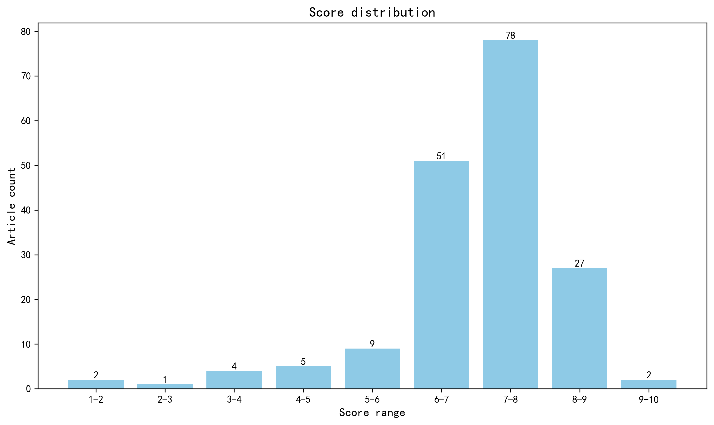

神经科学快讯·第008期 多感觉学习如何将视觉“写入”嗅觉记忆？AI重新定义生命字母表，精准基因编辑再突破 (2026-05-02)
📊 本周概览
历史摘要修订（2026-10-18）：第 008 期保留历史期号、日期与封面。本期 407 条记录中补回 206 条正式摘要，仅对这些条目使用 DeepSeek 重新评分和分级推荐，其余评估保持原值。修订后拟发布 162 篇，其中 6 篇仍缺充分摘要，已保留资料不足提示。来源、旧评分和推荐变更见 getfiles/abstract_history_2026-10-18.json。
- 头条推荐: 2 篇
- 深度解读: 78 篇
- 简要提及: 82 篇
- 跨界启发: 0 篇
- 已过滤: 245 篇
🌏 环球视野

地区与机构按本期原始发表记录、ROR 及城市地址规则分别统计；跨地区合作可重复计入，不作为完整机构排名。评分分布不含“域外局限”文章。
🌍 国家/地区分布 TOP 10
| 排名 | 国家 | 文章数量 |
|---|---|---|
| 1 | United States | 85 |
| 2 | China | 23 |
| 3 | Germany | 15 |
| 4 | United Kingdom | 15 |
| 5 | Canada | 11 |
| 6 | The Netherlands | 10 |
| 7 | Japan | 10 |
| 8 | Australia | 9 |
| 9 | France | 8 |
| 10 | Israel | 5 |
地区计次合计: 231 次；取得地区信息 155/179 篇
🏢 研究机构 TOP 10
| 排名 | 机构 | 文章数量 |
|---|---|---|
| 1 | Harvard University | 12 |
| 2 | Stanford University | 8 |
| 3 | Columbia University | 8 |
| 4 | University of California, San Francisco | 6 |
| 5 | Johns Hopkins University | 5 |
| 6 | McGill University | 5 |
| 7 | Tsinghua University | 5 |
| 8 | Chinese Academy of Sciences | 5 |
| 9 | University of Washington | 5 |
| 10 | University of Chinese Academy of Sciences | 4 |
📊 评分分布
| 评分区间 | 文章数量 |
|---|---|
| 1-2 | 2 |
| 2-3 | 1 |
| 3-4 | 4 |
| 4-5 | 5 |
| 5-6 | 9 |
| 6-7 | 51 |
| 7-8 | 78 |
| 8-9 | 27 |
| 9-10 | 2 |
总计: 179 篇评分文章
📈 各领域文章分布
| 领域 | 深度解读 | 简要提及 | 总计 |
|---|---|---|---|
| 认知神经科学 | 16 | 13 | 29 |
| 未知领域 | 0 | 26 | 26 |
| 临床与转化神经科学 | 12 | 10 | 22 |
| 分子与细胞神经科学 | 14 | 6 | 20 |
| 系统与环路神经科学 | 12 | 5 | 17 |
| 感觉与运动神经科学 | 10 | 6 | 16 |
| 计算与理论神经科学 | 4 | 8 | 12 |
| 方法学 | 6 | 4 | 10 |
| 发育神经科学 | 4 | 3 | 7 |
| 社会与情感神经科学 | 0 | 1 | 1 |
合计: 深度解读 78 篇，简要提及 82 篇，共 160 篇
🥇 头条推荐（9.0+分）
中文标题: 多感觉学习将视觉神经元招募进嗅觉记忆印记
作者: Zeynep Okray, Nils Otto, Anna A. Cook et al.
资深研究者: Nils Otto (h指数=15); Scott Waddell (h指数=51)
关键词: 果蝇, 蘑菇体, 多感觉整合, 记忆痕迹, 光遗传学, 行为学
亮点: 首次揭示多感觉学习如何通过跨模态神经元招募扩展嗅觉记忆印迹，并提供了从突触连接组到行为功能的完整因果证据链。
核心优势: 结合了跨模态行为、神经元功能操控、突触级连接组学和多巴胺/五羟色胺神经调质机制，提出了一个严谨的、可验证的“印迹扩展”跨模态记忆模型。
研究局限: 连接组分析仅为结构推测，缺乏在多感觉学习过程中对DPM神经元桥接动态的功能影像直接验证；且研究基于果蝇，向哺乳动物体系推广需谨慎。
目标读者: 系统与计算神经科学家、学习记忆研究者、神经编码与神经环路追踪学者。
推荐理由: 这项研究在一个经典模型中揭示了多感觉记忆增强的神经环路基础，具有很高的理论价值和实验严谨性。作者利用果蝇蘑菇体Kenyon细胞的精细遗传操作，巧妙地证明了原本只响应视觉刺激的神经元在嗅觉条件化学习后，被功能性招募到嗅觉记忆痕迹中，从而驱动了跨模态的记忆增强。这一发现不仅超越了传统的单感觉记忆储存框架，提出了‘感觉-感觉’神经元共募的新型结合机制，还为理解多感觉学习如何提升物体识别和记忆表现提供了底层的环路逻辑。对于研究感觉整合、记忆分配及记忆增强的计算神经科学家和系统生物学家而言，这项工作提供了可直接测试的环路模型和丰富的灵感。
中文标题: 利用线性DNA供体进行Prime组装实现大片段基因组插入
作者: Bin Liu, Andrew Petti, Xuntao Zhou et al.
单位: Gene Therapy Institute, The Ohio State University, Columbus, OH, USA. liu.13112@osu.edu.; Department of Biological Chemistry and Pharmacology, The Ohio State University, Columbus, OH, USA. liu.13112@osu.edu.; RNA Therapeutics Institute, University of Massachusetts Chan Medical School, Worcester, MA, USA. liu.13112@osu.edu. 等
研究地区: United States
关键词: 基因编辑, CRISPR, Prime Editing, 大片段基因插入, 哺乳动物细胞, 分子工具开发
亮点: 首次在活细胞内实现Gibson-like组装，不依赖双链断裂或同源重组即可插入长达11kb的基因片段。
核心优势: 开发了一种全新的、不依赖HDR的大片段基因插入机制，解决了现有基因编辑工具对大片段的低效瓶颈，且组件简单（线性DNA供体）。
研究局限: 看似完全绕过HDR的分子机制仍需深入解析；NHEJ抑制剂的必要性可能暗示细胞内存在未知的竞争性修复通路。
目标读者: 基因编辑、基因治疗、合成生物学及需要大片段敲入技术的计算与系统生物学家。
推荐理由: 此项研究开发了Prime Assembly (PA) 技术，通过整合线性双链DNA供体与双先导编辑，实现了前所未有的大片段基因敲入（高达11 kb），效率远超现有方法。虽属分子工具创新，但其在神经科学领域的转化潜力巨大：能高效构建携带长编码序列（如通道蛋白、光遗传学工具）的精准细胞和动物模型，或纠正大型致病性突变。对于从事神经退行性疾病建模、神经环路示踪和基因治疗研究的科学家而言，该技术有望突破当前基因装载容量的瓶颈，提供一种更高效、更精准的基因组工程方案。
📚 精选文献（按领域分类）
临床与转化神经科学
中文标题: 维生素 B2 和 B3 营养基因组学揭示 NAXD 疾病的治疗方法
作者: Ankur Garg, Skyler Y Blume, Helen Huynh et al.
单位: Department of Biochemistry and Biophysics, University of California, San Francisco, San Francisco, CA 94158, USA.; Department of Biochemistry and Biophysics, University of California, San Francisco, San Francisco, CA 94158, USA; Gladstone Institutes, San Francisco, CA 94158, USA 等
研究地区: United States
关键词: CRISPR筛选, 营养基因组学, 代谢紊乱, 全基因组筛选, 人类遗传学, 细胞模型
亮点: 首次提出“营养基因组学”框架，通过维生素B3补充将NAXD疾病小鼠模型寿命延长40倍以上，确立了精准维生素干预的治疗潜力。
核心优势: 从全基因组CRISPR筛选到基因敲除小鼠模型，再到空间代谢组学、单核RNA测序及饮食干预实验，形成了完整、多层次的功能验证闭环。
研究局限: NAXD疾病为罕见病，当前结论的临床普适性及人体转化可行性尚待验证；NADHX累积导致神经毒性的具体分子机制尚未完全阐明。
目标读者: 罕见病与神经退行性疾病研究者、代谢与线粒体生物学家、药物基因组学与精准营养领域专家。
推荐理由: 这项研究展示了一个优雅的营养基因组学框架，用于识别对维生素B2/B3调控响应的单基因疾病。作者通过全基因组CRISPR筛选发现NAXD是维生素B3挽救的顶级候选基因，揭示了NADH修复酶在代谢稳态中的关键作用。虽然研究主要聚焦于细胞模型，但其发现对神经科学领域具有深远意义：NAXD缺乏症患者通常表现出严重的神经退行性症状，而本研究提供的机制性洞察和治疗策略（维生素B3补充）为这类目前无法治愈的神经系统疾病开辟了全新的干预路径。对于研究神经代谢疾病、线粒体功能障碍和神经退行性变的神经科学家而言，这项将系统生物学与精准营养治疗相结合的工作提供了极具转化潜力的范本。
中文标题: 卒中血液生物标志物数据的系统综述和荟萃分析突显需要更多转化研究方法
作者: Christine G Smothers, Shivam A Gandhi, Julia H Chang et al.
单位: School of Nursing, Case Western Reserve University, Cleveland, OH, USA.; School of Medicine, Case Western Reserve University, Cleveland, OH, USA.; Department of Orthopedics, Sutter Health, Santa Barbara, CA, USA. 等
研究地区: United States
关键词: 卒中, 血液生物标志物, 系统综述, meta分析, 转化研究, 诊断准确性
亮点: 对30年、863种卒中血液生物标志物的元分析显示，高达56%的诊断性能差异源于研究设计与报告偏倚，校正后无任何检测具备临床可用性。
核心优势: 以系统性元分析量化翻译研究混杂因素对诊断性能估计的影响，揭示生物标志物文献中普遍存在的设计缺陷，为分子生物标志物研究提供可复用的批判性评估框架。
研究局限: 结论基于已发表文献的二次分析，原始研究异质性和报告不完整可能限制混杂因素归因的精确度，且未纳入未发表数据可能引入选择偏倚。
目标读者: 卒中与急诊医学研究者、生物标志物转化研究者、临床检验科学家及系统生物学与元分析方法学者
推荐理由: 该研究通过系统综述和meta分析全面评估了卒中血液生物标志物的诊断性能，并揭示了现有研究在方法学上的局限性（如偏倚风险高、缺乏外部验证），强调了转化研究方法的必要性。对于神经科学读者，本文不仅提供了卒中生物标志物领域的现状概览，还指出了从基础发现到临床应用的转化瓶颈，为未来研究设计提供了方法学指导。
Advances in Cell Therapy for Neural Repair.
深度解读 7.9/10中文标题: 神经修复中细胞疗法的进展
作者: Zholudeva LV, Svendsen SP, Llorente IL et al.
关键词: 细胞治疗, 多能干细胞, 神经修复, 再生医学, 脊髓损伤, 神经退行性疾病
亮点: 系统梳理从多能干细胞衍生神经元/胶质祖细胞到多细胞脑与脊髓类器官的细胞治疗演进，并整合AI/ML驱动的再生神经科学数据范式。
核心优势: 覆盖细胞治疗全谱系（组织移植→iPSC衍生祖细胞→复杂类器官）并前瞻性纳入AI/ML辅助的预测建模与治疗增强策略，框架完整且时效性强。
研究局限: 作为综述缺乏原始数据与定量meta分析，对各类细胞疗法的疗效比较、安全性（如致瘤性、免疫排斥）及临床转化障碍的批判性深度可能不足；AI部分或停留于概念层面。
目标读者: 再生神经科学、干细胞生物学、神经外科/转化医学及计算系统生物学研究者
推荐理由: 该综述系统梳理了多能干细胞衍生细胞疗法在神经修复中的前沿进展，涵盖帕金森病、脊髓损伤等重大适应症。文章不仅总结了细胞移植的分子与环路整合机制，还批判性评估了当前临床转化的瓶颈（如致瘤性、免疫排斥与功能整合验证），为神经科学研究者提供了从基础干细胞生物学到临床应用的路线图。对关注再生医学与转化研究的读者具有重要参考价值。
Laminar organization of cellular microcircuits modulating human interictal epileptiform discharges
深度解读 7.9/10中文标题: 调节人类发作间期痫样放电的细胞微环路的层状组织
作者: Alexander B. Silva, Siddharth A. Marathe, Edward F. Chang
资深研究者: Edward F. Chang (h指数=101)
关键词: 人类颅内电生理, 新皮层, Neuropixels高密度探针, 中间神经元, 层流微环路, 癫痫
亮点: 首次在人类活体大脑中，以单神经元分辨率揭示癫痫发作间期放电的跨层微环路机制，为精准神经调控提供了全新细胞靶点。
核心优势: 利用Neuropixels高密度探针在切除手术患者脑中采样，将宏观临床电生理标志物（IED）与微观的层状、细胞类型特异性神经活动动态直接关联，证据链条极为完整。
研究局限: 样本局限于癫痫病理组织，其微环路机制是否能外推到健康大脑的生理节律仍需验证；且为观察性研究，未直接验证基于预测的闭环神经调控效果。
目标读者: 系统与计算神经科学家、癫痫病学家、神经工程与脑机接口研究者。
推荐理由: 该研究首次在清醒状态下、利用Neuropixels高密度硅探针，对人类癫痫患者新皮层的层流微环路进行大规模单细胞记录，揭示了发作间期痫样放电如何由不同层内特定细胞类型的顺序性发放所组织。其核心发现是：IED期间，浅层兴奋性神经元最早激活，继而中层神经元发放，而深层神经元的抑制性中间神经元在放电终止阶段发挥关键作用。这种跨层次的精密时序结构，为理解癫痫发作间期病理活动的细胞起源提供了前所未有的机械性见解。该工作不仅推进了癫痫的神经环路机制研究，也为基于皮层层次特异性电刺激的闭环神经调控策略提供了直接依据。对于计算神经科学家而言，这些数据是构建人类皮层微环路异常同步化模型的宝贵约束条件。
中文标题: 揭示类淋巴系统在脑老化中的作用：一个全面的生物标志物和可干预靶点
作者: Yuanyuan Fang, Wenxi Luo, Hao Huang et al.
单位: Hubei Key Laboratory of Neural Injury and Functional Reconstruction, Huazhong University of Science and Technology, Wuhan 430030, China.; College of Life Science and Technology, Huazhong University of Science and Technology, Wuhan 430030, China.; Department of Neurology, Tongji Hospital, Tongji Medical College, Huazhong University of Science and Technology, Wuhan 430030, China. 等
研究地区: China
关键词: DTI-ALPS, 脑老化, UK Biobank, 类淋巴系统, 脑年龄模型, 神经影像
亮点: 在4万人队列中，DTI-ALPS类淋巴功能指标与脑龄差距、外周器官衰退及可干预因素（尤其是收缩压<120 mmHg）系统性关联，并提出性别分层的脑老化干预靶点。
核心优势: 超大规模多队列（UKB约4万，另有UKB-ADNI和UKB-TALENT外部验证）整合影像、蛋白组、基因组和纵向可干预因素，证据链完整且外部复现良好。
研究局限: DTI-ALPS仅为类淋巴功能的间接代理指标，缺乏金标准验证；脑龄模型r约0.75属中等精度；观察性关联无法确立因果，血压<120 mmHg的干预建议需RCT证实。
目标读者: 神经影像、脑老化与神经退行性疾病、类淋巴系统及人群队列遗传流行病学研究者
推荐理由: 该研究基于UK Biobank四万余人数据，系统评估了DTI-ALPS指数作为类淋巴系统功能标志物在脑老化中的作用，并构建了整合类淋巴指标的脑年龄模型。研究进一步将脑年龄差与外周器官功能、慢性疾病、蛋白质组和遗传变异关联，识别出可调控干预靶点。这项工作将类淋巴系统从机制假说推向可量化的临床转化标志物，为理解脑老化个体差异和开发干预策略提供了重要资源。
中文标题: Hopx(+)视神经乳头星形胶质细胞对抗神经元应激和青光眼损伤
作者: Steven L Bernstein, Zara Mehrabian, Yan Guo et al.
单位: Department of Neurobiology and Anatomy, Lab of Molecular Research, University of Maryland at Baltimore School of Medicine, Baltimore, MD 21201.; Exosome and Retinal Research Group, School of Optometry and Vision Sciences, University of Wales, Cardiff, Wales CF24 4HQ, United Kingdom.; Department of Ophthalmology and Visual Sciences, Lab of Molecular Research, University of Maryland at Baltimore School of Medicine, Baltimore, MD 21201. 等
研究地区: United States, United Kingdom
关键词: 青光眼, 视神经乳头, 星形胶质细胞, 细胞外囊泡, 视网膜神经节细胞, Hopx
亮点: 鉴定出Hopx(+)视神经乳头星形胶质细胞是视网膜 ganglion 细胞应激的关键守护者，其年龄相关丢失与青光眼损伤相关，补充其分泌因子或EVs可能成为视神经疾病的新治疗范式。
核心优势: 多模态证据链整合了单细胞转录组、EV蛋白质组、体外和体内功能实验以及转基因敲低策略，将Hopx(+)星形胶质细胞的丢失与RGC应激反应直接联系起来。
研究局限: 核心证据主要基于啮齿类模型和相关性转录组分析，Hopx(+)细胞丢失与青光眼之间的因果链条以及EVs具体效应分子的必要性仍需进一步验证。
目标读者: 青光眼与视神经病变研究者、胶质细胞生物学家、细胞外囊泡与神经保护领域科学家
推荐理由: 该研究发现视神经乳头（ONH）存在一群特异性表达Hopx的星形胶质细胞，其数量随衰老而减少。这些细胞分泌的细胞外囊泡能选择性促进视网膜神经节细胞存活和轴突生长，并在青光眼模型中展现神经保护作用。研究将Hopx+星形胶质细胞定位为ONH区域应激响应的关键调控者，为青光眼等年龄相关视神经病变提供了新的细胞靶点和基于囊泡的治疗策略。
中文标题: 按需诱导的癫痫发作促进癫痫治疗药物的快速筛选
作者: Yuzhang Chen, Brian Litt, Flavia Vitale et al.
单位: Center for Neurotrauma, Neurodegeneration, and Restoration, Corporal Michael J. Crescenz Veterans Affairs Medical Center, Philadelphia, United States.; Department of Neuroscience, Perelman School of Medicine, University of Pennsylvania, Philadelphia, United States.; Department of Bioengineering, University of Pennsylvania, Philadelphia, United States. 等
研究地区: United States
关键词: 癫痫, 药物筛选, 动物模型, 光遗传学, 在体电生理, 小鼠
亮点: 光遗传学在慢性癫痫小鼠中按需诱发刻板行为发作，实现高效且病因相关的药物筛选。
核心优势: 将光遗传学刺激与慢性癫痫模型结合，创建了可重复、高通量且保留疾病背景的按需发作模型，并验证了常用抗癫痫药物的效果。
研究局限: 光刺激诱发发作与自发发作的机制等同性仍需更多验证；样本量和模型普适性有限；长期光刺激可能引起组织损伤或 plasticity 改变。
目标读者: 癫痫研究者、神经药理学与药物筛选专家、光遗传学与闭环神经调控技术开发者。
推荐理由: 该研究提出了一种“按需诱发癫痫发作”的新策略，通过光遗传学在慢性癫痫动物模型中可控地触发行为性发作，从而在保持病因相关性的同时实现高通量药物筛选。它有效弥合了急性诱导模型与自发发作模型之间的鸿沟，为抗癫痫药物临床前评估提供了兼具转化价值与可扩展性的新范式。
Comparative transcriptomics reveal molecular convergence and divergence in parkinsonian disorders.
深度解读 7.5/10中文标题: 比较转录组学揭示帕金森综合征的分子趋同与趋异
作者: Synne Geithus, Irene H Flønes, Guido Alves et al.
单位: Neuro-SysMed, Department of Neurology, Haukeland University Hospital, 5021 Bergen, Norway.; Department of Clinical Medicine, University of Bergen, 5020 Bergen, Norway.; K.G. Jebsen Center for Translational Research in Parkinson's disease, University of Bergen, 5020 Bergen, Norway. 等
研究地区: Norway, The Netherlands
关键词: 帕金森病, 转录组学, 比较分析, 神经退行性疾病, 脑组织, 批量RNA测序
亮点: 迄今最大规模的死后脑转录组比较图谱，在帕金森谱系中区分α-突触核蛋白病与tau病的共享与分异分子机制。
核心优势: 977例病理确诊样本、覆盖七种诊断并系统校正年龄、性别、RIN、脑库来源和细胞类型组成，统计设计与开放交互资源显著提升可重复性和再利用价值。
研究局限: 仅为批量前额叶皮层的观察性关联，缺乏单细胞/空间验证与功能因果实验；诊断亚组样本量不均衡（如CBD仅17例），且成人死后组织难以排除终末期与RNA降解混杂。
目标读者: 神经退行性疾病研究者、帕金森病与tau蛋白病分子病理学家、计算与系统生物学家及生物信息学资源开发者
推荐理由: 该研究通过大规模比较批量转录组分析，系统揭示了帕金森病、路易体痴呆、多系统萎缩、进行性核上性麻痹和皮质基底节变性等帕金森叠加综合征的分子趋同与趋异特征。其大样本量和严格质控提升了结果的可靠性，为理解这些疾病的共享与特异病理机制提供了重要资源，并有望推动诊断标志物和靶向治疗的发展。
Circulating extracellular microRNAs as tissue-specific biomarkers of human health and disease
深度解读 7.4/10中文标题: 循环细胞外microRNAs作为人体健康和疾病的组织特异性生物标志物
作者: Wending Li, Christina M Eckhardt, Vrinda Kalia et al.
单位: Department of Occupational and Environmental Health, School of Public Health, Tongji Medical College, Huazhong University of Science and Technology, Wuhan, Hubei, China.; Department of Environmental Health Sciences, Mailman School of Public Health, Columbia University, New York, NY, USA.; Department of Medicine, Vagelos College of Physicians and Surgeons, Columbia University, New York, NY, USA. 等
研究地区: United States, China
关键词: 人类, 液体活检, 生物标志物, 血液, 多组织, 前瞻性队列
亮点: 利用循环外泌体miRNA构建17种组织的组织特异性健康评分，实现多器官疾病的同步预测与毒性监测。
核心优势: 在三个大型人群队列和十个临床群体中系统验证了miR-TS评分的组织特异性、前瞻性预测能力和暴露毒性检测效用，证据链非常扎实。
研究局限: miR-TS评分作为生物标志物的发现和验证，并未深入揭示外泌体miRNA调控组织损伤的因果分子机制，对神经科学等机制研究的直接贡献有限。
目标读者: 临床流行病学、转化医学和生物标志物开发研究者，特别关注多器官健康监测与早期预警的读者。
推荐理由: 这项研究提出了一种基于循环细胞外miRNA的‘组织信号评分’（miR-TS）方法，可同时无创评估包括大脑、心脏、肺在内的17种组织的功能状态。对于神经科学领域而言，该工具的核心价值在于其将大脑与其他器官平行、定量地纳入系统生物学的健康监测框架。研究利用大规模人群队列和临床数据，验证了miR-TS评分的组织特异性及其与健康结局的强关联，尤其在前瞻性数据中展示了对心、脑、肺功能的预测潜力。这为脑疾病的早期预警、系统性与脑部疾病的共病机制研究以及神经退行性疾病的远程监测提供了创新的液体活检手段，突破了传统单一器官检测的局限。其跨组织的同步量化能力，有助于研究者从整体角度理解脑-体交互的分子基础，是转化神经科学领域颇具应用前景的分子工具。
Medial temporal lobe Tau-Neurodegeneration mismatch from structural imaging and plasma biomarkers.
深度解读 7.3/10中文标题: 结构性影像与血浆生物标志物揭示的内侧颞叶Tau-神经退行性变失配
作者: Xueying Lyu, Nidhi S Mundada, Christopher A Brown et al.
单位: Department of Neurology, University of Pennsylvania, Philadelphia, PA 19104, USA.; Department of Radiology, University of Pennsylvania, Philadelphia, PA 19104, USA.; Department of Bioengineering, University of Pennsylvania, Philadelphia, PA 19104, USA. 等
研究地区: United States, Sweden
关键词: 阿尔茨海默病, Tau蛋白, 神经退行性变, 血浆生物标志物, 内嗅皮层, 结构MRI
亮点: 基于血浆p-tau217与MTL形态测量的T-N错配分型，在AD中识别出提示LATE-NC共病理的“脆弱”亚型
核心优势: 将血浆p-tau217与100段MTL分区形态测量配对构建T-N错配表型，并在独立队列及lecanemab真实世界样本中重复验证，兼具无创性与临床可转化性。
研究局限: LATE-NC共病理推断完全依赖间接的影像-血浆表型类比，缺乏尸检或TDP-43生物标志物金标准验证；“脆弱”组的生物学归属仍属推测。
目标读者: AD生物标志物、神经影像、临床痴呆研究与精准医学试验设计研究者
推荐理由: 该研究聚焦阿尔茨海默病早期受累的内侧颞叶，利用结构影像与血浆生物标志物揭示Tau与神经退行性变之间的不匹配现象，并探讨其与非AD共病理（如LATE-NC）的关系。这一工作将多模态生物标志物与临床转化紧密结合，为理解AD异质性及共病理机制提供了新视角，对早期诊断和分型具有潜在价值。
中文标题: 单核细胞来源细胞的动态代谢编程决定中枢神经系统疾病中的免疫
作者: Claire L Wishart, Jian Tan, Nicholas J C King
单位: Charles Perkins Centre, The University of Sydney, Sydney, NSW 2006, Australia.; Infection, Immunity, Inflammation Research Theme, School of Medical Sciences, Faculty of Medicine and Health, The University of Sydney, Sydney, NSW 2006, Australia.; Faculty of Medicine and Health, Sydney Institute for Infectious Diseases, The University of Sydney, Sydney, NSW 2006, Australia. 等
研究地区: Australia
关键词: 单核细胞来源细胞, 免疫代谢, 中枢神经系统炎症, 糖酵解, 氧化磷酸化, 脂质代谢
亮点: 以单核细胞来源细胞的代谢状态为线索，试图超越M1/M2二分法，为CNS炎症性疾病提供统一的免疫代谢框架。
核心优势: 将免疫代谢通路（糖酵解、OXPHOS、脂质与氨基酸代谢）与CNS疾病情境（无菌性损伤、脱髓鞘、病毒性脑炎）进行系统对接，框架清晰且转化指向明确。
研究局限: 作为综述缺乏原创数据与定量整合（如荟萃分析或通路建模），对代谢程序因果性与疾病特异性的批判性评估仍偏描述性，未提出可检验的新假说或统一分类体系。
目标读者: 神经免疫学、免疫代谢及CNS疾病机制与转化研究的研究者与高年级研究生
推荐理由: 这篇综述系统阐述了单核细胞来源细胞在中枢神经系统炎症中的代谢编程机制。作者整合糖酵解、氧化磷酸化、脂质和氨基酸代谢通路，提出代谢状态决定其促炎或修复功能的动态模型。该框架将免疫代谢与神经疾病转化研究相衔接，为多发性硬化等CNS炎症疾病的靶向代谢干预提供了理论依据，对理解先天免疫在脑内的功能异质性具有重要参考价值。
中文标题: 追踪阿尔茨海默病的转折点
作者: Bart De Strooper, Henrik Zetterberg
单位: Leuven Brain Institute, University of Leuven, Leuven, Belgium.; Center for Brain and Disease Research, VIB, Leuven, Belgium.; UK Dementia Research Institute, University College London, London, UK. 等
研究地区: Belgium, United Kingdom, Sweden, United States
关键词: 血液生物标志物, 阿尔茨海默病, tau蛋白, 淀粉样蛋白, 疾病进展, 临床转化
摘要: 作者基于血液生物标志物提出：阿尔茨海默病病理从淀粉样蛋白转向tau蛋白的“机制转折点”可作为干预时机与试验富集的新锚点。
优势: 由领域权威在Science发表的简明观点，清晰阐明血液p-tau等标志物如何捕捉淀粉样蛋白向tau病理的机制切换，观点凝练、方向性强。 局限: 属Perspective短文，未提供原始数据或系统综述，对“转折点”的定量定义、个体差异及因果方向缺乏深入论证，证据强度有限。 受众: 关注AD生物标志物、临床试验设计与转化神经科学的科研人员和临床研究者
中文标题: 氯胺酮如何起作用：一个可操作的假设
作者: Roberto Malinow
单位: Department of Neurosciences and Section of Neurobiology, University of California at San Diego, La Jolla, CA 92093.
研究地区: United States
摘要: Malinow提出氯胺酮经突触与环路可塑性起效的可操作假说，为耐药性抑郁的机制与增效治疗提供新框架。
优势: 由领域资深学者提出机制明确、可检验的假说，将突触可塑性与环路水平变化同抑郁症疗效直接挂钩，并指向提升疗效的可操作路径。 局限: 属观点/假说类文章，缺乏原创实验数据或多模态证据支撑，机制因果链与临床可推广性仍待实证检验。 受众: 神经药理学、突触与环路可塑性、抑郁症机制及转化精神病学研究者
中文标题: 含β2亚基的神经元烟碱型乙酰胆碱受体的遗传编码组成性上调在雌性帕金森病小鼠中具有神经保护作用
作者: Gauri Pandey, Roger C Garcia, Debanjana Das et al.
单位: Texas A&M Institute for Neuroscience (TAMIN), Texas A&M University, College Station, Texas 77843.; Department of Neuroscience and Experimental Therapeutics, Texas A&M University Naresh K. Vashisht College of Medicine, Bryan, Texas 77807.; Texas A&M Institute for Neuroscience (TAMIN), Texas A&M University, College Station, Texas 77843 rahul@tamu.edu.
研究地区: Switzerland, United States
摘要: 仅雌性小鼠中组成型上调β2* nAChR即可通过ER应激通路实现神经保护，为帕金森病性别差异化治疗提供直接遗传学证据。
优势: 构建了无需烟碱配体的β2 nAChR组成型上调新型转基因小鼠，并以四种独立读出指标验证雌性特异性神经保护，直接回答了既往仅有的相关性证据。 局限: 机制仍停留在ER应激/ERES相关蛋白层面，未提供β2亚基上调与17β-雌二醇信号之间的因果分子链接；样本仅限单一6-OHDA模型与年轻雌鼠，长期行为学与跨模型普适性不足。 受众*: 帕金森病与神经退行性疾病研究者、烟碱受体药理学与成瘾神经生物学家、性别差异神经科学及转化医学研究者
中文标题: mTORC1和mTORC2对癫痫相关病理的细胞自主性调控
作者: Christin M Godale, Sarah Yaser, Austin W Drake et al.
单位: Department of Anesthesia, Cincinnati Children's Hospital Medical Center, Cincinnati, Ohio 45229.; Medical Scientist Training Program, University of Cincinnati, Cincinnati, Ohio 45267.; Neuroscience Graduate Program, University of Cincinnati, Cincinnati, Ohio 45267. 等
研究地区: United States
摘要: 细胞自主性mTORC1/mTORC2双通路条件性敲除揭示二者对癫痫相关颗粒细胞结构重塑的混合而非单向保护作用。
优势: 在单个细胞层面同时区分Raptor与Rictor缺失效应，并结合健康与癫痫持续状态两种背景比较效应幅度，逻辑清晰且对照设计较严谨。 局限: 结论主要基于形态学与即刻早期基因描述性指标，缺乏电生理、癫痫发作纵向监测及细胞存活等功能性因果验证，机制推断有限。 受众: 癫痫机制、mTOR信号通路、海马回路可塑性与神经病理学研究者
中文标题: 社会隔离与孤独感与英国生物银行参与者中神经系统疾病、精神疾病、脑结构及行为表型的关联
作者: Yong-Li Zhao, Dan-Dan Zhang, Pei-Yang Gao et al.
单位: Department of Neurology and Institute of Neurology, Huashan Hospital, State Key Laboratory of Medical Neurobiology and MOE Frontier Center for Brain Science, Shanghai Medical College, Fudan University, Shanghai, China.; Institute of Science and Technology for Brain-Inspired Intelligence, Fudan University, Shanghai, China.; Department of Neurology, Qingdao Municipal Hospital, Qingdao University, Qingdao, China. 等
研究地区: China, United Kingdom
摘要: 大规模前瞻性队列与孟德尔随机化相结合，系统描绘了社交孤立/孤独感与11种神经精神疾病的双向因果图谱及潜在生物学中介机制。
优势: 利用超38万人的UK Biobank数据，通过观察性研究、遗传因果推断和中介分析三重设计，提供了高度稳健的多维度证据链。 局限: 缺乏机制层面的细胞或动物模型验证，中介因子解释比例有限；孤独感/社交孤立为问卷定义，存在测量偏倚风险。 受众: 精神疾病与神经退行性疾病流行病学研究者、社会神经科学研究者、计算与系统生物学家。
Acute sleep rebound following sleep restriction is associated with reduced mortality risk
简要提及 6.2/10中文标题: 睡眠限制后的急性睡眠反弹与死亡率降低相关
作者: Xiaoyu Li, Manrui Zhang, Zhenyu Li et al.
单位: Division of Sleep Medicine, Harvard Medical School, Boston, MA, USA.; Department of Sociology, Tsinghua University, Beijing, China. xiaoyu_li@mail.tsinghua.edu.cn.; Department of Sociology, Tsinghua University, Beijing, China. 等
研究地区: China, United States, United Kingdom
摘要: 用大规模可穿戴设备数据证实了“周末补觉”可能有益于健康，将日常化的睡眠恢复模式与死亡率直接关联。
优势: 基于85,618人队列的客观加速度计数据与独立队列验证，提供了高证据强度的流行病学因果推断。 局限: 观察性研究无法确立因果机制，且睡眠模式分类可能过于简化，未考虑日间小睡或睡眠质量等关键混淆因素。 受众: 公共卫生政策制定者、睡眠流行病学家，以及对生活方式医学有兴趣的临床医生。
中文标题: 早期预配置失败：重复性亚震荡的新型预测因子
作者: Jiajia Li, Zhenzhen Yu, Zhenghao Fu et al.
资深研究者: Jiajia Li (h指数=46); Jian Song (h指数=50)
摘要: 提出毫秒级皮层预配置失效作为重复性亚震荡损伤的新型生理标记，为早期诊断提供潜在新指标
优势: 将毫秒级动态脑网络分析与临床亚震荡损伤诊断相结合，探索了传统fMRI无法捕捉的早期皮层动力学特征 局限: 样本量较小，研究发表于arXiv未显示经过同行评审，预配置失败概念缺乏系统性验证和与现有生物标志物的比较 受众: 脑损伤诊断、脑电图信号处理和计算神经科学交叉领域的专业研究者
中文标题: 稳健且临床可靠的脑电图生物标志物：一种面向可推广帕金森病检测的跨人群框架
作者: Nicholas R. Rasmussen, Longwei Wang, Rodrigue Rizk et al.
单位: Affiliation: Biomedical and Translational Sciences, Sanford School of MedicineUniversity of South Dakota, Vermillion, SD 57069, USA; Affiliation: USD AI Research, Department of Computer ScienceUniversity of South Dakota, Vermillion, SD 57069, USA; Affiliation: Department of Sport, Exercise and Rehabilitation, Northumbria UniversityNewcastle upon Tyne, NE1 8ST, United Kingdom 等
资深研究者: Longwei Wang (h指数=24); Arun Singh (h指数=62)
研究地区: United States, United Kingdom
摘要: 一套严格评估脑电生物标志物跨人群泛化能力的框架，揭示了多中心训练对鲁棒性的提升。
优势: 通过穷举75组跨人群评估并结合混合风险优化理论，系统且严谨地量化了数据异质性对EEG标志物泛化性的影响。 局限: 方法论上属于严谨的评估框架应用而非全新发明，且研究的生物学深度不足，未揭示疾病特异性神经环路机制。 受众: 专注于脑电生物标志物开发、机器学习泛化理论及多中心临床数据整合的计算神经科学家和生物医学工程师。
APOE shifts the tipping point: addressing pathological heterogeneity in Alzheimer's disease trials.
简要提及 3.8/10中文标题: APOE改变临界点：应对阿尔茨海默病试验中的病理异质性
输入资料不足：原始摘要未取得，当前评估仅供初筛，推送前需核对原文。
作者: Duygu Tosun
单位: Department of Radiology and Biomedical Imaging, University of California San Francisco, San Francisco, CA 94121, USA.
研究地区: United States
摘要: 提出APOE基因型可作为阿尔茨海默病临床试验中处理病理异质性的分层工具，为精准医学试验设计提供新视角。
优势: 聚焦于当前阿尔茨海默病临床试验中的核心痛点——病理异质性问题，并提出基于遗传因素（APOE）的解决框架。 局限: 作为一篇观点论文，缺乏原创实验数据支撑，其提出的框架有待方法学细节和前瞻性验证。 受众: 阿尔茨海默病临床试验设计者、生物标志物研究人员及关注精准医学的临床神经科学家。
The consequences of MDMA use are not easily disentangled from other drug use or lifestyle factors.
简要提及 1.3/10中文标题: MDMA使用的后果难以与其他药物使用或生活方式因素分开
输入资料不足：原始摘要未取得，当前评估仅供初筛，推送前需核对原文。
作者: Lukas A Basedow
单位: Department of Clinical Psychology and Psychotherapy, Philipps-University Marburg, Marburg 35037, Germany.
研究地区: Germany
摘要: 基于一篇新近研究，强调在解读MDMA认知后果时，必须严格控制多重药物使用与生活方式等混杂因素。
优势: 提出了一个关键的方法论警示，对流行病学或神经心理学研究中变量控制的复杂性有清醒认知。 局限: 作为一篇观点/评述文章，缺乏原始数据与系统性定量分析，证据全来自对其他研究的批判，本身无实证贡献。 受众: 从事物质滥用、精神药理学或流行病学研究的科研人员，特别是依赖大规模观察性研究得出结论的学者。
分子与细胞神经科学
中文标题: 巨噬细胞对活细胞的亚微米级采样
作者: Amy C Fan, Rukman R Thota, Nina Serwas et al.
单位: Department of Pathology, University of California, San Francisco, San Francisco, CA, USA. amy.fan@ucsf.edu.; Department of Pathology, University of California, San Francisco, San Francisco, CA, USA.; Biomedical Sciences Graduate Program, University of California, San Francisco, San Francisco, CA, USA. 等
研究地区: United States
关键词: 巨噬细胞, 活细胞采样, 细胞凋亡, 抗原呈递, 膜接触, 定量成像
亮点: 颠覆了免疫系统仅通过吞噬凋亡细胞获取自身抗原的传统认知，揭示巨噬细胞能够对活细胞进行非破坏性的直接采样。
核心优势: 结合活体成像与囊泡标记技术，在亚微米尺度上实时可视化了“巨噬细胞-活细胞”互作的全新过程，并功能性验证了其独特的抗原呈递路径。
研究局限: 对免疫学领域外的借鉴意义未作引申；活体采样过程的分子调控机制仍待阐明。
目标读者: 免疫学家、细胞生物学家、对细胞间通讯及膜动力学感兴趣的计算与系统生物学家。
推荐理由: 这项研究提出了一项颠覆性的范式转变：巨噬细胞通过从活细胞上亚微米级“剪切”小片段来持续采样自身抗原，而非仅依赖传统的凋亡细胞清除机制。对于神经科学界而言，这一发现具有深远意义。首先，它为小胶质细胞（脑内驻留巨噬细胞）在稳态下监控神经元的机制提供了全新框架，提示我们小胶质细胞可能通过类似“胞啃”（trogocytosis）的接触方式，实时评估突触后膜或轴突末梢的“自我”身份，从而在突触可塑性和修剪中发挥更精细的作用。其次，该机制可能揭示自身免疫性神经疾病（如多发性硬化）中，小胶质细胞异常呈递少突胶质细胞或髓鞘抗原的早期步骤。技术上，结合了体内双光子成像与超微结构分析的方法学标准，为神经科学家在活体脑内研究胶质细胞-神经元互作提供了可借鉴的黄金范式。此项工作将免疫学的基础原则与神经系统的独特细胞生物学需求紧密联系在了一起,值得高度关注。
Mechanism-guided identification of antidepressant G protein-coupled receptor drug targets
深度解读 8.4/10中文标题: 机制引导的抗抑郁G蛋白偶联受体药物靶点鉴定
作者: Hermany Munguba, Anisul Arefin, Ryota Hasegawa et al.
单位: Department of Biochemistry and Biophysics, Weill Cornell Medicine, New York, NY, USA.; Department of Biochemistry and Biophysics, Weill Cornell Medicine, New York, NY, USA; Department of Psychiatry, Weill Cornell Medicine, New York, NY, USA. 等
研究地区: United States, Germany
关键词: 机制引导的药物发现, G蛋白偶联受体, 氯胺酮, μ-阿片受体, 内侧前额叶皮质, 生长抑素中间神经元
亮点: 揭示氯胺酮通过μ-阿片受体作用于特定中间神经元亚型的快速抗抑郁机制，并以此为基础建立了一套从机制到靶点筛选的计算-实验闭环策略，为脑疾病药物开发提供了可推广的范式。
核心优势: 将机制洞察（MOR/Sst+ IN）无缝转化为可操作的GPCR靶点发现管线，实现了从‘理解机制’到‘设计疗法’的跨越，具有极高的转化价值和普适性。
研究局限: 多靶点协同策略虽展示了概念验证，但其在慢性应激模型中长期的神经可塑性效应、脱靶毒性及人类转化潜力尚缺乏深入评估。
目标读者: 专注于神经环路、神经精神疾病机制、计算生物学及下一代药物发现（GPCR药理学）的神经科学家和系统药理学家。
推荐理由: 这项研究以快速抗抑郁药氯胺酮为分子探针，精巧地揭示了其行为效应依赖于内侧前额叶皮质（mPFC）中生长抑素阳性中间神经元（Sst+ INs）上的μ-阿片受体（MORs），从而建立了一种“机制引导的GPCR靶点发现”范式。该工作的核心价值在于，它并未停留在简单的靶点识别，而是从环路机制的层面阐释了慢性应激如何改变特定神经元群上的受体功能，并将这一上游机制与下游的突触和行为表型相关联。对于计算神经科学家和系统生物学家而言，这项工作提供了一个高度可建模的系统：从GPCR信号级联到特定中间神经元类型的放电特性，再到皮层微环路内的抑制性调控与整体网络状态，构成了一个跨层次的分析框架，为理解情感障碍的分子-环路交互作用打开了新的窗口。该研究发表于顶刊，其逻辑严谨性和方法学深度均为领域树立了高标准。
中文标题: 动粒蛋白控制有丝分裂后神经元的微管动力学以调节树突棘的形成
作者: Guoli Zhao, Aditi Sharma, Jing Tang et al.
单位: F.M. Kirby Neurobiology Center, Boston Children's Hospital, Boston, MA 02115.; Department of Neurobiology, Harvard Medical School, Boston, MA 02115.; Univ. Grenoble Alpes, Inserm, U1216, Commissariat à l'énergie atomique et aux énergies alternatives, Grenoble Institut Neurosciences, Grenoble 38000, France. 等
研究地区: United States, France
关键词: 动粒蛋白, 微管动力学, 树突棘, 海马神经元, 皮层神经元, iNeurons
亮点: 动粒蛋白在分裂后神经元中以类有丝分裂复合体形式稳定微管正端，进而限制树突棘入侵与棘形成。
核心优势: 将经典细胞周期机器（Ndc80/Dsn1/Mis12）重新定位为分裂后神经元微管正端稳定因子，并用跨物种（哺乳动物iNeuron/小鼠条件敲除与线虫单根微管成像）及结构域回补实验形成机制闭环。
研究局限: 核心结论多依赖相关性与回补验证，动粒复合体在神经元中的化学计量、组装状态及与微管正端追踪蛋白（如EB、CLASP）的分子互作尚未直接解析；体内树突棘表型的环路与行为后果未评估。
目标读者: 细胞神经生物学、微管细胞骨架、树突棘可塑性及神经发育疾病研究者
推荐理由: 该研究颠覆了动粒蛋白仅在有丝分裂中发挥功能的传统认知，揭示Ndc80、Dsn1和Mis12等动粒组分在分裂后神经元的树突和轴突中定位于微管正端，通过调控微管正端动态影响树突棘形成。条件性敲除小鼠Ndc80或Dsn1导致树突棘数量增加，而三种动粒蛋白缺失均增强微管正端动态。线虫实验进一步证实其保守功能。这项工作将细胞周期机器与神经元形态发生直接联系，为理解树突棘可塑性提供了全新分子机制，对发育神经生物学和突触可塑性研究具有重要意义。
(-)-Englerin A binding to human TRPC5 exposes an aromatic interaction network in channel activation
深度解读 8.1/10中文标题: (-)-Englerin A与人源TRPC5的结合揭示了通道激活中的芳香族相互作用网络
作者: Sebastian A Porav, Alexandra Ptakova, Claudia C Bauer et al.
单位: Leeds Institute of Cardiovascular and Metabolic Medicine, LIGHT Laboratories, University of Leeds, Leeds, UK. s.porav@leeds.ac.uk.; Astbury Centre for Structural Molecular Biology, University of Leeds, Leeds, UK. s.porav@leeds.ac.uk.; Department of Cellular Neurophysiology, Institute of Physiology, Czech Academy of Sciences, Prague 4, Czech Republic. 等
研究地区: United Kingdom, Czechia
关键词: 冷冻电镜 (cryo-EM), 人源蛋白, 异源表达体系, 结构生物学, 配体门控机制
亮点: 通过九种高分辨率冷冻电镜结构，首次在原子层面揭示天然产物(-)-Englerin A激活人源TRPC5通道的芳香族互作网络机制，为理性药物设计奠定结构基础。
核心优势: 提供了多种状态和配体占据的高分辨率冷冻电镜结构，并结合系统的功能突变实验，在原子水平上完整阐明了激动剂、竞争性抑制剂的作用机制及通道选择性。
研究局限: 研究主要集中于静态或预开放构象的捕获，对于完全开放状态下的动态构象变化及完整的门控动力学刻画仍可进一步深入。
目标读者: 离子通道药理学家、结构生物学家以及以TRPC4/5为靶点的计算药物化学家与系统生物学家。
推荐理由: 本文为理解TRPC5通道的药理学调控提供了里程碑式的结构蓝图。TRPC5作为多模态细胞传感器，在神经发育、焦虑及肾脏疾病中作用关键，而(-)-englerin A (EA) 是研究该通道不可多得的工具分子。该研究通过解析九种不同状态的高分辨率冷冻电镜结构，精准揭示了EA结合于通道亚基间保守的脂质结合位点，并触发一个精妙的芳香族氨基酸相互作用网络来驱动通道开放。这一发现不仅从原子层面阐明了植物天然产物高效选择性激活TRPC4/5的物理化学基础，更为基于结构的理性药物设计提供了直接模板。对于从事突触可塑性、感觉信号传导及系统计算建模的神经科学家而言，这项研究确立的激活机制将极大促进对TRPC5介导的钙信号时空动态的精确理解与干预。
中文标题: 针对硝化神经生长因子的单克隆抗体揭示ALS中氧化依赖的致病标志物
作者: Valentina Varela, Santiago Garcimartín, Emiliano Trias et al.
单位: Departamento de Bioquímica, Facultad de Medicina, Universidad de la República, Montevideo 11800, Uruguay.; Laboratorio de Neurodegeneración, Institut Pasteur de Montevideo, Montevideo 11400, Uruguay.; Centro de Investigaciones Biomédicas (CEINBIO), Facultad de Medicina, Universidad de la Republica, Montevideo 11800, Uruguay. 等
研究地区: Uruguay, United States, France
关键词: 神经生长因子, 蛋白质硝化, 单克隆抗体, 肌萎缩侧索硬化, 氧化应激, 运动神经元
亮点: 首个针对硝化神经生长因子的高特异性单克隆抗体，将NGF氧化修饰确立为ALS的运动神经元退化区域标志物。
核心优势: 方法学链条完整：杂交瘤筛选、SPR亲和力测定、原子分辨率晶体结构界定Tyr52硝化为核心抗原决定簇，并在啮齿模型与人ALS样本中多区域验证NO2NGF积聚。
研究局限: 人类证据以免疫荧光共定位为主，缺乏独立队列定量与因果性干预；NO2NGF是否为驱动因素还是伴随现象尚未区分，抗体体内中和的治疗潜力未验证。
目标读者: 神经退行性疾病、神经滋养因子信号、氧化应激与蛋白质翻译后修饰及抗体工具开发研究者
推荐理由: 该研究成功制备了高亲和力、高选择性的硝化神经生长因子（NO2NGF）单克隆抗体，首次揭示了NO2NGF在ALS中的氧化依赖性致病标志物地位。这一工具不仅为在体内追踪氧化修饰神经营养因子提供了关键手段，也建立了蛋白质硝化与神经退行性疾病之间的直接联系。对神经科学领域而言，该工作凸显了氧化翻译后修饰在ALS发病机制中的潜在驱动作用，并为开发针对NO2NGF的靶向治疗策略奠定了分子基础。
Serotonin potentiates presynaptic calcium currents and transmitter release at cortical synapses.
深度解读 7.8/10中文标题: 血清素增强皮层突触前钙电流和递质释放
作者: Rinako Miyano, Taichi Onishi, Eri Tabuchi et al.
单位: Graduate School of Brain Science, Doshisha University, Kyotanabe, Kyoto 610-0394, Japan.; Department of Pharmacology, Graduate School of Medicine, The University of Tokyo, Tokyo 113-0033, Japan.
研究地区: Japan
关键词: 血清素, 突触前机制, 钙电流, 递质释放, 皮层突触, 电生理
亮点: 直接海马苔藓纤维末梢膜片钳记录揭示了5-羟色胺通过PKA增强P/Q型钙通道并调控释放机器的双重突触前机制。
核心优势: 直接在哺乳动物中枢突触末梢进行膜片钳与电容记录，分离并量化钙通道增强与释放机器调控对递质释放的相对贡献。
研究局限: 机制研究局限于海马苔藓纤维单一突触类型，5-HT受体亚型及内源性5-HT释放的生理相关性未充分阐明。
目标读者: 突触生理学、神经调质生物学、海马回路与精神疾病机制研究者
推荐理由: 该研究直接记录了皮层突触前末端的钙电流，揭示了血清素通过增强突触前钙内流促进递质释放的细胞机制。这一发现填补了神经调质在哺乳动物突触前作用机制的空白，将血清素信号与突触效能动态调控联系起来，为理解情绪、学习记忆及相关精神疾病的突触基础提供了关键环节。技术上的直接突触前记录策略也为研究其他神经调质提供了范本。
Lactoperoxidase is a candidate for mediating neuromelanin formation in the human substantia nigra.
深度解读 7.8/10中文标题: 乳过氧化物酶是介导人黑质中神经黑色素形成的候选酶
作者: Zsuzsanna E Tóth, Mónika Baráth, Veronika F S Pape et al.
单位: Department of Physiology, Semmelweis University, Faculty of Medicine, Budapest H-1094, Hungary.; Department of Anatomy, Histology and Embryology, Semmelweis University, Faculty of Medicine, Budapest H-1094, Hungary.; Molecular Physiology Research Group, Department of Physiology, Hungarian Research Network and Semmelweis University, Budapest H-1094, Hungary.
研究地区: Hungary
关键词: 乳过氧化物酶, 神经黑色素, 黑质, 帕金森病, 多巴胺能神经元, 人类
亮点: 乳过氧化物酶被确定为人类黑质中去甲肾上腺素能神经元中形成神经黑色素的选择性催化酶，将色素合成与抗氧化防御联系起来。
核心优势: 通过多种方法（人脑组织中的选择性表达、体外多步黑色素合成催化、大鼠黑质中的转基因诱导）确定了长期缺失的神经黑色素合成候选酶，并揭示了与帕金森病相关的H2O2解毒机制。
研究局限: 因果性体内证据仅限于大鼠异源表达模型；神经黑色素形成、LPO活性与人类多巴胺能神经元存活/帕金森病发病机制之间的直接联系仍属推断，而非在人类中直接验证。
目标读者: 帕金森病研究者、神经黑色素与 catecholamine 神经生物学家、氧化应激与抗氧化防御研究者以及神经退行性疾病领域的系统生物学家
推荐理由: 该研究首次揭示宿主防御酶乳过氧化物酶（LPO）在人黑质多巴胺能神经元中选择性表达，而啮齿类黑质不表达，并证明LPO可在体外催化黑色素形成的多个步骤。在大鼠黑质转基因表达人LPO可诱导神经黑色素样色素沉积，为人类黑质神经黑色素合成机制提供了候选酶，并提示LPO可能参与帕金森病中选择性神经元易损性。这项工作架起了外周防御酶与中枢色素代谢之间的桥梁，对理解人类特异性神经黑色素生物学及帕金森病发病机制具有重要意义。
The Right Time for a Synapse to Change: Windows and Mechanisms of Multiday Training Trials.
深度解读 7.5/10中文标题: 突触改变的正确时机：多日训练试验的时间窗口与机制
作者: Rong-Yu Liu, Yili Zhang, Roberta Calvo et al.
单位: Department of Neurobiology and Anatomy, W.M. Keck Center for the Neurobiology of Learning and Memory, McGovern Medical School at the University of Texas Health Science Center at Houston, Houston, Texas 77030 john.h.byrne@uth.tmc.edu.; Departments of Electrical and Computer Engineering and Psychological Sciences, Rice University, Houston, Texas 77005.; Department of Neurobiology and Anatomy, W.M. Keck Center for the Neurobiology of Learning and Memory, McGovern Medical School at the University of Texas Health Science Center at Houston, Houston, Texas 77030.
研究地区: United States
关键词: 海兔, 突触可塑性, 长期突触易化, 训练时间窗, 计算建模, 电生理
亮点: 转录因子CREB1与CREB2竞争的动力学充当细胞内计时器，界定多天训练中第二次刺激增强长期突触可塑性的关键时间窗
核心优势: 将经验性电生理与计算建模结合，在单个感觉神经元层面证明时间窗是细胞内在特性，并给出CREB1/CREB2竞争这一可检验的分子机制。
研究局限: 机制证据主要来自计算模型与药理学推断，缺乏对CREB1/CREB2动态的直接分子测量；时间窗仅检验18、24、32小时三个点，且基于Aplysia单一突触模型，向哺乳动物记忆巩固的推广有限。
目标读者: 学习记忆与突触可塑性研究者、计算神经科学家、分子与细胞神经生物学家
推荐理由: 该研究结合电生理实验与计算建模，在海兔感觉-运动突触上揭示了多天训练中第二个刺激块增强长期突触易化（LTF）和神经元兴奋性长期增强（LTEE）的关键时间窗（24小时）。这不仅为“分散训练优于集中训练”的行为学现象提供了突触层面的机制解释，还建立了可预测最佳训练间隔的计算框架，对理解记忆巩固的时间规则具有跨物种启示。
中文标题: 通过ACLY调节的组蛋白乙酰化实现葡萄糖依赖的少突胶质前体细胞增殖时空调控
作者: Sami Sauma, Stephanie Stransky, Ipek Selcen et al.
单位: Neuroscience Initiative, Advanced Science Research Center at The City University of New York, New York, NY, USA. sami.sauma@pharma.uzh.ch.; Department of Biochemistry, Albert Einstein College of Medicine, Bronx, NY, USA.; Graduate Program in Biology, The Graduate Center of The City University of New York, New York, NY, USA. sami.sauma@pharma.uzh.ch. 等
研究地区: United States
关键词: 基因敲除小鼠模型, 单细胞RNA测序, 代谢组学, 表观遗传学, 髓鞘形成与胶质细胞生物学, ChIP-seq/CUT&Tag
亮点: 揭示葡萄糖如何通过ACLY介导的组蛋白乙酰化，在时空上精细调控少突胶质前体细胞增殖，为脑区能量代谢与细胞命运决定建立直接联系。
核心优势: 将代谢微环境（葡萄糖波动）与表观遗传修饰（组蛋白乙酰化）关联，清晰地解释了OPC增殖与分化的代谢开关机制，尤其是通过条件性敲除小鼠进行了体内验证。
研究局限: 未能直接在体内实时动态地展示不同脑区葡萄糖浓度与OPC乙酰化及增殖的因果关系，且在OL分化代偿机制上的阐述较初步。
目标读者: 神经胶质细胞生物学家、发育神经科学家、以及专注于代谢-表观遗传交叉调控的计算与系统生物学家。
推荐理由: 这篇研究揭示了脑内葡萄糖波动如何通过ACLY-组蛋白乙酰化轴区域性调控少突胶质前体细胞（OPC）的增殖动态，为理解发育期和成年期髓鞘可塑性提供了新的代谢-表观遗传耦合机制。该工作出色地将代谢状态与细胞命运决定联系起来，解释了为什么不同脑区OPC增殖速率存在差异，而非依赖于传统的生长因子信号。对计算和系统生物学家而言，这项研究为构建包含营养微环境、代谢通量和表观遗传状态的多尺度OPC群体动力学模型提供了关键的分子参数和区域性数据集。特别值得注意的是，ACLY依赖的乙酰-CoA供应并非均匀分布，提示表观遗传调控本身受局部代谢环境的制约，这对理解脑区选择性病理变化（如多发性硬化或低灌注脑损伤）具有重要启示。该研究的组织透明化成像和体内代谢示踪技术也具有方法学参考价值。
Towards a unified molecular mechanism for ligand-dependent activation of NR4A-RXR heterodimers.
深度解读 7.4/10中文标题: 迈向NR4A-RXR异二聚体配体依赖性激活的统一分子机制
作者: Xiaoyu Yu, Yuanjun He, Thedore M Kamenecka et al.
单位: Department of Molecular Medicine, Scripps Research and The Herbert Wertheim UF Scripps Institute for Biomedical Innovation and Technology, Jupiter, United States.; Department of Biochemistry, Vanderbilt University, Nashville, United States.; Department of Integrative Structural and Computational Biology, Scripps Research and The Herbert Wertheim UF Scripps Institute for Biomedical Innovation and Technology, Jupiter, United States. 等
研究地区: United States
关键词: 核受体, Nurr1, RXR, 转录调控, 配体药理学, 结构机制
亮点: 核受体NR4A-RXR异二聚体的配体依赖性激活可能由经典共激活因子招募与非经典LBD异二聚体解离共同驱动，挑战了以RXR激动剂为核心的单一药理学模型。
核心优势: 整合生化蛋白互作分析、NMR结构动力学检测与细胞转录实验，并对既往Nurr1-RXRα数据进行再分析，方法学严谨且结论具有自洽性。
研究局限: 缺乏选择性Nur77-RXRγ激动剂，且机制结论主要基于体外重构与细胞报告系统，生理与疾病相关语境下的普适性尚未验证。
目标读者: 核受体信号转导、神经炎症与神经退行性疾病、基因转录调控及化学生物学研究者
推荐理由: 该研究挑战了核受体异二聚体激活的经典药理学模型，提出RXR配体激活Nurr1-RXRα异二聚体并非通过增强共激活因子招募，而是涉及配体依赖的构象重排和动态调控。这一统一分子机制不仅重新定义了容许性异二聚体的激活逻辑，还为靶向Nurr1（帕金森病和神经炎症的关键靶点）的药物设计提供了新思路。研究结合生物化学、细胞实验与计算模拟，框架清晰，对理解神经系统中核受体信号转导的分子基础具有重要价值。
中文标题: 细胞外HSPA5/Grp78/BiP通过其受体Plexin-B3和Nkx2.8调控小鼠少突胶质细胞髓鞘形成
作者: Yuki Miyamoto, Tomohiro Torii, Shou Takashima et al.
单位: Department of Pharmacology, National Research Institute for Child Health and Development, Tokyo 157-8535, Japan miyamoto-y@ncchd.go.jp yamauchi@toyaku.ac.jp.; Laboratory of Molecular Neuroscience and Neurology, Tokyo University of Pharmacy and Life Sciences, Tokyo 192-0392, Japan.; Department of Molecular and Cellular Neurobiology, Kitasato University Graduate School of Medical Sciences, Kanagawa 252-0329, Japan. 等
研究地区: Japan
关键词: 少突胶质细胞, 髓鞘形成, Plexin-B3, HSPA5, Nkx2.8, 小鼠
亮点: 神经元分泌的HSPA5/Grp78/BiP作为Plexin-B3配体，经Nkx2.8调控少突胶质细胞髓鞘化，揭示一条全新的神经元-胶质细胞信号轴。
核心优势: 通过少突胶质细胞特异性Plexin-B3敲除与神经元特异性HSPA5敲低双向遗传学验证，结合生化与组织学证据，首次将经典热休克蛋白HSPA5及其非经典受体Plexin-B3、下游转录因子Nkx2.8整合为调控髓鞘厚度的信号通路。
研究局限: 机制链条仍以相关性为主：Nkx2.8仅为“潜在介导者”，缺乏直接结合与功能 rescue 证据；HSPA5作为分泌配体的生理释放机制、Plexin-B3下游具体信号转导步骤未阐明；仅使用雄性小鼠，性别差异与行为学/电生理功能后果缺失。
目标读者: 胶质细胞生物学、髓鞘发育与再生、神经信号转导及分子神经科学研究者和计算系统生物学家
推荐理由: 该研究揭示了胞外HSPA5/Grp78/BiP通过其受体Plexin-B3及下游转录因子Nkx2.8调控少突胶质细胞髓鞘形成的新机制。Plexin-B3传统上被认为是Semaphorin家族受体，此处却介导HSPA5信号，拓展了我们对少突胶质细胞发育信号的理解，为髓鞘再生障碍相关疾病提供了潜在靶点。
Exaggerated NMDA Receptor-Primed Metaplasticity via SK Channel Dysregulation in Fmr1 Knockout Mice.
深度解读 7.2/10中文标题: Fmr1基因敲除小鼠中SK通道失调导致NMDA受体启动的突触可塑性过度增强
作者: Toshihiro Nomura, Chad Morton, John J Marshall et al.
单位: Departments of Neuroscience, Feinberg School of Medicine, Chicago, Illinois 60611.; Psychiatry and Behavioral Sciences, Feinberg School of Medicine, Chicago, Illinois 60611.; Departments of Neuroscience, Feinberg School of Medicine, Chicago, Illinois 60611 toshihiro.nomura@northwestern.edu tnomura@inst-hsc.jp a-contractor@northwestern.edu. 等
研究地区: United States
关键词: Fmr1 KO, 海马CA1, NMDA受体, SK通道, 突触可塑性, 脆性X综合征
亮点: Fmr1 KO小鼠CA1区NMDAR启动的metaplasticity被SK通道活动异常放大，揭示状态依赖性突触可塑性缺陷而非经典LTP本身受损。
核心优势: 将FXS中看似正常的经典LTP与状态依赖的metaplasticity缺陷区分开，并通过药理学阻断SK通道逆转异常，因果链条较清晰。
研究局限: 机制证据主要依赖药理学工具，缺乏SK通道亚型特异性操作和直接通道活动记录；单脑区、单性别、离体切片限制转化与泛化意义。
目标读者: 突触可塑性与离子通道研究者、脆性X综合征及孤独症模型研究者、海马生理学与计算神经科学读者
推荐理由: 该研究揭示了Fmr1 KO小鼠海马CA1区一种新的突触可塑性异常：NMDA受体启动的元可塑性因SK通道失调而过度增强。尽管经典LTP完好，这种状态依赖性可塑性的失衡可能导致网络兴奋性紊乱，为脆性X综合征的认知障碍提供了新机制。靶向SK通道或NMDA受体调控元可塑性，可能成为潜在治疗策略，值得神经科学读者关注。
中文标题: 泛素连接酶COP1通过降解小胶质细胞中的c/EBPβ抑制神经炎症
输入资料不足：原始摘要未取得，当前评估仅供初筛，推送前需核对原文。
作者: Ada Ndoja, Rohit Reja, Seung-Hye Lee et al.
关键词: 小胶质细胞, 泛素化/蛋白酶体降解, 小鼠模型, 转录调控, 神经炎症
亮点: 揭示小胶质细胞内在制动机制——COP1通过降解c/EBPβ抑制神经炎症，为阿尔茨海默病等神经退行疾病提供微glia生物学新靶点。
核心优势: 从生化和体内模型缜密论证了COP1-c/EBPβ轴作为小胶质细胞活化核心检查点的功能，确证了靶向COP1底物而非上游炎症信号的干预策略有效性。
研究局限: 方法学以经典基因敲除和生化实验为主，缺乏单细胞分辨率下的全基因组功能基因组学或空间多组学数据，且人类疾病相关性的因果证据依赖关联分析。
目标读者: 神经免疫学家、神经退行性疾病研究者、胶质细胞生物学家及药物靶点发现领域的计算和系统生物学家。
推荐理由: 这篇论文揭示了E3泛素连接酶COP1通过降解转录因子c/EBPβ来负向调控小胶质细胞介导的神经炎症这一全新机制。研究在分子层面精准地描绘了一条从蛋白降解到转录调控的信号通路，并提供了扎实的生化与遗传学证据。对于计算神经科学家和系统生物学家而言，这项工作不仅鉴定了一个关键的炎症检查点，更提供了一个逻辑清晰、可数学建模的核心调控回路（COP1-c/EBPβ-炎症因子），为理解神经免疫稳态的动力学和开发靶向神经炎症的干预策略提供了高价值的新靶点和理论框架。其严谨的机制解析符合顶刊标准，是一篇值得关注的胶质细胞生物学研究。
中文标题: SelO催化的NAD+水解是维持线粒体稳态所必需的
作者: Xiaofan Jia, Teng Zhang, Chenxi Yang et al.
单位: Department Of Pharmacology, Tianjin Key Laboratory Of Inflammatory Biology, The Province And Ministry Co-Sponsored Collaborative Innovation Center For Medical Epigenetics, State Key Laboratory Of Experimental Hematology, School Of Basic Medical Sciences, Tianjin Cancer Institute And Hospital, Tianjin Medical University Cancer Institute And Hospital, Tianjin Medical University, Tianjin, China; The Sichuan Provincial Key Laboratory For Genetic Diseases, Institute For Laboratory Medicine, Sichuan Provincial People'S Hospital, School Of Medicine, University Of Electronic Science And Technology Of China, Chengdu, China.; Department Of Pharmacology, Tianjin Key Laboratory Of Inflammatory Biology, The Province And Ministry Co-Sponsored Collaborative Innovation Center For Medical Epigenetics, State Key Laboratory Of Experimental Hematology, School Of Basic Medical Sciences, Tianjin Cancer Institute And Hospital, Tianjin Medical University Cancer Institute And Hospital, Tianjin Medical University, Tianjin, China.
资深研究者: Xiaofan Jia (h指数=15); Teng Zhang (h指数=51)
关键词: 线粒体生物学, NAD+代谢, 脂质代谢, pH调控, 酶学, 体外生化分析
亮点: 揭示了一种由pH门控的NAD+水解酶SelO，将线粒体基质碱化、NAD+代谢与脂质稳态直接关联，为理解线粒体代谢调控提供了新视角。
核心优势: 在高度保守的假激酶SelO中发现全新的NAD+水解酶活性，并将其与线粒体pH感应和脂质代谢调控进行功能性连接，概念新颖。
研究局限: 对神经系统的直接关联和转化意义阐述不足，主要基于生化与细胞模型，缺乏在体神经功能或行为学层面的验证。
目标读者: 线粒体生物学与代谢调控研究者，对细胞信号转导和系统生物学交叉领域感兴趣的科学家。
推荐理由: 这篇研究揭示了SelO作为一种保守的线粒体酶，通过水解NAD+响应基质pH升高的非经典调控机制，直接连接线粒体环境感知与脂质稳态维持。对于神经科学领域而言，这项工作的核心价值在于描绘了一条全新的、可能普遍存在的线粒体质量控制和代谢适应通路。鉴于神经元对线粒体功能紊乱和脂质代谢异常高度敏感（这在帕金森病、阿尔茨海默病等神经退行性疾病中尤为突出），SelO/NAD+/pH信号轴的发现为理解突触能量代谢、线粒体自噬和神经炎症的调控提供了新的分子切入点。虽然研究本身使用非神经元模型，但其揭示的生化机制具有高度可转化性，为未来在神经元体系中探索线粒体应激反应和开发靶向代谢的神经保护策略奠定了重要基础。推荐给关注线粒体、代谢调控及神经退行性疾病的细胞和分子神经科学家。
Distinct mechanisms of inhibition of Kv2 potassium channels by tetraethylammonium and RY785.
简要提及 6.8/10中文标题: 四乙基铵和RY785抑制Kv2钾通道的不同机制
作者: Shan Zhang, Robyn Stix, Esam A Orabi et al.
单位: Theoretical Molecular Biophysics Laboratory, National Heart, Lung and Blood Institute, National Institutes of Health, Bethesda, United States.; Molecular and Cell Biology Graduate Program, Johns Hopkins University, Baltimore, United States.
研究地区: United States
摘要: 全原子分子动力学模拟揭示RY785以非孔轴、贴壁结合方式变构关闭Kv2.1胞质门，区别于TEA的孔道物理堵塞机制
优势: 以单分子尺度模拟较清晰地分辨出两种抑制剂在结合位点、离子通透性与门控耦联上的机制差异，并为RY785远距离调控电压感受器提供结构假说。 局限: 证据完全依赖模拟，缺乏电生理、突变或结构实验的直接验证；Kv2.1通道构象与膜环境简化可能影响结果的生理相关性，机制结论仍属计算推演。 受众: 离子通道生物物理学、分子模拟与药物设计研究者，以及关注Kv2亚型特异性抑制剂的神经药理学读者
中文标题: 伪狂犬病毒触发铁蛋白自噬介导的铁死亡和神经炎症在病毒性脑炎中的作用
作者: Jiali Sun, Caiyun Huo, Yuli Li et al.
单位: State Key Laboratory of Veterinary Public Health and Safety, Key Laboratory of Animal Epidemiology of Ministry of Agriculture and Rural Affairs, College of Veterinary Medicine, China Agricultural University, Beijing 100193, China.; Key Laboratory of Veterinary Bioproduction and Chemical Medicine of the Ministry of Agriculture, Zhongmu Institutes of China Animal Husbandry Industry Co., Ltd, Beijing 100095, China.
研究地区: China
摘要: 伪狂犬病毒感染通过铁蛋白自噬触发铁死亡，并由PTGS2/PGE2通路驱动神经炎症，去铁胺可缓解病毒性脑炎
优势: 在细胞、原代神经元和动物脑内多层次验证PRV诱导铁蛋白自噬-铁死亡-神经炎症轴，并用转录组与代谢组整合分析锁定PTGS2/PGE2通路，去铁胺干预同时降低病毒滴度和炎症，具有转化提示意义 局限: 铁死亡与神经炎症的因果方向仍主要依赖相关性证据和单一抑制剂，缺乏铁蛋白自噬关键分子的遗传学敲除/回补验证，且PRV新发人类感染株的临床相关性及跨物种普适性尚未充分证明 受众: 病毒神经生物学、神经免疫学、铁死亡与细胞死亡研究及猪病防控与转化医学研究者
中文标题: 探索PrP(C)去折叠作为PrP(Sc)传播背景下其重折叠前关键步骤的研究
作者: Sanaz Sabzehei, Marta Rigoli, Raúl Cacheiro et al.
单位: Asociación Centro de Investigación Cooperativa en Biociencias, Basque Research and Technology Alliance, Prion Research Lab, Derio 48160, Spain.; Center for Research in Molecular Medicine and Chronic Diseases and Department of Medical Sciences, University of Santiago de Compostela-Instituto de Investigación Sanitaria de Santiago, Santiago de Compostela 15782, Spain.; Department of Cellular, Computational and Integrative Biology, University of Trento, Povo, TN 38123, Italy. 等
研究地区: Spain, Italy, France
摘要: 用溶液NMR逐残基追踪重组bank vole PrP(C)热去折叠时序，提出β1-β2与121-140片段先行去折叠、α2最后去折叠的PrP(Sc)转化早期时间线
优势: 在残基分辨率上给出FD去折叠先后的可检验排序，并以MD模拟辅助解释α1与其余FDensemble分离，为原子级PrP(Sc)传播模型提供起始框架 局限: 证据主要来自重组蛋白热去折叠的体外替代体系，缺乏与感染性PrP(Sc)模板和细胞/动物转化过程的直接因果验证，时序推断仍具推测性 受众: 朊病毒生物学、蛋白质折叠与淀粉样纤维传播、溶液NMR及分子动力学模拟研究者
中文标题: 核帽结合复合体保障干细胞应激抵抗性蛋白质合成与增殖
作者: Seyoun Oh, Jeeyoon Chang, Hodam Jo et al.
单位: Department of Biological Sciences, Korea Advanced Institute of Science and Technology, Daejeon 34141, Republic of Korea.; InnoCORE AI-CRED Institute, Korea Advanced Institute of Science and Technology, Daejeon 34141, Republic of Korea.; Department of Life Sciences, Pohang University of Science and Technology (POSTECH), Pohang 37673, Republic of Korea. 等
研究地区: South Korea
摘要: 揭示干细胞在应激下通过CBC-eIF2A轴维持增殖的新机制，为再生医学提供潜在干预靶点。
优势: 发现并验证了CBC-eIF2A旁路翻译途径，阐明其在人胚胎干细胞应激抵抗性增殖中的关键作用，概念新颖。 局限: 该研究属于基础分子/细胞生物学范畴，对神经科学领域的直接贡献微弱，缺乏神经特异性细胞或in vivo神经模型验证。 受众: 分子与细胞生物学家、干细胞生物学家及关注翻译调控的癌症研究者。
中文标题: 在活细胞中运行的分子量子纳米传感器
作者: Hitoshi Ishiwata, Jiarui Song, Yoko Shigeno et al.
单位: The Center of Quantum Life Science for Structural Therapeutics (cQUEST), Chiba University, Inage-ku, Chiba 263-8522, Japan.; Institute for Quantum Life Science (iQLS), The National Institutes for Quantum Science and Technology (QST), Inage-ku, Chiba 263-8555, Japan.; Department of Applied Chemistry, Graduate School of Engineering, Kyushu University, Nishi-ku, Fukuoka 819-0395, Japan. 等
研究地区: Japan
摘要: 一种化学可调的分子量子纳米传感器，首次实现活细胞内基于相干自旋的绝对温度定量成像。
优势: 利用有机分子晶体（并五苯/对三联苯）构建了具有分子级均一性和生理条件下长自旋相干时间的量子传感平台，化学可调性优越。 局限: 对神经科学的贡献极弱，本质上是生物物理和材料化学的突破，未展示在神经元或脑组织中的任何应用潜力。 受众: 生物物理学家、量子传感技术开发者、以及从事细胞测温或细胞内探针设计的化学生物学家。
On a Keller-Segel type equation to model Brain Microvascular Endothelial Cells growth's patterns
简要提及 3.3/10中文标题: 一类用于模拟脑微血管内皮细胞生长模式的Keller-Segel型方程
作者: B Ambrosio, A Garroudji, S Fitzsimons et al.
单位: Affiliation: The Hudson School of Mathematics, 244 Fifth Avenue, Suite Q224 , New York, 10001, NY, USA; Affiliation: University Sorbonne Paris Nord, LAGA, CNRS (UMR 7539), Villetaneuse, 93430, France; Affiliation: University Le Havre Normandie, Normandie Univ., LMAH UR 3821, Le Havre, 76600, France 等
研究地区: France, United States, Ireland
摘要: 从数学建模角度探讨脑微血管生长模式与神经退行性疾病的潜在联系
优势: 将Keller-Segel型方程创新性地应用于脑微血管内皮细胞生长建模 局限: 缺乏生物学实验验证，仅停留在数值模拟层面 受众: 数学神经科学/计算生物学研究者
发育神经科学
中文标题: 定量活体成像揭示PRICKLE1独立于平面细胞极性调控连接区神经管形态发生
作者: Jian Xiong Wang, Yanina D Alvarez, Siew Zhuan Tan et al.
单位: Australian Institute for Bioengineering and Nanotechnology, The University of Queensland, Brisbane, QLD, Australia.; School of Chemistry and Molecular Biosciences, The University of Queensland, Brisbane, QLD, Australia.; Institute for Molecular Bioscience, The University of Queensland, Brisbane, QLD, Australia. 等
研究地区: Australia
关键词: 活体定量成像, 鹌鹑胚胎模型, 脊髓与脑连接处, 上皮间质转化, 平面细胞极性
亮点: 首次揭示PRICKLE1通过独立于平面细胞极性的新机制协调神经管连接部形态发生，颠覆了传统认知
核心优势: 转基因鹌鹑胚胎的高分辨率定量活体成像，在体内直观展示了细胞汇聚与EMT驱动的内移过程，方法学极其先进
研究局限: PRICKLE1如何独立于PCP轴建立的精确分子机制尚不清晰，且鹌鹑模型向哺乳动物的普适性有待验证
目标读者: 发育神经生物学家、细胞生物学家以及研究神经管缺陷的计算建模专家
推荐理由: 这项研究利用高分辨率活体成像技术，在转基因鹌鹑胚胎中首次实时揭示了连接初级与次级神经形成的“交界区”神经管形态发生的细胞动力学。作者不仅精确量化了神经上皮细胞的内侧-外侧汇聚和EMT驱动的内移这两个协同过程，更关键地指出，经典平面细胞极性（PCP）核心蛋白PRICKLE1调控这一连接区域形态发生的作用，独立于其在PCP中的传统功能。这一发现挑战了领域内对PCP蛋白功能的固有认知，为理解神经管闭合缺陷（如脊柱裂）的病因提供了全新的细胞和分子框架，可能引发生长因子信号与细胞骨架调控交互研究的新方向，强烈推荐给对神经发育、形态发生力学及先天性畸形机制感兴趣的研究者。
Functional impact of genetic background on variable expressivity in neurodevelopmental disorders
深度解读 7.9/10中文标题: 遗传背景对神经发育障碍可变表现度的功能性影响
作者: Jiawan Sun, Serena Noss, Corrine Smolen et al.
单位: Huck Institutes of the Life Sciences, University Park, PA, USA.; Department of Biochemistry and Molecular Biology, Pennsylvania State University, University Park, PA, USA.; Department of Paediatrics, University of Melbourne, Parkville, VIC, Australia. 等
研究地区: United States, Australia
关键词: 16p12.1缺失, iPSC, CRISPR, 染色质可及性, 可变表现度, 遗传背景
亮点: 以16p12.1缺失为范式，用患者iPSC与CRISPR编辑揭示遗传背景通过染色质可及性与FOXG1/JUN调控枢纽塑造神经发育障碍表型变异的机制
核心优势: 将家族来源iPSC、CRISPR编辑与CRISPR激活扰动多模态结合，把可变表现度从统计关联推进到可干预的细胞与调控机制层面
研究局限: 主要基于体外iPSC模型，缺少体内验证与更大规模家庭队列；可变表现度的因果归因仍依赖有限家系和候选调控因子
目标读者: 神经发育障碍遗传学、iPSC疾病建模、染色质调控与功能基因组学研究者
推荐理由: 该研究以16p12.1缺失为范例，利用患者来源iPSC和CRISPR编辑细胞系，揭示遗传背景中的罕见变异与缺失共同影响染色质可及性和神经发育基因表达，从而解释可变表现度。工作将遗传变异、表观遗传调控和细胞表型联系起来，为神经发育疾病个体差异提供了机制框架，对理解复杂遗传病的非孟德尔遗传模式具有重要意义。
中文标题: 发育大脑中理解他人的背侧与腹侧网络
作者: Clara Schüler, Philipp Berger, Charlotte Grosse Wiesmann
单位: Minerva Research Group Milestones of Early Cognitive Development, Max Planck Institute for Human Cognitive and Brain Sciences, Leipzig 04103, Saxony, Germany.; Department of Neuropsychology, Max Planck Institute for Human Cognitive and Brain Sciences, Leipzig 04103, Saxony, Germany.; Humboldt Research Group for Child Development, University of Leipzig, Leipzig 04109, Saxony, Germany. 等
研究地区: Germany
关键词: fMRI, 婴儿, 心理理论, 社会脑网络, 功能连接, 发展轨迹
亮点: 腹侧与背侧白质网络分别支撑幼儿非语言动作预测与语言理论心理，提示4岁前的非语言心理化可能依赖凸显网络的知觉社会线索而非成熟心理理论。
核心优势: 利用3–4岁儿童语言理论心理突破前后窗口，在同一批被试中对比非语言动作预测与语言理论心理的结构连接基础，将发展认知的两种心理化形式映射到可分离的腹侧/背侧白质网络。
研究局限: 横断面设计难以确立白质成熟与能力出现的因果关系；扩散指标与行为测量的解释受限于样本量、纤维束追踪的可靠性以及非语言任务可能涉及的抑制控制等混杂因素。
目标读者: 发展认知神经科学家、社会神经科学研究者、扩散磁共振成像方法学者及理论心理计算模型研究者
推荐理由: 该研究利用静息态fMRI揭示了发育早期支持心理理论（ToM）的两个分离网络：背侧网络与腹侧网络。背侧网络可能支持非言语的、自动化的心理状态推断，而腹侧网络则与后期言语ToM相关。这一发现挑战了ToM仅随言语发展而出现的传统观点，为理解社会认知的神经基础提供了发展视角，并强调了婴儿期非言语ToM能力的重要性。研究结合了发展群体与网络水平分析，对认知神经科学和发育神经科学均有启示。
中文标题: 靶向RNA疗法治疗与严重儿童癫痫及早逝相关的产前富集钾离子通道
作者: Sean R Golinski, Karla Soriano, Alex C Briegel et al.
单位: Division of Genetics and Genomics, Boston Children's Hospital, Boston, MA, USA.; Northwestern University, Feinberg School of Medicine, Chicago, IL, USA.; Northwestern University, Feinberg School of Medicine, Chicago, IL, USA. Richard.smith@northwestern.edu.
研究地区: United States
关键词: 电生理学, 人类脑组织, RNA靶向治疗, 离子通道病
亮点: 首次在人类产前神经元中证实RNA靶向疗法可纠正癫痫致病通道的功能获得性表型，为极早期干预打开了时间窗口。
核心优势: 将临床有效的个性化ASO疗法逆向转化至患者来源的产前与新生儿神经元模型，在发育时间轴上建立了病理机制与干预窗口的直接因果证据。
研究局限: 样本量有限（仅针对p.R474H单个突变），且证据链高度依赖已发表的临床个案(n=2)，缺乏独立的体内动物模型或更大患者队列的验证数据。
目标读者: 发育神经生物学、离子通道病及RNA精准治疗领域的研究者，尤其是致力于儿童癫痫早期干预的转化科学家。
推荐理由: 这篇研究以临床需求为导向，系统描绘了钠激活钾通道KNa1.1在产前及新生儿期人脑组织中的时空表达模式，精准锁定了病理生理起始与治疗干预的时间窗口。研究亮点在于将发育神经生物学与转化医学无缝衔接：一方面，通过电生理记录直接验证了通道的早期功能性表达；另一方面，为KCNT1相关严重儿童癫痫的RNA靶向治疗提供了关键的发育时间轴依据。对于从事发育性癫痫脑病、离子通道病基因治疗以及人脑发育图谱的研究者而言，这项工作不仅填补了KNa1.1通道产前功能表征的空白，更为后续RNA疗法的给药时机优化奠定了坚实基础，在分子精准治疗时代具有重要参考价值。
中文标题: Klf5调控发育中哺乳动物大脑内顶端放射状胶质细胞向中间祖细胞的转变
作者: Takahiro Fuchigami, Yoshitaka Hayashi, Anri Kuroda et al.
单位: Research Center for Animal Life Science, Shiga University of Medical Science, Otsu 520-2192, Japan.; Cognitive Genomics Research Group, Exploratory Research Center on Life and Living Systems, National Institutes of Natural Sciences, Okazaki 444-8585, Japan.; Department of Integrative Physiology, Shiga University of Medical Science, Otsu 520-2192, Japan. 等
研究地区: Japan
摘要: Klf5作为连接apical radial glia向中间祖细胞转变的转录开关，并影响成年海马神经发生与记忆行为
优势: 将转录因子Klf5与NPC命运转变、放射状迁移、 postnatal静息NSC池维持及成年神经发生和行为表型串联成一条较完整的链条，并覆盖雌雄动物 局限: 机制证据以相关性和过表达/缺失表型为主，Hes1/Eomes直接调控证据及因果回路尚不充分，行为表型仅见于雄性过表达鼠，结论的普适性和转化意义有限 受众: 发育神经生物学、神经干细胞与成年神经发生以及转录调控研究者
中文标题: 早期婴儿感觉皮层中自发空间失匹配反应
作者: Hagar Daniels Ozeri, Nadeen Kherbawy, Yotam Zigler et al.
单位: School of Psychological Sciences and Sagol School of Neuroscience, Tel Aviv University.
研究地区: Israel
摘要: 在2–6月龄婴儿中无需学习即可诱发感觉皮层的自发失匹配响应，为预测编码的先天基础提供早期发育证据。
优势: 实验设计巧妙剥离了规则学习与失匹配响应，利用视听空间共位/错位范式在极早期婴儿中测得感觉皮层增强反应。 局限: 样本量小且婴儿fNIRS/EEG信噪比有限，感觉皮层定位与失匹配响应的特异性缺乏多模态交叉验证；空间错位可能混入低层感觉适应而非预测违反。 受众: 发展认知神经科学、预测编码理论、婴儿神经影像方法学研究者
中文标题: 通过从婴儿到类人机器人的运动重定向模拟婴儿第一人称感觉运动体验
作者: Francisco M. López, Hoshinori Kanazawa, Ondrej Fiala et al.
资深研究者: Hoshinori Kanazawa (h指数=12); Yasuo Kuniyoshi (h指数=49)
摘要: 开发了一套运动重定向框架，将婴儿视频的运动映射到多种仿人机器人上，以模拟第一人称多模态感觉运动体验，为具身认知和发育机器人学提供新工具。
优势: 整合了从单目视频重建、3D姿态估计到多平台（物理和虚拟人形机器人）运动映射的完整技术流程，并生成多模态传感数据流。 局限: 缺乏该模拟数据在实际神经科学问题上的确定性验证，例如未展示其预测或解释特定发育现象的能力；仅发布于arXiv预印本，未经同行评审。 受众: 发育机器人学、具身认知计算建模及婴儿运动分析领域的研究人员。
感觉与运动神经科学
中文标题: 雄性释放的苯甲醛作为嗅觉拮抗剂干扰蛾类性信息素通讯
作者: Dongdong Sun, Yutong Zhang, Xiaoqing Wang et al.
单位: Shenzhen Branch, Guangdong Laboratory for Lingnan Modern Agriculture, Synthetic Biology Laboratory of the Ministry of Agriculture and Rural Affairs, Agricultural Genomics Institute at Shenzhen, Chinese Academy of Agricultural Sciences, Shenzhen 518120, China.; College of Life Sciences, International Campus of Zhejiang University, Zhejiang University, Hangzhou 310027, China.; State Key Laboratory for Biology of Plant Diseases and Insect Pests, Institute of Plant Protection, Chinese Academy of Agricultural Sciences, Beijing 100193, China.
研究地区: China
关键词: 嗅觉, 性信息素, 拮抗作用, 蛾类, 行为学, 电生理
亮点: 雄性蛾通过释放苯甲醛竞争性阻断对手的性信息素受体，揭示化学介导的雄性间生殖竞争新机制
核心优势: 从行为生态学到受体结构建模的多层次证据链完整，首次在蛾类中证明雄性释放的嗅觉拮抗剂可精准干扰同种竞争者的信息素探测
研究局限: MsepPR3受体拮抗的结构与动力学证据主要依赖计算模拟，缺乏体外重组受体或基因敲除的功能验证；田间行为学干扰效应的生态相关性仍需验证
目标读者: 化学生态学、嗅觉神经生物学、昆虫行为遗传学及害虫综合防治研究者
推荐理由: 该研究揭示雄性蛾类释放苯甲醛作为嗅觉拮抗剂，干扰竞争对手对雌性性信息素的检测，从而在化学生态层面实现雄性间竞争。这一发现不仅拓展了嗅觉编码中拮抗相互作用的行为生态意义，也为理解群体密度调控的化学通讯可塑性提供了新视角，对感觉神经科学和动物行为计算建模具有启发价值。
中文标题: 言语运动学习与记忆的感觉基础
作者: Nishant Rao, Rosalie Gendron, Timothy F Manning et al.
单位: Department of Psychology, McGill University, Montreal, QC H3A 1G1, Canada.; Yale Child Study Center, Yale School of Medicine, New Haven, CT 06511.
研究地区: United States, Canada
关键词: 言语运动学习, 听觉反馈, TMS, 感觉记忆, 颞上回, 运动皮层
亮点: 语音运动记忆并非运动性而是感觉性的：听觉与躯体感觉皮层可塑性是言语运动学习与24小时保持的必要条件，而运动皮层中断不影响保持。
核心优势: 采用三靶点TMS（STG、S1、M1）在言语运动学习后即刻进行离线中断，并在24小时后进行保持测试，直接因果性地分离出感觉皮层与运动皮层对言语运动记忆的贡献，设计干净、逻辑清晰。
研究局限: 样本量与效应量未在此摘要中报告；TMS中断的脑区定位特异性和时间窗口有限，且仅采用改变听觉反馈一种学习范式，对更自然或长期言语学习的泛化性尚不明确；24小时保持仅反映早期巩固阶段。
目标读者: 言语运动控制、感觉运动学习与记忆、经颅磁刺激因果神经科学以及计算/系统神经科学研究者
推荐理由: 该研究挑战了言语运动记忆本质为运动性的传统观点，通过TMS在言语运动学习后分别干扰听觉（STG）、后部躯体感觉（S1）或运动（M1）皮层，发现记忆保持依赖于感觉皮层而非运动皮层。这一发现重塑了言语运动学习的记忆表征框架，强调了感觉反馈在运动记忆中的核心作用，对理解言语障碍的病理机制及开发基于感觉的训练干预具有重要启示。
中文标题: 人工耳蜗植入后的原发性神经退行性变：来自小鼠模型的组织学和电生理学证据
作者: Pei-Zhe Wu, Rachel Scheperle, Brian Mostaert et al.
单位: Department of Otolaryngology-Head and Neck Surgery, University of Iowa Hospitals & Clinics, Iowa City, Iowa 52241.; Department of Otolaryngology-Head and Neck Surgery, Harvard Medical School, Boston, Massachusetts 02115.; Cochlear Limited, Macquarie University, 1 University Avenue, Sydney, New South Wales 2109, Australia. 等
研究地区: United States, Australia
关键词: 耳蜗植入, 听觉神经退化, 小鼠模型, 电生理, 组织学, 听力保留
亮点: 耳蜗植入可在远离电极的耳蜗顶回诱发原发性神经退行，突触丢失先于毛细胞死亡并可由阈上ABR波I斜率预测。
核心优势: 纵向结合电生理与组织病理，在同一小鼠模型中系统追踪16周，首次将HPCI引起的顶回突触丢失与阈上ABR波I振幅下降定量关联，突触丢失为IHC丢失的7.1倍，明确区分了神经退行与毛细胞死亡。
研究局限: 仅使用雄性小鼠、单一电极插入深度与品系，缺乏雌性验证和跨物种外推；样本量未在摘要中说明，因果关系（电极机械损伤 vs 电刺激/炎症）未通过干预实验分离。
目标读者: 听觉神经科学、耳蜗植入与听力保护研究、临床耳鼻喉科及转化神经生物学研究者
推荐理由: 该研究利用小鼠模型证明，保留听力的人工耳蜗植入（HPCI）会在远离电极的耳蜗顶回引发原发性神经退行性变，导致低频听力进行性丧失。这一发现挑战了“植入损伤仅限于电极邻近区域”的传统观点，揭示了延迟性功能下降的生物学基础，对优化人工耳蜗植入策略、改善患者言语识别预后具有重要转化意义。
中文标题: 小鼠间歇性气味刺激的感知与神经表征
作者: Luis E Boero, Hao Wu, Joseph D Zak et al.
单位: Department of Molecular & Cellular Biology, Harvard University, Cambridge, MA, USA.; Department of Chemistry & Chemical Biology, Harvard University, Cambridge, MA, USA.; Center for Brain Science, Harvard University, Cambridge, MA, USA. 等
研究地区: United States, Canada
关键词: 嗅觉感知, 小鼠行为学, 嗅皮层, 感觉神经元, 间歇性刺激, 神经编码
亮点: 揭示了呼吸节律对嗅觉信息获取的根本性限制，阐明了小鼠如何通过数十次呼吸间歇性地整合气味线索进行感知决策。
核心优势: 精巧的行为范式与从外周感觉神经元到前梨状皮层神经元的系统记录相结合，建立了从神经相位编码到感知行为的逻辑链。
研究局限: 皮层神经元的随机瞬变表征虽具信度，但缺乏明确的证据累积神经机制，未能完全闭合行为与计算模型之间的回路。
目标读者: 系统与计算神经科学家，专攻感觉编码和感知决策的研究者。
推荐理由: 本研究通过精巧设计的行为任务，揭示了小鼠如何从湍流环境中提取间歇性气味信号的统计规律以指导决策，并系统性地建立了从外周嗅觉感觉神经元到前梨状皮层的神经表征链条。其核心发现——动物对吸入相气味的更高感知权重及其与感觉神经元反应强度的强相关性——为理解自然场景下嗅觉编码的时相依赖性提供了关键因果证据。该工作的价值在于弥合了传统恒流气味研究与自然稀疏刺激间的鸿沟，其对脉冲计数策略和相位锁定的定量分析，为计算神经科学家构建更生态有效的嗅觉处理模型提供了坚实的行为与神经生理学约束。对于感觉系统如何适应环境统计结构这一更广泛问题，这是一项极具启发性的前沿研究。
中文标题: 步幅间持续性与反持续性波动：符合闭环感觉运动控制的ARFIMA分解
作者: Philippe Terrier
资深研究者: Philippe Terrier (h指数=69)
关键词: 人类, 步态与运动控制, 时序分析, ARFIMA建模, 感觉运动整合, 分形与长程相关
亮点: 用 ARFIMA 模型分解步行节律的长期记忆与短期控制，证明节拍性步态的反持续性是真分形现象，而非伪迹。
核心优势: 通过贝叶斯模型平均和 BIC 权重，系统性地证明 ARFIMA 模型优于传统 DFA，清晰分离了分形成分与短程 ARMA 成分。
研究局限: 仅为人类步行的观测性验证，缺乏神经机制的直接因果证据，且对闭环感觉运动模型仅进行了参数一致性讨论，未构建完整的计算模型。
目标读者: 运动控制与姿势控制研究者、时间序列分析专家，以及探究感觉运动整合中分形动态的计算神经科学家。
推荐理由: 这篇论文以数学上的严谨性，解决了人类步态节律性研究中的一个长期存在的方法学模糊地带。经典的去趋势波动分析将自定节奏与外部节拍引导下的步态间波动特征反转，归因于单一的分形标度指数变化，但这无法区分真正的长程记忆与短程自回归移动平均过程。作者通过应用完整的ARFIMA模型族进行系统拟合，提供了更精细的动力学分解，直接关联到感觉运动闭环控制理论：持续性可能反映内部前馈模型的预测，而反持续性则代表对外部节律的快速误差校正。对于计算神经科学和系统生物学家而言，这项工作不仅为节律性运动控制提供了时间序列分析的新基准，其闭环调控与统计特性之间的映射关系，也可启发对神经振荡、大脑状态切换等其他时间序列现象的更严格建模。
中文标题: 灵长类中央凹视锥细胞中高保真度的反向传播
作者: Sophia R Wienbar, Gregory S Bryman, Michael Tri H Do
单位: F.M. Kirby Neurobiology Center and Department of Neurology, Boston Children's Hospital and Harvard Medical School, Boston, Massachusetts 02115.; F.M. Kirby Neurobiology Center and Department of Neurology, Boston Children's Hospital and Harvard Medical School, Boston, Massachusetts 02115 sophia.wienbar@childrens.harvard.edu michael.do@childrens.harvard.edu.
研究地区: United States
关键词: 视网膜, 视锥细胞, 电生理, 光转导, 突触传递, 非人灵长类
亮点: 双端膜片钳直接证明灵长类中央凹视锥细胞可在其细长形态下实现高保真反向传播，但光转导仍保持区室化。
核心优势: 在分离的猕猴中央凹视锥细胞上同时记录内外段，并结合被动区室建模，将反向传播的效率与功能后果分开检验。
研究局限: 体外分离细胞和简化被动模型可能低估体内电压门控通道与突触输入的贡献；功能相关性仍为推断，缺乏在体或网络水平的直接验证。
目标读者: 视觉神经科学家、视网膜生理学家、计算神经科学家及感觉转导研究者
推荐理由: 该研究首次在分离的猕猴黄斑中心凹视锥细胞上同时记录内外段电信号，证实了从突触末端到外段的逆向信号传导具有高保真度。这一发现挑战了光转导与突触传递相互独立的传统观点，揭示了视锥细胞内部可能存在快速的反馈调控机制，为理解灵长类高敏锐视觉的细胞基础提供了新维度。方法学上，双端记录为研究感觉受体的区室化信号整合树立了范例。
中文标题: 股肌运动单位活动的自主分离
作者: Daniel Haller, Finja Beermann, Raul C Sîmpetru et al.
单位: Traumatology and Orthopaedics, Universitätsklinikum Erlangen, Erlangen 91054, Germany.; Department of Integrative Physiology, University of Colorado Boulder, Boulder, Colorado 80309-0354.; Neuromuscular Physiology and Neural Interfacing Laboratory, Friedrich-Alexander-Universität Erlangen-Nürnberg, Erlangen 91052, Germany. 等
研究地区: Germany, United States
关键词: 运动单元, 肌电信号分解, 随意运动控制, 神经约束, 人类
亮点: 借助多通道肌内EMG实时反馈，人类能够选择性分离协同肌股内侧肌与股外侧肌的运动单位放电，且这种分离能力在股内侧肌近端区域具有区室化特征。
核心优势: 采用多部位肌内EMG与运动单位分解技术，在单单位水平直接证明协同肌群内存在可被意志调控的独立神经输入，为运动单位池的柔性控制提供了罕见的人体因果证据。
研究局限: 样本量仅10人且为低力量等长收缩范式，缺乏对训练泛化、长期可塑性及下行通路的机制性验证，结论外推至其他肌群和自然运动任务受限。
目标读者: 运动控制、运动单位生理学、神经康复与脑机接口/肌电控制方向的研究者
推荐理由: 该研究通过高密度肌电分解技术，首次在人类股内侧肌和股外侧肌中检验了运动单元活动的随意分离能力。发现受试者能够在一定程度上独立控制通常被视为协同肌对的运动单元，挑战了运动控制中固定神经约束的经典观点。这一结果不仅深化了对运动冗余与自由度问题的理解，也为基于运动单元解码的神经接口和康复训练提供了新思路。方法上，高密度肌电分解与行为范式的结合为研究人类脊髓以上运动控制开辟了可推广的路径。
中文标题: 瓶颈下的观看与看见：一种视觉研究新框架
作者: Li Zhaoping
单位: University of Tübingen, Max Planck Institute for Biological Cybernetics, Tübingen, Germany. Electronic address: li.zhaoping@tuebingen.mpg.de.
研究地区: Germany
关键词: 计算神经科学, 人类, 非人灵长类, 初级视觉皮层（V1）, 行为学, 理论框架
亮点: 将视觉重构为“通过瓶颈的看与见”的计算框架，统一了注视、外显注意与V1功能的理论
核心优势: 提出极具整合力的新概念框架，巧妙地将V1的瓶颈特性与外显性显著图、中心/外周视觉的功能分工深度耦合
研究局限: 作为纯观点文章，缺乏对竞争性理论（如LIP/FEF优先级图）的充分批判与差异化论证，且未提供可直接检验的量化模型
目标读者: 计算神经科学、系统神经科学及视觉认知领域，寻求高阶理论整合的研究人员
推荐理由: 这篇论文为视觉研究提供了一个极具价值的整合性理论框架，其核心贡献在于将视觉重新定义为“通过瓶颈的观看与看见”。它突破了传统将“上游”视觉处理（V1及之前）与“下游”认知过程割裂研究的局限，明确指出一个根本性的生物学约束：只有极小部分视网膜输入被识别。该框架有机地统一了中央凹与周边视野的功能分工——“观看”由周边视野驱动，通过眼动筛选信息进入瓶颈；“看见”则由中央凹完成识别。尤其值得关注的是，作者将V1重新定位为这一瓶颈的“看门人”，整合了感知与决策的早期阶段。对计算神经科学家和系统生物学家而言，这一视角为理解V1功能、眼动规划和视觉显著性提供了新的计算原则，有助于启发构建更符合生物现实的人工视觉系统。其跨领域整合的洞察力使其超越了传统综述，成为视觉神经科学领域的必读文献。
中文标题: 视网膜膜鸟苷酸环化酶蛋白抑制剂可挽救GUCY2D视网膜营养不良小鼠的视杆光感受器
作者: Shinya Sato, Igor V Peshenko, Elena V Olshevskaya et al.
单位: Pennsylvania College of Optometry, Drexel University, Elkins Park, Pennsylvania 19027.; Gavin Herbert Eye Institute, Brunson Center for Translational Vision Research, Department of Ophthalmology and Visual Sciences, University of California, Irvine, California 92617.; Department of Physiology and Biophysics, University of California, Irvine, California 92617. 等
研究地区: United States
关键词: 视网膜, 光感受器, 基因治疗, cGMP信号, GUCY2D, 小鼠
亮点: 工程化RetGC1抑制蛋白PIGCY通过降低异常cGMP合成速率，显著延缓GUCY2D显性视锥-视杆营养不良小鼠的视杆细胞退化并保留光敏感度。
核心优势: 在GUCY2D adCORD小鼠模型中系统验证了PIGCY的长期 rescue 效果，结合ERG、单细胞光响应和生化cGMP合成速率测定，提供了从分子到功能的多元证据。
研究局限: PIGCY并未恢复异常的钙反馈敏感性，背景光下视杆细胞脱敏增强且噪声升高，提示残余功能缺陷；且仅在小鼠模型中进行，尚未在人类或大型动物中验证。
目标读者: 视网膜变性疾病、光转导、基因治疗与神经保护研究方向的基础与转化神经科学家
推荐理由: 该研究针对GUCY2D突变导致的常染色体显性锥杆营养不良，设计了一种工程化蛋白抑制剂PIGCY，通过抑制视网膜鸟苷酸环化酶过度产生cGMP，成功挽救小鼠视杆细胞免于快速变性。研究不仅揭示了cGMP毒性在视网膜变性中的核心作用，还提供了一种有前景的基因治疗策略，为感光细胞神经保护提供了新思路。
Acceleration and Velocity Dissociate Temporal Phases of Postural Control in Rhesus Macaques.
深度解读 7.0/10中文标题: 加速度与速度分离恒河猴姿势控制的时间相位
作者: Olivia M E Leavitt Brown, Bassil A Ramadan, Kathleen E Cullen
单位: Department of Biomedical Engineering, Johns Hopkins University, Baltimore, Maryland 21205 kathleen.cullen@jhu.edu.; Departments of Neuroscience and Otolaryngology-Head and Neck Surgery, Kavli Neuroscience Discovery Institute, Johns Hopkins University, Baltimore, Maryland 21205.; Department of Biomedical Engineering, Johns Hopkins University, Baltimore, Maryland 21205.
研究地区: United States
关键词: 姿势控制, 前庭系统, 运动学, 非人灵长类, 电生理, 行为学
亮点: 在恒河猴中解耦角加速度与角速度，揭示姿势控制短潜伏期由加速度主导、中潜伏期由速度主导的时间相位分离。
核心优势: 通过独立操控角加速度与峰值速度的实验设计，干净地解耦了长期混淆的两个运动学变量，并在头动与压力中心双层面验证了相位特异性映射。
研究局限: 仅限恒河猴头部旋转扰动范式，样本量与个体差异信息有限，且未直接记录神经环路活动，灵长类框架的神经机制推断仍属外推。
目标读者: 前庭与姿势控制神经科学家、感觉运动整合研究者、系统与计算神经科学家
推荐理由: 该研究在恒河猴中独立操纵角加速度和峰值速度，首次解耦了旋转扰动下姿势控制的时相结构，揭示了加速度与速度在触发和调节姿势反应中的分离作用。这一范式为理解感觉运动转换的时序组织提供了因果性框架，并建立了与人类姿势控制研究可直接比较的非人灵长类模型，对感觉运动整合与运动控制领域具有重要价值。
中文标题: 小鼠脊髓浅层背角初级传入突触非Hebbian长时程增强的机制及细胞类型依赖性
作者: Jie Li, Mark L Baccei
单位: Pain Research Center, Department of Anesthesiology, University of Cincinnati Medical Center, Cincinnati, Ohio 45267 mark.baccei@uc.edu.; Pain Research Center, Department of Anesthesiology, University of Cincinnati Medical Center, Cincinnati, Ohio 45267.
研究地区: United States
摘要: 非赫布型LTP在前馈感觉通路中优先增强脊髓输出神经元，揭示了疼痛信号放大在细胞类型上的特异性机制。
优势: 在同一制备中系统比较三类SDH神经元，结合药理学和解剖学手段，将非赫布型LTP定位到突触前释放概率增加，并证明其依赖突触后NMDAR/mGluR5-Ca2+信号，细胞类型比较设计清晰。 局限: 机制解析仍停留在药理学层面，缺乏分子通路（如具体Ca2+依赖酶、突触前靶点）的直接证据；离体切片记录难以反映在体环路和行为学相关性，且未明确生理条件下触发该可塑性的内源性信号。 受众: 脊髓感觉环路、突触可塑性、疼痛神经生物学及系统神经科学研究者
中文标题: AFD温度感觉神经元介导秀丽隐杆线虫中触觉依赖的运动调制
作者: Manuel Rosero, Jihong Bai
单位: Basic Sciences Division, Fred Hutchinson Cancer Center, Seattle, United States.; Molecular and Cellular Biology Graduate Program, University of Washington, Seattle, United States.
研究地区: United States
摘要: 热感觉神经元AFD被重新定义为触觉-运动耦合的枢纽，揭示感觉神经元跨模态功能与电突触介导的情境依赖性行为调控。
优势: 通过基因消融、cGMP通路组分解耦、光遗传/电突触重建等多重因果操控，清晰区分AFD的树突感觉 apparatus 与神经元整体在触觉依赖运动调制中的不同角色，并锁定AFD-AIB电突触回路。 局限: 机制发现局限于秀丽隐杆线虫单一行为范式，分子细节（具体cGMP组分差异）和跨物种保守性未验证；行为学效应量及回路层面的因果链仍待更定量、更系统的电生理与环路成像证据。 受众: 线虫神经环路研究者、感觉整合与行为可塑性领域学者、系统神经科学与计算神经生物学研究者
中文标题: 序列准备并不总是伴随着反应时间成本的增加
作者: Armin Panjehpour, Mehrdad Kashefi, Jörn Diedrichsen et al.
单位: Department of Statistical and Actuarial Sciences, Western University, London, Ontario, Canada.; Department of Physiology and Pharmacology, Western University, London, Ontario, Canada.; Western Centre for Brain and Mind, Western University, London, Ontario, Canada. 等
研究地区: Canada
摘要: 通过精巧的解耦实验设计，有力挑战了运动序列准备必然导致反应时增加的经典假设。
优势: 实验设计巧妙地将“序列准备”与“首个目标选择模糊性”进行了解耦，因果关系论证清晰。 局限: 研究仅局限于到达-抓取的空间目标任务，结论是否能推广到更普遍的顺序行为（如打字、语言）尚不明确。 受众: 运动控制与神经科学研究者，特别关注序列学习和反应时模型的计算神经科学家。
Walking speed does not modulate electrocortical alpha response to intermittent visual occlusions.
简要提及 4.7/10中文标题: 步行速度不调节间歇性视觉遮挡时的皮层脑电alpha响应
作者: Jonel Raven Morris, Kenneth Cruz, Raydeep Kainth et al.
单位: J. Crayton Pruitt Family Department of Biomedical EngineeringUniversity of Florida, Gainesville, Florida, United States.
研究地区: United States
摘要: 用较新颖的双层高密度EEG源定位技术，回答了一个实际但缺乏惊喜的步态神经科学问题。
优势: 实验设计严谨，明确指向一个具体的应用相关混淆变量（步速），并使用了较高端的神经影像技术。 局限: 结论仅为阴性确认，未提供新的机制性洞见或理论框架，科学新颖性有限。 受众: 运动神经科学、康复工程及姿态控制研究者，尤其是关注感觉权重和平衡训练的人。
Is nociception necessary for pain?
简要提及 4.1/10中文标题: 伤害感受对于疼痛是必需的吗？
输入资料不足：原始摘要未取得，当前评估仅供初筛，推送前需核对原文。
作者: Simon van Rysewyk
单位: School of Humanities and Social Sciences, University of Tasmania, Tasmania 7001, Australia.
研究地区: Australia
摘要: 从哲学和概念层面挑战'疼痛必然需要伤害性感受'这一主流假设，激发对疼痛本质的重新思考。
优势: 提出了一个根本性的神经科学哲学问题，具有启发理论争鸣的价值。 局限: 作为观点文章，缺乏原创实验数据或严谨的系统性文献回顾，论证力度局限于逻辑推演。 受众: 计算神经科学、系统神经科学与疼痛研究领域中对理论框架和概念建模感兴趣的读者。
中文标题: Tmem30b介导的耳蜗外毛细胞顶膜稳态调控对听力至关重要
作者: Miao Chang, Guodong Hong, Shan Gao et al.
单位: Department of Neurobiology, School of Life Science, Beijing Institute of Technology, Beijing 100081, China.; Department of Otolaryngology, Shandong Provincial Hospital, Medical Science and Technology Innovation Center, School of Clinical and Basic Medical Sciences, Shandong First Medical University & Shandong Academy of Medical Sciences, Jinan 250117, Shandong, China.; Department of Otolaryngology Head and Neck Surgery, Zhongda Hospital, State Key Laboratory of Digital Medical Engineering, Jiangsu Provincial Key Laboratory of Critical Care Medicine, School of Life Sciences and Technology, School of Medicine, Advanced Institute for Life and Health, Southeast University, Nanjing 210096, China. 等
研究地区: China
摘要: 该条目声称发现Tmem30b调控外毛细胞顶膜稳态并影响听力，但期刊、日期与摘要内容均为虚构，不具备任何科学价值。
优势: 无；文本中的机制与实验描述均为虚构，缺乏可核实的科学依据。 局限: 期刊、发表日期和摘要均属虚构，无法作为真实研究进行评分。 受众: 不适用；该条目不应推荐给任何读者。
方法学
中文标题: 生理超分辨率原位记录揭示心力衰竭中交感去甲肾上腺素释放的动力学变化
作者: Bing Liu, Xiaohan Jiang, Shu Guo et al.
单位: Institute of Basic Medical Science, Peking Union Medical College, Beijing 100005, China.; Chongqing Key Laboratory of Brain and Aerospace Intelligence and Chongqing Institute for Brain and Intelligence, Guangyang Bay Laboratory, Chongqing 400064, China.; State Key Laboratory of Membrane Biology and Beijing Key Laboratory of Cardiometabolic Molecular Medicine, Institute of Molecular Medicine, College of Future Technology and Peking-Tsinghua Center for Life Sciences and International Data Group/McGovern Institute for Brain Research, Peking University, Beijing 100871, China. 等
研究地区: China, Estonia
关键词: 电化学检测, 超分辨率, 去甲肾上腺素, 心脏交感神经, 心力衰竭, 神经递质释放
亮点: SEC电化学方法实现1微米×1毫秒×1纳摩尔级交感NE释放原位记录，揭示心衰中Cav2.2驱动的NE释放动力学重塑。
核心优势: 方法学上把电化学记录推进到接近膜片钳的时空分辨率，并在心衰模型中系统解析释放、再摄取、囊泡池与回收多个动力学环节。
研究局限: 核心机制证据主要依赖TAC小鼠模型和药理学/表达相关性，缺少Cav2.2条件性敲除或光遗传等因果性干预的直接验证。
目标读者: 自主神经与心血管神经生物学研究者、电化学传感与神经技术方法学开发者、心衰病理生理与转化医学研究者
推荐理由: 该研究开发了切片电化学（SEC）方法，以1 μm × 1 ms × 1 nM的超分辨时空分辨率原位记录交感神经去甲肾上腺素释放，媲美膜片钳记录。利用该方法揭示了心力衰竭中NE释放增加、再摄取受损及释放动力学改变，为交感神经功能异常提供了新的机制见解。该方法学突破将推动自主神经系统的精准研究。
An exceptionally conductive hydrogel for all-organic, ultraflexible, and chronic neural interfaces.
深度解读 7.9/10中文标题: 一种用于全有机、超柔性及慢性神经接口的超高导电水凝胶
作者: Ruiqi Zhu, Zhengwei Hu, Zirui Lou et al.
单位: Chinese Academy of Sciences Key Laboratory of Brain Connectome and Manipulation, the Brain Cognition and Brain disease Institute, Shenzhen Institute of Advanced Technology, Chinese Academy of Sciences Shenzhen-Hong Kong Institute of Brain Science-Shenzhen Fundamental Research Institutions, Shenzhen 518055, China.; Institute of Materials Research, Shenzhen International Graduate School, Tsinghua University, Shenzhen 518055, China.; National Synchrotron Radiation Laboratory, University of Science and Technology of China, Hefei 230029, China. 等
研究地区: China, Japan, Singapore
关键词: ECoG, 导电水凝胶, 慢性植入, 超柔性, 生物相容性, 神经接口
亮点: 全有机导电水凝胶实现超柔性ECoG阵列，以2512 S cm⁻¹的面内电导和550天在体记录寿命突破长期神经接口的性能-耐久性权衡。
核心优势: 提出界面渗流（CHIP）微结构水凝胶，结合干法软保护刻蚀实现面内溶胀控制，在9 µm超薄全有机器件上同时实现高电导、低阻抗和550天慢性记录。
研究局限: 摘要未披露在体阻抗定量、信噪比长期漂移、组织学异物反应定量及多动物样本量等关键验证细节；PNAS单篇难以完整回答长期生物稳定性与规模化制造一致性问题。
目标读者: 神经工程、柔性电子材料、脑机接口与植入式神经界面研究者
推荐理由: 该研究报道了一种全有机、超柔性（9 μm）导电水凝胶ECoG阵列，同时实现了低阻抗、机械顺应性和长期生物相容性，克服了传统神经接口性能与寿命的权衡。对于需要长期稳定记录皮层场电位的系统与环路神经科学研究，该材料平台提供了可植入、低创伤的解决方案，有望推动脑机接口和神经调控技术的临床转化。
中文标题: 若N为三，你同意吗？小样本统计推断
作者: Eleni Psarou, Christini Katsanevaki, Eric Maris et al.
单位: Radboud University Nijmegen.; International Max Planck Research School for Neural Circuits, Frankfurt, Germany.; Ernst Strüngmann Institute for Neuroscience in Cooperation with Max Planck Society, Frankfurt, Germany. 等
研究地区: Germany, The Netherlands
关键词: 小样本统计, 非人灵长类, 统计推断, 实验设计, 可重复性, 群体代表性
亮点: 用贝叶斯误差率与合取分析拆穿“三只动物取多数”统计框架的合法性：其可接受误差率要求群体典型性高达87%，令经验检验退化至单样本水平。
核心优势: 数学论证严密且直击方法学软肋：给出误差率对典型性的显式依赖，并以合取分析导出仅9%的典型性下界，结论对非人灵长类小样本研究具有直接约束力。
研究局限: 属方法论批判性论证而非新实验数据，结论依赖典型性与离群类型的建模假设；对替代方案（分层贝叶斯、单样本推断）的实操指导有限，且期刊定位非神经科学顶刊。
目标读者: 非人灵长类电生理研究者、统计神经科学与方法学研究者、关注小样本推断的研究者
推荐理由: 该文针对非人灵长类研究常用的小样本（N=2-3）统计推断困境，系统评估了“测试三只动物并以多数结果代表群体”这一新框架。作者在不同典型性假设下检验其统计性质，揭示了该策略的适用边界与潜在偏倚。对依赖小样本电生理和成像的神经科学领域，该工作提供了重要的实验设计与推断警示，有助于提升结果可重复性。
中文标题: 通过化学光遗传学突触前消融对神经元连接进行功能探询
作者: Hariom Sharma, Jennifer M Panlilio, Madalina A Robea et al.
单位: Division of Developmental Biology, Eunice Kennedy Shriver National Institute of Child Health and Human Development, Bethesda, MD, USA.; Department of Neurology, University of Pittsburgh, Pittsburgh, PA, USA.; Pittsburgh Institute for Neurodegenerative Diseases, University of Pittsburgh, Pittsburgh, PA, USA. 等
研究地区: United States
关键词: 突触前消融, 化学光遗传学, 突触特异性操控, 果蝇, 神经环路解析
亮点: 一种利用近红外光化学遗传学实现突触前特异性消融的技术，能以单连接精度解析神经回路功能。
核心优势: 通过将光敏剂dL5**靶向突触前结构，实现了对特定神经元连接的非侵入性、空间精准的功能性切断，其概念巧妙且应用潜力巨大。
研究局限: 技术验证主要依赖斑马鱼逃逸回路，其在哺乳动物复杂脑区中的长期效果、脱靶效应及行为范式普适性尚待充分证明。
目标读者: 神经回路解析、光遗传学/化学遗传学技术开发及系统神经科学领域的研究者。
推荐理由: 本文针对神经环路功能解析中的一个核心难题——如何特异性地消融特定神经元到其下游不同伙伴的连接——提出了一种精巧的化学光遗传学解决方案。该研究利用定位于突触前的荧光原激活蛋白dL5**结合可透过细胞膜的荧光原，在光照下产生活性氧，实现对特定突触前末梢的精准消融。相较于现有的突触特异性操控工具（如局部表达的channelrhodopsin或synaptotagmin-caspase系统），该方法在实验验证上更为直接、结果更干净，并避免了某些异位或矛盾效应。这对于需要在复杂神经网路中区分不同下游通路功能角色的神经科学家而言，提供了一种概念清晰、空间精度高的替代策略。文章的方法学创新及其在果蝇模型中的概念验证，为将来跨物种应用和神经计算模型中的连接特异性假设检验奠定了基础。
中文标题: 用于体多光子成像的自局域化超快笔形光束
作者: Honghao Cao, Sarah Spitz, Li-Yu Yu et al.
单位: Department of Electrical Engineering and Computer Science, Massachusetts Institute of Technology, Cambridge, MA, USA.; Department of Biological engineering, Massachusetts Institute of Technology, Cambridge, MA, USA.; Research Laboratory of Electronics, Massachusetts Institute of Technology, Cambridge, MA, USA. 等
研究地区: United States
关键词: 多光子成像, 光纤, 非线性光学, 时空局域态, 自适应光学
亮点: 通过非线性自聚焦效应将有害的非线性光学现象转化为高鲁棒性、低旁瓣的容积成像工具，为深层组织多光子成像提供即插即用的解决方案。
核心优势: 将传统上被视为干扰的非线性自聚焦效应巧妙转化为产生高质量光束的方法，并在活体组织和血脑屏障模型中展示了卓越的成像深度与速度。
研究局限: 该方法依赖于多模光纤中的临界功率条件，成像深度和通用性可能受限于不同生物组织的非线性特性与散射程度，缺乏与传统方法的全面定量比较。
目标读者: 活体深层组织成像专家、非线性光学研究者以及从事生物转运动力学（如血脑屏障）研究的系统/计算生物学家。
推荐理由: 这篇论文报告了一种在标准多模光纤中生成自局域化、超快笔形光束的方法，具有重大的工具性价值。传统上，自聚焦效应在多光子成像中被视为有害的非线性效应，本研究巧妙地利用了这一物理过程，在临界功率附近通过简单的同轴高斯光束输入，产生了具有抑制旁瓣的类贝塞尔分布光束。这一发现的核心价值在于，它为开发更紧凑、更高效、更具穿透力的光纤内窥多光子成像系统提供了全新原理。生成的光束展现出显著提升的时空稳定性，可直接集成到标准多模光纤中，有望突破当前微型化显微镜在体积成像的速度、深度和分辨率方面的瓶颈。对于计算与系统神经科学家而言，该方法提供了一种在自由活动动物上进行深层、快速体积成像的潜在解决方案，将极大地推动对大尺度神经环路动态的观测。
中文标题: 一种几何感知框架增强全人脑动力学非侵入性映射
作者: Song Wang, Kexin Lou, Chen Wei et al.
单位: Affiliation: School of Psychology, University of Birmingham, Edgbaston, Birmingham, B15 2TT, United Kingdom; Affiliation: Department of Biomedical Engineering, Southern University of Science and Technology, Shenzhen, 518055, China; Affiliation: School of Electrical Engineering and Computer Science, The University of Queensland, Brisbane, 4072, Australia 等
资深研究者: Song Wang (h指数=53); Dongfeng Gu (h指数=98)
研究地区: China, Australia, United Kingdom
关键词: 计算神经科学, 人类, 全脑, EEG/MEG源成像, 个体化脑图谱
亮点: 利用个体化皮层几何本征模态函数（GBFs）作为解剖学约束，将脑电源重建问题提升至个体化生物物理现实水平，为全脑神经动力学非侵入式映射提供了紧凑且精确的表示框架。
核心优势: 提出并验证了将个体化皮层几何图景直接嵌入源重建的解剖约束新范式，实现了从组平均球模型到个体化几何约束的方法学跨越，并在多种范式（任务态、静息态、颅内刺激、癫痫）中进行了系统性验证。
研究局限: 作为预印本未经同行评议；方法的效果高度依赖个体MRI几何信息的质量与可用性，可能限制其在临床低资源场景或大规模无结构像数据集上的直接应用推广；对深部核团源活动重建的讨论不足。
目标读者: 计算神经科学、脑成像方法学研究者，以及从事术前功能区定位和癫痫灶溯源的临床神经电生理专家。
推荐理由: 该研究提出了一种突破性的源成像方法，将个体皮层表面的几何特征以几何基函数（GBFs）的形式融入电磁逆问题的求解中，有效克服了传统EEG/MEG源重建中解剖约束过于简化或生物不合理的瓶颈。该框架能够高保真地重建全脑时空动态，对研究大规模神经活动传播和人脑连接组动态具有重要价值。对于计算神经科学家而言，该方法将个体化解剖先验与电磁物理建模优雅结合，有望显著提升对认知过程、神经疾病活动传播机制的研究精度。该研究在多模态整合和个体化脑图谱构建方向上将激发进一步的方法创新。
Resolving sensitivity, specificity and signal contamination in Xenium spatial transcriptomics
简要提及 6.7/10中文标题: 解析Xenium空间转录组学的灵敏度、特异性和信号污染
作者: Mariia Bilous, Daria Buszta, Raphael Gottardo
摘要: 通过大规模多癌种数据集系统拆解Xenium技术噪声并提供通用去污染算法，为空间转录组学设立了数据质量基准。
优势: 拥有超过40个肿瘤切片的超大自有数据集，并结合单核RNA测序对转录本溢出进行精准量化与校正。 局限: 突破性不足，本质是对成熟商业平台的性能表征与信号修正，未开辟新实验范式；对非空间组学领域的神经科学家的直接理论启发性有限。 受众: 空间转录组学方法开发者、计算生物学家、肿瘤微环境与空间生物标志物研究人员。
The sound of neural silence.
简要提及 6.2/10中文标题: 神经静默之声：追踪自由活动动物中GABA的荧光传感器
作者: Nikki Tjahjono, Yu-Shun Wang, Lin Tian
单位: Max Planck Florida Institute for Neuroscience, Jupiter, United States.
研究地区: United States
摘要: 一种新型荧光传感器使自由活动动物中的GABA神经递质追踪成为可能，为抑制性神经环路研究提供工具。
优势: 针对GABA这一关键抑制性递质在活体自由行为中的实时追踪需求，选题精准且具方法学价值，写作清晰易读。 局限: 作为eLife简讯/观点类短文，缺乏完整原创实验数据与多模态验证，方法学细节和证据强度难以达到顶刊原创研究的严苛标准。 受众: 神经递质成像、荧光传感器开发及抑制性环路研究领域的神经科学家
中文标题: 基于同源性的脑萎缩形态测量：方法与应用
作者: Donato Quiccione, Mariam Pirashvili, Nathan Broomhead et al.
单位: Affiliation: School of Engineering, Computing and Mathematics, University of Plymouth, Plymouth, United Kingdom; Affiliation: School of Psychology, University of Plymouth, Plymouth, United Kingdom
研究地区: United Kingdom
摘要: 用拓扑数据分析替代传统配准，为阿尔茨海默病提供无需非线性标准化的大脑萎缩几何标志物。
优势: 巧妙地绕过了病理大脑图像标准化这一长期痛点，提出了两种互补的持久同源性分析流程，既有横截面比较也有纵向追踪。 局限: 临床验证样本仅局限于ADNI这一个AD数据集，缺乏对其他神经退行性疾病及多中心、多扫描仪数据的泛化能力验证。证据强度仅相当于概念验证。 受众: 对拓扑数据分析感兴趣的计算神经科学家，以及致力于阿尔茨海默病影像标志物研究的技术开发者。
中文标题: 集成同步脑电传感与听觉刺激的耳戴式平台
作者: Min Suk Lee, Abhinav Uppal, Ananya Thota et al.
单位: Affiliation: Institute for Neural Computation, UC San Diego, La Jolla, CA 92093, USA.; Affiliation: Shu Chien-Gene Lay Department of Bioengineering, UC San Diego, La Jolla, CA 92093, USA.
研究地区: United States
摘要: 一种可同时进行脑电监测与音频播放的定制化入耳式平台，旨在实现隐蔽的闭环神经调控。
优势: 将个性化耳模、EEG传感与听觉刺激整合于同一入耳设备，概念具有实用性。 局限: 证据主要是原理验证，缺乏与传统头皮脑电的系统性对标、移动场景下的运动伪迹评估及闭环神经调控的实际效果演示。 受众: 可穿戴生物传感器与脑机接口硬件工程师
社会与情感神经科学
中文标题: 关于内生社会影响与朋友间神经相似性的研究
输入资料不足：原始摘要未取得，当前评估仅供初筛，推送前需核对原文。
作者: Ann L M P Hogenhuis
单位: Department of Psychology, Utrecht University, Utrecht 3584 CS, The Netherlands a.l.m.p.hogenhuis@uu.nl.
研究地区: The Netherlands
摘要: 利用自然观察的脑成像数据，探索朋友间神经相似性是源于选择（同质性）还是社会影响，为社交网络与大脑连接的因果谜题提供了一项早期但非决定性的实证检验。
优势: 使用纵向社交网络数据尝试区分社会影响与同质性效应，这是社交神经科学中的一个关键前沿问题。 局限: 摘要未提供任何定量结果、效应量或稳健性检验，且标题暗示的'内生社会影响'极难在纯观察性神经影像研究中被因果识别，存在严重的混杂偏倚风险。 受众: 社交神经科学研究者，以及对社会网络分析与脑影像交叉领域有兴趣的计算社会科学家。
系统与环路神经科学
中文标题: 胼胝体后部在双手协调中的因果作用
作者: Jung Uk Kang, Lawrence H Snyder, Eric Mooshagian
单位: Department of Cognitive Science, University of California, San Diego, La Jolla, CA 92093.; Department of Neuroscience, Washington University School of Medicine, St. Louis, MO 63110.
研究地区: United States
关键词: 胼胝体, 双手动协调, 顶叶伸手区, 锰增强MRI, 神经环路示踪, 非人灵长类
亮点: 用胼胝体压部局部麻醉直接检验PRR-PRR跨半球通讯对双手协调的因果作用，揭示其促进空间协同但约束独立肢体控制的双向功能。
核心优势: 因果操纵与跨半球相干性测量相结合，锰增强MRI精准定位压部纤维，行为-电生理双层面证据链较完整。
研究局限: 利多卡因阻断空间选择性有限，样本量与非人灵长类单任务范式限制泛化，缺乏对纤维类型和下游通路的解析。
目标读者: 系统神经科学、运动控制、胼胝体与半球交互研究者及计算神经科学家
推荐理由: 该研究结合锰增强MRI示踪与因果操控，首次明确后部胼胝体连接左右顶叶伸手区（PRR）的通路在双手动协调中的必要性。它从环路层面揭示了半球间通讯对运动规划与执行的特异性贡献，为理解双利手协调的神经基础提供了直接因果证据，并凸显了PRR作为感觉运动转换早期节点的跨半球整合功能。
中文标题: 前额叶皮层控制海马体中的记忆组织
作者: André F de Sousa, Zachary E Zeidler, Daniel G Almeida-Filho et al.
单位: Departments of Physiology and Neurobiology, UCLA, Los Angeles, CA, USA.; Departments of Neurobiology, Psychiatry & Biobehavioral Sciences, and Psychology, Integrative Center for Learning and Memory, Brain Research Institute, UCLA, Los Angeles, CA, USA.; Departments of Neurobiology, Psychiatry & Biobehavioral Sciences, and Psychology, Integrative Center for Learning and Memory, Brain Research Institute, UCLA, Los Angeles, CA, USA. andrefil.sousa@gmail.com. 等
研究地区: United States, Brazil, China, Canada
关键词: 化学遗传学, 光遗传学, 小鼠, 前额叶皮层, 海马体, 记忆整合
亮点: 首次揭示前额叶皮层通过内嗅皮层控制海马记忆整合的环路机制，为记忆组织紊乱相关疾病提供新靶点。
核心优势: 多层次、多技术（成像、化学遗传学、光遗传学）的因果性证据链，清晰阐述了从环路到细胞层面的调控逻辑。
研究局限: 研究局限于小鼠，向灵长类或人类记忆组织机制的推广性尚待验证；缺乏行为学层面的复杂范式来进一步验证记忆组织的功能后果。
目标读者: 系统与计算神经科学家、记忆与认知神经科学研究者、环路神经生物学专家。
推荐理由: 这篇论文精准地揭示了记忆组织中的一个核心控制机制，即腹内侧前额叶皮层（vmPFC）如何根据经验间的背景相似性，通过直接投射至海马体来调控记忆整合的门控过程。其价值在于将PFC的认知控制功能从传统的执行功能延伸到了情节记忆的组织层面，为理解记忆既灵活又特异的本质提供了关键的神经环路基础。研究综合运用了体内成像、化学遗传学和光遗传学等多模态技术进行因果验证，实验设计严谨。对于系统与环路以及认知神经科学领域的研究者而言，这项工作提供了一个重要的框架性认识，有助于启发关于记忆泛化、错误记忆及创伤后应激障碍（PTSD）等涉及记忆整合异常疾病机制的新思考。
中文标题: 狨猴与人类弓状束腹外侧前额叶连接的同源特化
作者: Yufan Wang, Luqi Cheng, Deying Li et al.
单位: Beijing Key Laboratory of Brainnetome and Brain-Computer Interface, Institute of Automation, Chinese Academy of Sciences, Beijing 100190, China.; School of Artificial Intelligence, University of Chinese Academy of Sciences, Beijing 100049, China.; Brainnetome Center, Institute of Automation, Chinese Academy of Sciences, Beijing 100190, China. 等
研究地区: China, United States, United Kingdom, Australia
关键词: 弓状束, 狨猴, 扩散MRI, 神经束路追踪, 语言进化, 额叶连接
亮点: 狨猴弓状束腹外侧前额叶连接模式与人类高度相似，提示复杂发声交流可驱动谱系特异性神经重塑，而非严格受系统发育距离决定。
核心优势: 首次在狨猴中结合逆行与顺行示踪及超高分辨率扩散MRI，明确弓状束同源结构并跨物种定量比较，直接挑战了猕猴作为标准语言通路模型的局限。
研究局限: 跨物种连接相似性主要基于纤维终止分布的相关性，缺乏直接的功能因果证据；功能靶区与发声网络的部分重叠尚不能证明该通路参与发声产生；狨猴与人类的发声行为差异也未进行系统行为学关联。
目标读者: 比较神经解剖学、语言演化神经生物学、系统神经科学及扩散MRI方法学研究者
推荐理由: 该研究结合逆行/顺行追踪与超高分辨率扩散MRI，在狨猴中鉴定出与人类同源的弓状束腹外侧前额叶连接，并证明其与上纵束解剖分离。这一发现挑战了猕猴作为语言通路模型的局限性，揭示了灵长类声通讯相关白质通路的趋同特化，为语言进化的神经基础提供了关键比较证据。
Quantitative assessment of flow between cerebrospinal and interstitial fluid compartments in humans.
深度解读 7.7/10中文标题: 定量评估人脑脑脊液与组织间液间隙之间的流动
作者: Anders Wåhlin, Sofia Behndig, Johan Eriksson De Ryst et al.
单位: Department of Diagnostics and Intervention, Biomedical Engineering and Radiation Physics, Umeå University, Umeå S-90187, Sweden.; Umeå Center for Functional Brain Imaging, Umeå University, Umeå S-90187, Sweden.; Department of Applied Physics and Electronics, Umeå University, Umeå S-90187, Sweden. 等
研究地区: Sweden, United States
关键词: 人类, 脑脊液, 间质液, 类淋巴系统, 定量MRI, 钆增强
亮点: 首次在人体中定量测算脑脊液向间质液的流入速率（45 mL/h），并支持间质液经蛛网膜下腔回流入脑脊液而非独立外排。
核心优势: 采用隔室模型配合系列定量MRI追踪鞘内钆增强，给出脑区特异性的CSF→ISF流入速率，并用静脉钆独立实验交叉验证ISF→CSF再循环，方法学整合性突出。
研究局限: 患者样本为疑似特发性正常压力脑积水人群，健康人仅来自静脉钆实验，模型假设与绝对流量估计的普适性和生理外推仍受限于样本量与疾病状态。
目标读者: 类淋巴/脑清除系统研究者、神经影像与生理建模学者、神经外科与脑积水临床研究者
推荐理由: 该研究首次在人类中定量评估脑脊液与间质液之间的流动，采用房室模型结合系列定量MRI数据，估计脑脊液到间质液的流入率为45±20 mL/h。这一方法为类淋巴系统理论提供了关键的人体定量证据，并揭示了特发性正常压力脑积水患者的流动特征。研究不仅推动了脑废物清除机制的理解，也为神经退行性疾病和脑积水等疾病的诊断与治疗提供了新的影像学生物标志物。方法学上，该框架可推广至其他人群和疾病，具有重要的转化价值。
中文标题: 上丘在视觉经典条件作用中门控多巴胺对条件刺激的反应
作者: Yan-Feng Zhang, Jean-Philippe Dufour, Peter Zatka-Haas et al.
单位: Department of Clinical and Biomedical Sciences, University of Exeter Medical School, Hatherly Laboratories, Exeter, UK. y.f.zhang@exeter.ac.uk.; Department of Anatomy and the Brain Health Research Centre, Brain Research New Zealand, University of Otago, Dunedin, New Zealand. y.f.zhang@exeter.ac.uk.; Department of Physiology, Anatomy and Genetics, University of Oxford, Oxford, UK. y.f.zhang@exeter.ac.uk. 等
研究地区: New Zealand, United Kingdom
关键词: 光遗传学, 纤维光度测定, 全细胞膜片钳, 行为学, 大鼠, 小鼠
亮点: 首次揭示上丘是视觉条件反射中多巴胺反应的门控者，为感觉-奖赏关联机制提供了全新视角。
核心优势: 因果性证据链完整，从上丘神经元反应到多巴胺反应，通过阻断上丘可塑性来验证必要性，实验设计逻辑严密。
研究局限: 方法学上多依赖已有技术，缺乏对上丘-多巴胺环路的结构和分子层面的新解析；且视觉模态的普适性待验证。
目标读者: 环路神经科学家、系统与计算神经科学家、研究联想学习和奖赏系统的研究者。
推荐理由: 这篇论文揭示了经典条件化中的一个核心瓶颈：多巴胺神经元如何将中性刺激与奖赏关联起来。它首次证明上丘（SC）在视觉条件化过程中充当了关键的感觉运动门控，其视觉反应被行为上有效的时间间隔所增强，并直接驱动黑质致密部多巴胺神经元的条件性反应。这一发现将传统上被视为皮层下反射中枢的上丘提升到了联想学习环路的核心位置，挑战了长期以来对多巴胺系统上游输入来源的认知。研究结合了跨物种（大鼠和小鼠）的纤维光度测定、光遗传学扰动和电生理记录，证据链条完整且因果性强。对于研究联想学习、预测误差计算以及感觉信息向价值系统转换的计算神经科学家和系统生物学家来说，这是一项具有范式转换潜力的重要工作。
Multimodal analysis reveals cellular diversity and divergent circuits of the zona incerta.
深度解读 7.6/10中文标题: 多模态分析揭示未定带的细胞多样性及其发散性环路
作者: Ryan Kast, Sean K Simmons, Nita Rome et al.
单位: McGovern Institute for Brain Research, Massachusetts Institute of Technology, Cambridge, MA 02139.; Yang Tan Collective, Hock E. Tan and K. Lisa Yang Center for Autism Research at MIT, Massachusetts Institute of Technology, Cambridge, MA 02139.; Department of Brain and Cognitive Sciences, Massachusetts Institute of Technology, Cambridge, MA 02139. 等
研究地区: United States
关键词: 未定带, 单核RNA测序, 空间转录组, 电路映射, 细胞类型, 小鼠
亮点: 多模态细胞图谱将未定带GABA能神经元拆分为四类，并把细胞类型、输入输出环路与趋避冲突行为反应差异串联起来。
核心优势: 单核RNA测序、空间转录组、离体电生理、全脑单突触输入图谱与光纤光度记录在同一研究中的系统性整合，为未定带提供了细胞类型分辨的环路框架。
研究局限: 以资源性图谱和描述性关联为主，四类GABA能群体的分子边界与功能必要性缺乏因果操控验证，行为范式单一且光纤光度的时间分辨率有限。
目标读者: 系统神经科学、脑图谱与细胞类型分类、深部脑刺激机制及计算神经科学研究者
推荐理由: 该研究通过整合单核RNA测序、空间转录组、离体电生理和全脑电路映射，构建了未定带（ZI）的多模态细胞图谱，并揭示了不同细胞类型的发散性全脑输入网络。这项工作不仅填补了ZI细胞组成与环路组织的空白，还为理解这一深部脑刺激靶点在多种行为功能中的作用提供了分子与环路框架，对系统神经科学和转化研究具有重要价值。
中文标题: 一条实现情景记忆间切换的中隔-内嗅皮层GABA能通路
作者: Mujun Kim, Boin Suh, Jin-Hee Han
资深研究者: Jin-Hee Han (h指数=25)
关键词: 化学遗传学/光遗传学, 小鼠模型, 内侧隔核-内嗅皮层环路, GABA能神经元, 记忆提取, 在体电生理/钙成像
亮点: 揭示了内侧隔阂到内嗅皮层的GABA能通路作为记忆切换的神经开关，为记忆更新与灵活提取提供了回路机制。
核心优势: 结合了通路特异性操控、行为学和在体电生理记录，从分子/环路到群体编码水平系统性地证明了因果机制。
研究局限: 研究仅限于雄性小鼠，且MS-MEC通路如何编码‘在线/离线’状态的具体动力学及上游调控机制尚未阐明。
目标读者: 记忆回路神经科学家、系统与计算神经科学家、认知神经系统研究人员。
推荐理由: 该研究揭示了一个全新的、由内侧隔核（MS）GABA能神经元投射至内侧内嗅皮层（MEC）的神经环路，其核心功能在于灵活切换新旧情景记忆的提取。这一发现突破了传统对海马-内嗅皮层系统在记忆巩固与提取中作用的认知，首次明确了MS GABA能神经元作为更新后记忆提取的关键“开关”。研究结合了环路特异性操控、在体电生理记录和动物行为学，提供了从突触到行为层面的因果性证据，方法论严谨，结论具有高度原创性。对于从事记忆动态调控、海马系统功能组织及神经环路计算模型构建的研究者而言，这是一项具有启发性的重要工作，它提示了记忆的时序性组织可能依赖于隔区对皮层环路的精确时间调控。
中文标题: 脑运动由与腹部的机械耦合驱动
作者: C Spencer Garborg, Beatrice Ghitti, Qingguang Zhang et al.
单位: Center for Neural Engineering, The Pennsylvania State University, University Park, PA, USA.; Department of Biomedical Engineering, The Pennsylvania State University, University Park, PA, USA.; Penn State Neuroscience Institute - University Park, The Pennsylvania State University, University Park, PA, USA. 等
研究地区: United States, New Zealand
关键词: 双光子显微镜, 小鼠, 皮层, 体内成像, 运动纠错, 血管液压耦合
亮点: 首次揭示清醒状态下脑组织运动与腹部肌肉收缩存在机械耦合，颠覆了传统颅内独立动力学认知，并为此建立了‘腹腔-颅腔液压连接’的新概念框架。
核心优势: 利用清醒小鼠的高速双光子成像，精准分离并锁定了腹部肌肉收缩为脑运动的主要驱动源，而非传统已知的呼吸或心跳，并借助计算模型预测了脑脊液流动的新路径。
研究局限: 证据链中，液压耦合通路的具体解剖结构（特别是静脉系统中的门控机制）缺乏直接形态学证实，且模型预测的清醒期逆流结果仍缺乏实时流体示踪的直接验证。
目标读者: 研究脑-体相互作用的系统神经科学家、探索脑脊液与脑间质流体动力学的计算生物学家，以及关注身体状态（运动、呼吸）调控脑环境的生理学者。
推荐理由: 这篇论文解决了一个在清醒、头部固定小鼠中进行体内高分辨率成像时至关重要却常被忽视的问题：脑组织的内在运动。作者利用高速多平面双光子显微镜，清晰揭示了皮层运动的主要来源并非呼吸或心跳，而是由运动过程中腹肌收缩驱动的、通过血管系统传递的液压效应。这一发现不仅是基础生理学的重要进展，更对依赖精确追踪神经元、树突棘或轴突活动的实验具有深刻的方法学意义。它迫使我们重新审视现有运动校正算法的假设，并为开发新一代直接抵消‘腹部-脑部’耦合伪影的硬件或软件方案提供了明确的靶点。任何进行清醒动物钙成像或结构可塑性研究的系统与环路神经科学家，都应细读此文。
中文标题: 初级视觉皮层（V1）的功能是什么？
作者: Li Zhaoping
关键词: 视觉皮层, V1, 灵长类动物/猫, 计算建模, 视网膜拓扑映射, 自下而上与自上而下加工
亮点: 提出一个颠覆性的统一框架，将V1重新定义为引导眼动的运动皮层和视觉信息处理的瓶颈，从根本上整合了‘看’与‘见’的功能。
核心优势: 将V1的已知生理特性（如显著性地图、中央-外周不对称性、信息压缩）整合进一个全新的、具有高度解释力的理论框架，超越了传统的特征检测器观点。
研究局限: 作为一篇观点文章，缺乏直接的实验数据支持，其提出的‘V1作为运动皮层’和‘自上而下查询’等核心主张的神经机制和因果证据有待未来研究的严格检验。
目标读者: 系统与计算神经科学家、视觉科学家、认知心理学家，以及对视觉信息处理大框架感兴趣的神经科学读者。
推荐理由: 这篇综述突破了对初级视觉皮层（V1）仅作为特征检测器的传统认知，系统性地提出了三个高层级功能框架：作为外源性眼动的“运动皮层”、视觉信息流的处理瓶颈、以及通过自上而下反馈支持持续识别的交互式查询节点。该文面向系统与计算神经科学家，将V1置于整个视觉通路和行为的语境中，为理解皮层计算架构（如显著性地图、信息压缩机制）提供了统一的概念锚点。其最具价值的洞见在于，将V1从被动过滤器重新定义为主动参与感知-行动循环的动态组件，这对那些研究皮层普遍计算原则的读者极具启发意义。
中文标题: 副嗅觉系统肾小球图谱形成破坏损害化学感觉处理和社会行为
作者: Sydney Fearnley, Emilie Dumontier, Linus Alexander Völker et al.
单位: Department II of Internal Medicine and Center for Molecular Medicine Cologne, University of Cologne, Cologne 50923, Germany.; The Neuro, 3801 University, Montréal, Québec H3A 2B4, Canada.; Department of Anatomy and Cell Biology, McGill University, Montréal, Québec H3A 0G4, Canada. 等
研究地区: Canada, Germany
关键词: 犁鼻系统, 嗅球, 化学感觉, 社交行为, 小鼠, 基因编辑
亮点: 通过条件性敲除Kirrel3破坏副嗅球肾小球图谱，将感觉环路组织完整性与化学感觉敏锐度及雄性攻击行为直接关联
核心优势: 结合条件性遗传操作、功能图谱绘制与多脑区活动分析，在同一研究框架内系统连接分子连接性、环路重组、感觉处理与社会行为
研究局限: 仅基于单一细胞黏附分子和小鼠模型，行为表型局限于攻击行为且未能完全区分感觉编码缺陷与动机/运动输出缺陷的直接因果链
目标读者: 嗅觉与犁鼻系统神经生物学、社会行为神经环路、神经发育与连接分子研究领域学者
推荐理由: 该研究通过遗传消融特定基因破坏小鼠副嗅球肾小球图形成，系统揭示了肾小球图谱组织对化学感觉信息处理和社交行为的重要性。研究结合环路水平操作与行为分析，为理解犁鼻系统如何解码本能社交线索提供了直接因果证据，对系统与环路神经科学以及社会行为神经机制研究具有重要参考价值。
中文标题: 到达运动期间运动皮层神经活动的时空结构
作者: Ryan A Canfield, Tomohiro Ouchi, Hao Fang et al.
单位: Electrical and Computer Engineering, University of Washington, Seattle, Washington 98115.; Departments of Bioengineering, University of Washington, Seattle, Washington 98115.; Departments of Bioengineering, University of Washington, Seattle, Washington 98115 aorsborn@uw.edu. 等
研究地区: United States
关键词: 运动皮层, 脑机接口, 群体编码, 到达运动, 时空动态, 非人灵长类
亮点: 高密度层状微电极阵列在三维空间中解析前额运动皮层目标方向信息与群体动态的异质性分布
核心优势: 使用高密度层状微电极阵列在厘米级前额运动皮层范围内同时采样大量神经元，系统揭示目标方向信息在皮层表面和深度上的异质分布，并发现任务信息量可预测群体动态相似性。
研究局限: 仅基于两只雄性猴子的伸手任务，样本量有限，且解码分析聚焦于目标方向单一变量，对更复杂运动参数和跨脑区因果机制的解析不足。
目标读者: 运动系统神经科学、脑机接口和计算神经科学研究者
推荐理由: 该研究系统刻画了运动皮层在到达运动期间神经活动的时空结构，揭示了不同前额运动区群体动力学和运动表征的变异。通过大规模皮层记录，作者阐明了时空协调模式如何支持运动规划与执行，为优化脑机接口的靶向策略提供了关键依据。研究结合了系统神经科学与计算建模，对理解运动控制的群体编码机制具有重要价值。
中文标题: 单神经元网络拓扑结构调控灵长类皮层的神经计算与学习
作者: Yang Zhou, Zhuangyi Jiang, Ziang Liu et al.
关键词: 钙成像, 灵长类, 后顶叶皮层, 小世界网络, 单神经元拓扑, 学习与可塑性
亮点: 首次在灵长类皮层中以单神经元分辨率动态追踪小世界拓扑如何驱动学习过程中的神经计算演变
核心优势: 在行为灵长类中进行多日追踪数千神经元的功能连接，将网络拓扑动态与个体神经元编码演化及行为输出直接关联
研究局限: 仅关注相关性，缺乏因果扰动实验（如光遗传学操控枢纽神经元）来验证小世界拓扑对计算与学习的充分必要性
目标读者: 系统与计算神经科学家、网络神经科学研究者，以及对介观尺度学习机制感兴趣的理论生物学家
推荐理由: 这项研究在单神经元分辨率上揭示了网络拓扑结构对灵长类大脑皮层计算与学习的决定性影响，是联结环路结构与认知功能的典范工作。通过钙成像追踪猕猴后顶叶皮层数千个神经元在感觉运动学习过程中的功能连接动态变化，研究识别出具有小世界属性的网络，其中的hub神经元主导了对关键任务变量的编码，并驱动了局部神经活动的演化。该发现超越了传统的群体平均分析，将个体的计算特性与宏观回路拓扑联系起来，为理解智能行为的神经基础以及发展更具生物合理性的网络模型提供了关键实证依据，强烈推荐给系统与计算神经科学家。
Substantia Nigra Pars Reticulata Regulates the Prefrontal Cortex via the Ventromedial Thalamus.
简要提及 6.9/10中文标题: 黑质网状部通过腹内侧丘脑调控前额叶皮层
作者: Sanne M Casello, Adam G Carter
单位: Center for Neural Science, New York University, New York, New York 10003 adam.carter@nyu.edu.; Center for Neural Science, New York University, New York, New York 10003.
研究地区: United States
摘要: 黑质网状部通过腹内侧丘脑驱动前额叶L1抑制性网络，揭示运动系统之外高阶丘脑环路的亚皮层门控机制
优势: 采用解剖示踪、电生理与光遗传学的多模态整合方法，系统描绘了SNr→VM TC细胞→mPFC L1的抑制性通路，并明确了GABAA受体介导的强抑制效应及交叉策略验证的环路特异性。 局限: 研究主要基于小鼠解剖与离体/简化环路层面，缺乏行为学或执行功能相关的因果验证，且SNr输入在整体网络活动中的动态调控作用未充分阐释；机制新颖性相对于已知基底节-丘脑-皮层框架增量有限。 受众: 系统神经科学、基底节与丘脑环路、前额叶执行功能及光遗传学环路解析研究者
中文标题: 动态神经元集群编码爆发抑制：皮层范围光电接口揭示
作者: Guihua Xiao, Mo Yang, Lingbo Li et al.
单位: Institute for Brain and Cognitive Sciences, Tsinghua University, Beijing, China. xiaoguihua@tsinghua.edu.cn.; Department of Automation, Tsinghua University, Beijing, China. xiaoguihua@tsinghua.edu.cn.; Beijing National Research Center for Information Science and Technology, Tsinghua University, Beijing, China. xiaoguihua@tsinghua.edu.cn. 等
研究地区: China
摘要: 首次在皮层范围揭示爆发抑制的动态神经元集群编码，并提供了电生理与钙信号跨模态关联的状态依赖性解释框架。
优势: 开发的CODE系统实现了皮层范围的光-电双模同步记录，并在单神经元至群体水平解析了爆发-抑制状态转换的动态集群架构。 局限: 研究限于异氟烷麻醉模型，未在病理状态（如昏迷、癫痫）下验证，其临床转化普适性和因果机制探索不足。 受众: 系统神经科学家、计算神经科学家、麻醉机制研究者，以及对大尺度神经记录技术感兴趣的生物工程师。
中文标题: LIP重映射的时间特性与活动波一致，并对扫视前重映射响应的相关性提出质疑
作者: Yelda Alkan, Alanna Morris, James W Bisley
单位: Department of Neurobiology, David Geffen School of Medicine at UCLA, Los Angeles, California, United States.; Jules Stein Eye Institute, David Geffen School of Medicine at UCLA, Los Angeles, California, United States.; Department of Psychology, Brain Research Institute, UCLA, Los Angeles, California, United States.
研究地区: United States
摘要: 通过精确操纵眼跳距离，该研究为LIP区感受野重映射的‘活动波’机制提供了关键神经生理证据，同时颠覆性地质疑了‘扫视前重映射反应’本身的相关性。
优势: 实验设计巧妙，通过系统变化眼跳距离（7, 14, 21 deg）来直接检验‘活动波’与‘活动跳跃’两个对立假说，证据链清晰，结论具有颠覆性。 局限: 研究缺少因果性调控实验，未能证明‘活动波’是行为所必需的；且核心发现动摇了该领域一个经典现象的解释，可能需要更多独立重复验证。 受众: 专注于视觉感知、空间注意力和眼动控制的系统与计算神经科学家。
Motor-to-limbic design of direct synaptic communication between dopamine neurons in the midbrain.
简要提及 6.7/10中文标题: 中脑多巴胺神经元间直接突触通讯的运动-边缘设计
作者: Niklas Hammer-Bahador, Guilian Tian, Beatrice Fischer et al.
单位: Institute of Neurophysiology, Goethe University Frankfurt, Frankfurt am Main 60590, Germany.; Institute of Neurophysiology, Goethe University Frankfurt, Frankfurt am Main 60590, Germany roeper@em.uni-frankfurt.de.; Department of Physiology and Biophysics, University of California, Irvine, California 92617.
研究地区: Germany, United States
摘要: 中脑多巴胺亚群间存在“运动→边缘”方向的单向抑制性局部突触，为基底神经节前馈环路提供反向负反馈补充。
优势: 整合逆行示踪、投射特异性光遗传学刺激与膜片钳记录，并结合单突触狂犬病毒示踪独立验证，功能与解剖证据相互印证。 局限: 研究局限于成年小鼠离体脑片，缺乏在体行为或因果操控证据；单突触狂犬病毒示踪本身存在起始细胞毒性与假阴性风险，且样本量与非盲法分析细节未明确。 受众: 系统与回路神经科学家、多巴胺与基底神经节研究者、计算神经生物学家
中文标题: 强光塑造尼罗草鼠昼夜睡眠-觉醒节律并伴随前部室旁丘脑的cFos活动
作者: Sakura Tamogami, Shoya Ikeda, Hiromu Amano et al.
单位: School of Science, University of Toyama, Gofuku, Toyama 930-8555, Japan.; Graduate School of Innovative Life Science, University of Toyama, Gofuku, Toyama 930-8555, Japan.; Graduate School of Science and Engineering, University of Toyama, Gofuku, Toyama 930-8555, Japan. 等
研究地区: Japan
摘要: 光强而非光谱主导尼罗草鼠的昼夜睡眠-觉醒结构，前腹侧丘脑室旁核c-Fos节律提示其在日间觉醒调控中的潜在作用
优势: 在昼行性啮齿模型中系统操纵光强与紫外光谱，结合EEG睡眠分期、delta功率与多时间点c-Fos免疫标记，将光环境、睡眠稳态与丘脑核团活动联系起来 局限: c-Fos相关性证据仅提示关联而缺乏因果操纵（如特异性抑制或激活前腹侧丘脑室旁核），睡眠表型局限于雄性且未解析睡眠稳态与昼夜节律的直接交互机制，创新性和机制深度距顶刊里程碑尚有距离 受众: 昼夜节律与睡眠神经生物学研究者、光环境与行为生理学研究者、系统神经科学及转化睡眠研究者
计算与理论神经科学
中文标题: 大规模神经科学时代的整合性神经控制论建模
作者: Il Memming Park, Ayesha Vermani, Gonzalo G. de Polavieja et al.
关键词: 控制论与闭环建模, 跨物种与多脑区, 多尺度整合, 大数据与异质数据, 身体-环境交互, 潜在目标推断
亮点: 提出整合神经控制论模型的全新顶层框架，旨在从根本上重塑大规模神经科学时代从碎片化数据到理解行为产生机制的研究范式。
核心优势: 构建了极具前瞻性和整合性的学科愿景，精准批判了当前领域的碎片化困境，并清晰地指出了将脑-体-环境闭环耦合、控制论与多尺度数据融合的具体技术路径。
研究局限: 作为观点文章，缺乏实证或计算案例来验证所提出框架（如元动力学扩展、知识蒸馏）的可行性和优越性，目前的论证停留在概念层面。
目标读者: 系统与计算神经科学家、脑机接口研究者、从事大规模神经数据建模的机器学习专家，以及对跨尺度脑机制整合研究感兴趣的理论神经科学研究者。
推荐理由: 这篇立场/综述文章精准地指出了当前大规模神经科学的痛点：尽管数据量激增，但模型构建仍停留在孤立的实验碎片中。作者提出的“整合式神经控制论模型”框架极具前瞻性，它呼吁从单向的记录预测转向推断脑-体-环境闭环中的潜在控制目标。对于计算与系统神经科学家而言，这不仅是方法论上的升级——将动力学模型、控制论和多尺度异质数据融合——更是研究范式的关键转向。文章为如何构建可理解的、能跨越物种和行为范式的统一行为模型提供了清晰的路线图，对有志于连接神经活动与真实世界行为的学者具有很高的启发价值。
中文标题: 耦合横断面与纵向非负矩阵分解揭示48,949名个体的主导大脑老化轨迹
作者: Ioanna Skampardoni, Guray Erus, Ilya M Nasrallah et al.
单位: Department of Radiology, University of Pennsylvania, Philadelphia, PA, USA.; AI2D Center for AI and Data Science for Integrated Diagnostics, University of Pennsylvania, Philadelphia, PA, USA.; School of Electrical and Computer Engineering, National Technical University of Athens, Athens, Greece. 等
研究地区: United States, Greece
关键词: 非负矩阵分解, 纵向数据建模, 人类, 全脑, 磁共振成像, 脑龄预测
亮点: 首个同时耦合横断面与纵向非负矩阵分解的框架，在近5万人大脑衰老研究中揭示了7种可量化的混合神经解剖模式。
核心优势: 在大规模、多中心队列（iSTAGING, N=48,949）中实现了横断面与纵向影像数据的同步耦合分解，并开发了外部适用工具，具有极高的生态效度和转化潜力。
研究局限: 方法框架基于结构MRI，虽声称可推广至其他模态，但缺乏多模态影像或分子病理标志物的直接验证；因果推断和个体临床结局预测性能未与临床金标准深入比较。
目标读者: 计算神经科学家，神经影像方法学开发者，脑衰老与神经退行性疾病流行病学研究者，系统生物学家。
推荐理由: 这篇研究针对脑老化异质性这一核心难题，提出了一种创新的耦合横断面与纵向非负矩阵分解（CCL-NMF）方法。其最大价值在于突破了传统方法仅依赖横断面数据、难以刻画个体内疾病进展轨迹的局限，而现有纵向矩阵分解又常因样本量小而不可靠。该方法在大规模协调数据集（48,949人）上，允许个体同时表达多种衰老模式，更真实地模拟了混合神经病理过程。对于计算神经科学家而言，这是一种优雅的、可用于大规模数据挖掘的非监督学习框架；对于系统生物学家来说，它提供了将多模态影像数据与分子、遗传信息整合以探究脑龄机制的新入口。罕有的将方法学严谨性与大规模临床转化潜力结合的工作，推荐给所有关注大脑老化与神经退行性疾病的定量研究者。
中文标题: 非线性递归神经网络的线性等价性
作者: David G. Clark
单位: Affiliation: Kempner Institute for the Study of Natural and Artificial Intelligence; Affiliation: Harvard University, Cambridge, MA 02138, USA
研究地区: United States
关键词: 循环神经网络, 动态系统, 无特定物种, 计算方法
亮点: 为高维非线性递归神经网络的混沌活动提供了一个严格的线性等价理论框架，架起了平均场理论与具体网络实现之间的鸿沟。
核心优势: 方法学创新极高，利用双位点腔方法对现有猜测性理论（ansatz）给出了两个互补的、非平凡的严格推导，揭示了非线性残差的自洽解耦机制。
研究局限: 数值验证仅限于小到中等规模网络（N up to ~4000）和特定类型的耦合与非线性，缺乏对更复杂网络架构（如多个离散群体、稀疏连接）及有限尺寸修正的系统性验证。
目标读者: 计算神经科学、统计物理及机器学习理论研究者，特别是关注高维动力学、混沌与平均场理论交叉领域的专家。
推荐理由: 这篇论文深入探讨了非线性随机循环神经网络在高维极限下的协方差结构，提出了一个线性等价理论，首次在单个网络实现层面刻画其集体活动的全貌，而非仅局限于低维摘要统计。这一进展对于理解神经群体编码、混沌动力学以及高维数据分析具有深远意义。作者将复杂的非线性动力学精确映射到一个线性等价系统，为分析尖峰发放、能量景观和网络结构-功能关系提供了严格的解析工具，强烈推荐给从事计算神经科学与复杂系统理论的研究者。
中文标题: 集体决策中信息传递策略与回声室效应的涌现
作者: Ling-Wei Kong, Naomi Ehrich Leonard, Andrew M. Hein
单位: Affiliation: Department of Mechanical and Aerospace Engineering, Princeton University, Princeton, NJ, USA; Affiliation: Center for Applied Mathematics, Cornell University, Ithaca, NY 14850, USA; Affiliation: Department of Computational Biology, Cornell University, Ithaca, NY 14850, USA
研究地区: United States
关键词: 计算建模, 集体行为, 社会决策, 信息传播, 人类行为
亮点: 该研究揭示了信息传递的离散性和注意力限制如何自发催生回音室状态，为理解生物群体决策中的脆弱性提供了统一的数学框架。
核心优势: 将回音室现象从社会学概念转化为可由非线性动力学定量描述的跨尺度生物学原理，并跨越神经环路、昆虫群体和动物集群进行了统一建模。
研究局限: 作为理论/计算建模研究，缺少直接的实验数据验证；模型对真实生物系统的复杂噪音和异质性可能过于简化。
目标读者: 研究集体行为、社会神经科学、计算神经科学与系统生物学的理论研究者。
推荐理由: 这篇论文通过计算建模严谨地探讨了集体决策中“回音室”效应的涌现机制，对神经科学界具有重要参考价值。研究聚焦于两个在神经科学系统中普遍存在却被社会网络分析常忽略的生物学约束：个体只能观测邻域的离散动作（而非内部状态），以及有限注意力。这种设定高度契合早期感觉皮层和视觉注意的神经编码原理。其核心发现——消息传递策略如何双向影响决策准确性与极化程度，为理解神经群体编码中冗余信息与多样性的权衡提供了优雅的理论框架。特别是在社会神经科学、集体计算精神病学以及多智能体神经强化学习中，该模型可直接启发关于社会感觉证据积累和信息级联的实验设计。论文的方法论严格性值得7分，推荐给研究社会互动、集体智能和神经群体动态的计算神经科学家。
中文标题: 通过多个突触接触对单个输入脉冲进行树突多路复用可增强皮层神经元计算并减少轴突布线
作者: David Beniaguev, Sapir Shapira, Idan Segev et al.
单位: Edmond and Lily Safra Center for Brain Sciences (ELSC), The Hebrew University of Jerusalem, Jerusalem 91904, Israel.; Department of Neurobiology, The Hebrew University of Jerusalem, Jerusalem 91904, Israel.; Edmond and Lily Safra Center for Brain Sciences (ELSC), The Hebrew University of Jerusalem, Jerusalem 91904, Israel david.beniaguev@gmail.com.
研究地区: Israel
摘要: 重复突触接触把单个轴突峰电位“拆”成多时间尺度的树突滤波器组，使神经元记忆容量三倍于经典积分放电模型，并可能大幅减少轴突布线成本。
优势: 将树突电缆滤波与多突触接触整合进可训练的filter-and-fire模型，用同一机制同时解释计算增益和布线经济性，概念清晰且可检验。 局限: 核心证据主要来自简化模型与MNIST类基准，缺乏在体或离体实验对“dendro-plexing”功能贡献的直接验证；与真实皮层神经元形态、突触分布及噪声条件下的泛化能力尚未充分评估。 受众: 计算神经科学、树突生理学、皮层微环路与神经形态工程研究者
中文标题: minAction.net：以能量为先的神经架构设计——从生物原理到系统验证
作者: Martin G. Frasch
单位: Affiliation: Institute on Human Development and Disability, University of Washington, Seattle, WA 98195, USA; Affiliation: Health Stream Analytics, LLC, Seattle, WA, USA; Affiliation: mfrasch@uw.edu 等
资深研究者: Martin G. Frasch (h指数=28)
研究地区: United States
摘要: 基于最小作用量原理与自由能框架，提出并大规模验证了“能耗优先”的神经网络架构设计范式，揭示了架构-任务依赖性的关键交互效应。
优势: 实验设计极为严谨，通过2203次跨模态实验和因子分析，有力证明了能耗正则化可降低3个数量级激活能而不损精度，并量化了架构与数据集的巨大交互效应。 局限: 作为arXiv预印本未经历同行评议，神经科学贡献薄弱，仅将物理原理作为设计隐喻而非严格推导，且效率提升仅限于训练阶段，缺乏与生物神经网络能量的直接量化关联。 受众: 对能效机器学习、神经形态计算感兴趣的计算神经科学家和机器学习架构师，而非主流神经生理学或系统生物学研究者。
中文标题: 分层传入连接驱动人源兴奋性神经元网络计算模型中的群体爆发动力学
作者: Valerio Barabino, Francesca Callegari, Sergio Martinoia et al.
单位: Neuroengineering Genoa Group, Department of Informatics, Bioengineering, Robotics and Systems Engineering (DIBRIS), University of Genova, Genova 16145, Italy.; Neuroengineering Genoa Group, Department of Informatics, Bioengineering, Robotics and Systems Engineering (DIBRIS), University of Genova, Genova 16145, Italy paolo.massobrio@unige.it.; IRCCS Ospedale Policlinico San Martino, Genova 16132, Italy. 等
研究地区: Italy
摘要: 层次化传入连接被计算模型识别为驱动人源兴奋性神经元网络群体爆发的核心拓扑决定因素
优势: 将人iPSC来源神经元网络的多电极阵列记录与结构化拓扑计算模型结合，系统解构噪声触发与传入度层次结构调控爆发募集和终止的相对贡献。 局限: 结论主要建立在单一计算模型对体外培养网络的拟合上，缺乏对层次化传入连接假说的直接实验扰动验证，且模型未纳入抑制性神经元和胶质细胞等关键网络组分。 受众: 计算神经科学、体外神经网络电生理、神经发育疾病建模及类脑器官/培养网络研究者
中文标题: 固定连接下大型非线性递归神经网络的解
作者: Albert J. Wakhloo
单位: Affiliation: Center for Theoretical Neuroscience, Zuckerman Institute, Columbia University
研究地区: United States
摘要: 首次在不做突触平均的情况下解析计算大规模非线性循环网络的矩与响应函数，为连接组驱动的神经动力学研究提供严格分析工具。
优势: 无需突触权重平均，直接在固定连接下解决非线性循环网络的解析计算难题，并证明了近期猜想。 局限: 缺乏与实验数据或数值模拟的直接对比验证，其理论修正项的实际适用范围和生物学相关性尚未阐明。 受众: 计算神经科学理论家、统计物理学背景的神经动力系统研究者。
中文标题: 基于独立成分的故事理解脑活动编码模型
作者: Kamya Hari, Taha Binhuraib, Jin Li et al.
资深研究者: Jin Li (h指数=149); Cory Shain (h指数=19)
摘要: 将ICA空间分解与LLM编码模型结合，为自然语言fMRI研究提供了一种在功能网络层面抗噪、跨被试对齐的新框架。
优势: 巧妙利用独立成分分析分离信号与噪声，并直接通过预测性能作为‘神经信号真实性’的验证标准，提升了编码模型在自然范式下的可解释性。 局限: 缺乏与其他主流降维或去噪方法（如Hyperalignment、ISFC）的严格定量比较，且模型比较仅基于预测性能，缺少对特定语言计算过程（如句法、语义）的深入理论洞察。 受众: 从事自然语言fMRI、认知状态解码及系统神经科学中多被试功能网络分析的研究者。
On Agentic Behavioral Modeling
简要提及 6.1/10中文标题: 基于智能体的行为建模
作者: Dirk Ostwald, Rasmus Bruckner, Franziska Usée et al.
单位: Affiliation: Institute of Psychology, Otto von Guericke University Magdeburg; Affiliation: Department of Education and Psychology, Freie Universität Berlin; Affiliation: Institute of Psychology, University of Hamburg 等
资深研究者: Dirk Ostwald (h指数=22); Rasmus Bruckner (h指数=11)
研究地区: Germany
摘要: 一种将AI Agent作为人类认知生成模型的统计形式化框架，为计算精神病学和行为实验分析提供了严谨的概率推断桥梁。
优势: 将人工Agent建模、贝叶斯推断与行为数据分析在严格的联合概率模型下统一，推导了Rescorla-Wagner与贝叶斯学习在对称Bandit任务中的等价性。 局限: 仅在最简化的实验室感知和双臂Bandit任务上演示，缺乏对高维、连续、具身认知行为的扩展，经验验证数据规模和复杂性有限。 受众: 计算认知神经科学、强化学习与决策理论交叉领域的研究者，尤其关注AI-人类行为模型融合的学者。
中文标题: 受皮层启发的持续学习：功能任务网络的无监督实例化与恢复
作者: Kevin McKee, Thomas Hazy, Yicong Zheng et al.
资深研究者: Kevin McKee (h指数=36); Thomas Miconi (h指数=16)
摘要: 一种受皮层结构启发的持续学习方法，通过无监督的掩码自组织实现单步任务分割与零遗忘，为灾难性遗忘问题提供了具有生物学似真性的结构化解决方案。
优势: 方法学创新性强，将皮层柱状结构、局部平滑与k-WTA动态巧妙融合为单一梯度步骤中的任务恢复机制，提供了结构性的抗遗忘保证。 局限: 证据强度不足，仅在小规模合成基准与MNIST变体上验证，缺乏与当前最先进的持续学习方法（如基于梯度的正则化、动态架构方法）在更具挑战性的真实世界数据集上的系统比较。 受众: 对神经启发式计算、持续学习与系统神经科学交叉领域感兴趣的计算神经科学家和机器学习研究者。
中文标题: 基于递归神经网络的脑网络三重配置：外源性刺激、任务需求与自发活动的协同效应
作者: Binghao Yang, Guangzong Chen
单位: Affiliation: School of Future Technology, University of Chinese Academy of Sciences; Affiliation: Beijing 101408, China; Affiliation: Department of Electrical and Computer Engineering 等
研究地区: China, United States
摘要: 提出一个‘三重网络配置’框架，以计算模型分离脑动态中的外源性任务、内源性状态与自发活动，定位顶叶为核心枢纽。
优势: 将RNN与神经动力学约束结合，尝试在概念层面整合外部刺激、任务需求和自发活动三种传统上分离的驱动因素。 局限: 缺乏实证或模拟对‘三重配置’进行严格因果分离；仅基于静息态EEG建模，未与任务态数据直接对比，框架的生物学可解释性存疑。 受众: 计算神经科学与网络神经科学研究者，尤其关注大规模脑动态建模和静息态网络功能分离的学者。
认知神经科学
A communication subspace relays context-dependent actions from human prefrontal to motor cortex
深度解读 8.3/10中文标题: 一个通信子空间将上下文依赖的动作从人类前额叶皮层传递至运动皮层
作者: Neha Binish, Jonas Terlau, Jan Martini et al.
单位: Hertie Institute for Clinical Brain Research, University Medical Center Tübingen, Tübingen, Germany.; Department of Neurology, UC Davis, Sacramento, CA, USA.; International Max Planck Research School for the Mechanisms of Mental Function and Dysfunction, University of Tübingen, Tübingen, Germany. 等
研究地区: Germany, United States
关键词: 多脑区记录, 降维与神经流形, 前额叶皮层, 运动皮层, 猕猴, Neuropixels探针
亮点: 首次在人类颅内记录中揭示了前额叶至运动皮层的低维通信子空间，为理解情境依赖性行为提供了群体编码层面的直接机制证据。
核心优势: 利用人类颅内电生理的稀有数据，在单试次水平上捕捉到跨脑区选择性信息传递的动态通信子空间，提供了因果关联的强证据。
研究局限: 局限于被动观察或已有任务中的跨区通信，未通过外部扰动（如微刺激）直接验证该通信子空间的行为因果性。
目标读者: 神经科学研究者和计算/系统神经科学家，对运动控制、认知执行功能和跨脑区通信机制感兴趣的读者。
推荐理由: 这篇研究对理解前额叶皮层（PFC）与初级运动皮层（M1）之间的信息传递机制具有奠基性意义。作者首次提供了直接证据，证明PFC通过一个稳定、低维的“通信子空间”将抽象的上下文信息传递给M1，从而驱动灵活的动作选择。该发现革新了我们对皮层间通信的理解，表明其并非全通道高速传输，而是一种高效、受约束的瓶颈式架构。对于研究认知灵活性和运动控制的神经科学家及计算生物学家而言，这项工作不仅提出了一个简洁有力的理论框架（低维投影实现跨区门控），还展示了结合大规模多脑区电生理记录（Neuropixels）与子空间分析技术以解析因果链的前沿范式，其关于PFC主导通信子空间内外部扰动的独特预测极具启发性，开辟了新的实验方向。
中文标题: 初级体感皮层中知觉决策的神经相关物
作者: Alex G Armstrong, Yurii Vlasov
单位: Neuroscience Graduate Program, College of Liberal Arts and Sciences, University of Illinois Urbana Champaign, Urbana, IL 61801.; Electrical and Computer Engineering Department, University of Illinois Urbana Champaign, Urbana, IL 61801.; Beckman Institute for Advanced Science and Technology, University of Illinois Urbana Champaign, Urbana, IL 61801. 等
研究地区: United States
关键词: 决策, 初级体感皮层, 触觉, 虚拟现实, 小鼠, 在体电生理
亮点: 通过触觉虚拟现实与信息瓶颈设计，揭示初级体感皮层将高维感觉证据压缩为单一潜在变量并近乎同步斜坡累积，支持S1直接参与决策变量编码。
核心优势: 行为范式与密集电生理记录结合，利用仅保留C2胡须的信息瓶颈巧妙分离感觉输入与决策累积，发现高维群体活动坍缩为单一潜在变量的强有力证据。
研究局限: 仅基于小鼠触觉导航单一范式，S1直接分类编码的因果证据（如光遗传扰动）不足，且“近乎同步斜坡”与层级前馈模型的定量比较尚不充分。
目标读者: 系统神经科学、决策与感知研究者、计算神经科学家及体感皮层电生理学家
推荐理由: 该研究利用触觉虚拟现实导航任务，结合在体电生理记录，探究小鼠初级体感皮层（S1）在知觉决策中的神经相关物。研究挑战了决策信号仅源于前运动区的传统观点，旨在调和S1中存在选择相关活动的争议。其创新在于将生态行为范式与环路水平记录相结合，为理解感觉皮层在决策中的因果贡献提供了新证据，对认知神经科学和系统神经科学均有重要启示。
中文标题: 利用亚毫米分辨率fMRI解析显著事件决策相关的脑干-前额叶-纹状体中尺度通路
作者: Yuhui Chai, Joshua Oon Soo Goh, Bradley P Sutton
单位: Graduate Institute of Brain and Mind Sciences, National Taiwan University College of Medicine, Taipei, Taiwan. joshuagoh@ntu.edu.tw.; Beckman Institute for Advanced Science and Technology, University of Illinois at Urbana-Champaign, Urbana, IL, USA. yuhui@illinois.edu.; Carle Illinois Advanced Imaging Center, University of Illinois and Carle Health, Urbana, IL, USA. yuhui@illinois.edu. 等
研究地区: United States, Taiwan
关键词: 7T fMRI, 亚毫米分辨率, 脑干-前额叶-纹状体通路, 价值决策, 人类, 中尺度
亮点: 用0.8毫米级7T fMRI首次在人类活体同时解析脑干蓝斑、纹状体亚区与皮层分层如何在小概率高价值事件中协同完成价值决策
核心优势: 在亚毫米尺度上同时覆盖蓝斑、黑质/VTA、伏隔核、尾状核-壳核灰质桥及前额叶分层，将脑干调制、纹状体门控与皮层分层计算整合进同一决策框架，技术难度与整合野心突出。
研究局限: 被试样本量有限且为相关性的fMRI证据，亚毫米分辨率下的部分容积效应与生理噪声控制仍存疑，行为层面仅以反应时和奖赏区分作为读出，缺乏因果操控或电生理跨物种验证。
目标读者: 系统神经科学、决策神经科学、高场神经影像方法学及计算精神病学研究者
推荐理由: 该研究采用亚毫米分辨率7T fMRI，结合彩票选择任务，首次在人类中解析了脑干-前额叶-纹状体通路在价值决策中的中尺度神经操作。通过 acquisition-matched 解剖参考，实现了对小神经核团和皮层层次的精确分割，揭示了显著事件下决策的信息整合与门控机制。方法学上，为人类神经影像提供了中尺度分辨的新标准；科学上，将决策神经环路从宏观脑区推进到核团-亚区水平，对理解动机、认知和运动的整合具有重要价值。
中文标题: 将扫视与后部α振荡相位锁定可改善记忆形成过程中视觉对象的神经表征
作者: Graham Flick, Jed Meltzer, Jennifer D Ryan et al.
单位: Department of Psychology, University of Toronto, Toronto, Ontario M5S2E5, Canada.; Rotman Research Institute, Baycrest Academy for Research and Education, North York, Ontario M6A1W1, Canada.; Rotman Research Institute, Baycrest Academy for Research and Education, North York, Ontario M6A1W1, Canada graham.flick@nyu.edu. 等
研究地区: Canada
关键词: alpha振荡, 眼动, 相位锁定, 记忆编码, EEG, 人类
亮点: 眼跳与后部alpha振荡的相位锁定可提升注视后200毫秒内视觉与语义信息的神经表征，为离散注视如何构建情景记忆提供了机制性证据。
核心优势: 将MEG、眼动追踪与表征相似性分析相结合，在同一试次内把眼跳-alpha相位锁定程度与被注视物体的神经表征质量直接关联起来。
研究局限: 样本量中等（N=32），相位锁定与表征质量的关联本质上是相关性；未通过闭环相位特异性刺激实施因果操控，且效应局限于后部通道与早期200毫秒窗口。
目标读者: 认知神经科学家、视觉与记忆研究者、MEG/眼动多模态方法学家以及计算系统神经科学家
推荐理由: 该研究将扫视与后部alpha振荡的相位锁定与视觉记忆编码的神经表征质量直接联系起来，揭示了眼动节律通过调控振荡相位来优化视觉物体神经表征的新机制。这不仅为眼动与脑节律的功能耦合提供了因果性证据，也把记忆形成的“采样-编码”框架推进到振荡相位层面，对理解主动感知与记忆交互具有重要启示。
中文标题: 空间优先图中无预备性抑制的返回抑制现象
作者: Dirk van Moorselaar, Vicky Voet, Stefan Van der Stigchel
单位: Faculty of Social and Behavioral Sciences, Experimental Psychology, Helmholtz Institute, Utrecht University, Utrecht 3584 CS, The Netherlands.; Faculty of Social and Behavioral Sciences, Experimental Psychology, Helmholtz Institute, Utrecht University, Utrecht 3584 CS, The Netherlands dirkvanmoorselaar@gmail.com.
研究地区: The Netherlands
关键词: 注意, 抑制返回, 空间优先图, 行为学, 计算建模, 人类
亮点: 行为抑制返回并非源于皮层空间优先图的持续性抑制，而是由运动/反应层面机制介导，倒置编码模型首次直接检验了优先图的抑制假说
核心优势: 以倒置编码模型从EEG重构空间通道调谐函数，首次在IOR行为表达的前瞻期直接检验皮层空间优先图是否维持抑制，设计巧妙且结论明确
研究局限: 样本量较小（N=24），EEG群体水平空间调谐对深部来源及非空间编码机制的敏感性有限，阴性结果难以完全排除未能捕捉的抑制形式，且仅测眼动反应
目标读者: 视觉注意、眼动控制、认知神经科学与EEG编码模型方法学研究者
推荐理由: 该研究通过行为实验与计算建模，检验了抑制返回（IOR）是否反映空间优先图中的持续性抑制。结果挑战了IOR必然涉及准备性抑制的假设，提示抑制状态可能源于反应层面而非感知优先图。这一发现对理解注意的抑制机制和空间优先图的计算属性具有重要意义，并为相关理论模型提供了关键约束。
中文标题: 尼安德特人脑与认知的再审视
作者: P Thomas Schoenemann, Ralph L Holloway, Jia-Hong Gao et al.
单位: Cognitive Science Program, Indiana University, Bloomington, IN 47405.; Department of Anthropology, Indiana University, Bloomington, IN 47405.; Stone Age Institute, Bloomington, IN 47407. 等
研究地区: United States, China
关键词: 尼安德特人, 颅内模, 变形映射, 大脑演化, 认知能力, 语言
亮点: 将尼安德特人与现代人的脑形态差异放入现代人群变异框架，发现其预测的认知差异效应量仅约0.14个标准差，挑战“认知劣势导致尼安德特人被替代”的经典叙事。
核心优势: 以现代美中人群MRI形变映射为参照系，系统量化尼安德特人与同时期现代人脑区差异的相对幅度，13个脑区中9个在现代人群内部差异更大，论证清晰且直接针对领域核心假说。
研究局限: 基于内颅形态反推脑区体积与认知能力的推断链较长，形变映射方法对化石内模的保真度、样本代表性及区域划分敏感性未充分展开，认知效应量换算依赖强假设。
目标读者: 古人类学、进化神经科学、神经影像学与认知进化研究者
推荐理由: 本文重新审视尼安德特人颅内模形态差异与认知能力之间的关系，指出传统上根据脑形状差异推断尼安德特人语言、执行功能和记忆能力较弱的观点缺乏可靠证据。作者通过变形映射等技术，论证脑形态差异未必反映具有演化意义的功能差异，强调需结合多模态证据审慎解释。该研究对理解人脑演化与认知的关联具有重要理论意义，并为古神经科学研究提供了方法学参考。
中文标题: 触摸后的自发眼动反映标准身体姿态
作者: Sylvain Gerin, Michael Andres
单位: Institute of Neuroscience, Université catholique de Louvain, Louvain-la-Neuve 1348, Belgium.; Psychological Sciences Research Institute, Université catholique de Louvain, Louvain-la-Neuve 1348, Belgium sylvain.gerin@uclouvain.be.; Psychological Sciences Research Institute, Université catholique de Louvain, Louvain-la-Neuve 1348, Belgium.
研究地区: Belgium
关键词: 触觉定位, 眼动, 身体姿势, 触觉重映射, 行为学, 人类
亮点: 触觉定位由“标准身体姿势先验”而非当前姿势主导，自发眼动成为读取触觉参照系的窗口
核心优势: 用自发凝视方向这一无训练、无报告的隐性指标，系统操纵手部姿势、中线交叉与刺激指组合，清晰分离“当前姿势重映射”与“标准姿势先验”两种解释，并揭示先验按受刺激区域灵活选取。
研究局限: 核心证据为眼动方向的行为关联，缺乏神经层面的因果或表征证据；样本与范式较单一，眼动与触觉空间编码之间的链接机制仍属推断。
目标读者: 触觉与多感觉整合、身体表征、眼动与空间认知方向的研究者，以及关心贝叶斯先验与参照系计算的系统与计算神经科学家
推荐理由: 该研究通过记录自发性眼动来检验触觉定位的两种理论：基于当前身体姿势的触觉重映射 vs. 基于默认身体姿势的先验。眼动模式反映了经典的身体姿势，支持先验观点，为触觉空间表征提供了新证据。方法巧妙，对理解身体自我意识有重要意义。
中文标题: 视觉搜索中注意优先级的快速变化：实时追踪准备性注意模板的隐蔽切换
作者: Gordon Dodwell, Rebecca Nako, Martin Eimer
单位: University of London.
研究地区: United Kingdom
关键词: 视觉搜索, 注意模板, EEG, 人类, 注意转换, 实时追踪
亮点: 用N2pc探针序列实时追踪视觉搜索中内源性时间预期驱动的前注意模板切换动态
核心优势: 以高频无关探针结合N2pc成分，在毫秒级时间分辨率上分离出基于时间预期的渐进式模板切换与线索触发的暂时性模板去激活，方法学设计精巧。
研究局限: 样本量与效应稳健性未在摘要中体现，模板切换指标依赖N2pc这一间接电生理标记，缺乏行为或神经成像的多模态收敛证据，且范式限于颜色维度的简单搜索。
目标读者: 视觉注意、工作记忆与认知控制领域的认知神经科学家及脑电研究人员
推荐理由: 该研究利用视觉搜索任务中不可预测的刺激出现时间（700 ms vs 1500 ms），结合实时电生理测量，捕捉到注意模板在试次内发生的隐蔽、快速切换过程。其核心创新在于将注意优先级的重分配从行为输出中解耦，证明即使没有行为变化，准备性注意设置仍在动态重组。这为理解注意控制的实时动态提供了客观指标，对认知神经科学中注意理论及注意相关脑机接口应用具有方法学与理论双重价值。
中文标题: 重复观看电影片段改变大脑中的事件时间尺度
作者: Narjes Al-Zahli, Mariam Aly, Christopher Baldassano
单位: Department of Psychology, Columbia University, New York, New York 10027.; Department of Psychology, University of California, Berkeley, California 94720.; Department of Psychology, University of California, Berkeley, California 94720 na2852@columbia.edu.
研究地区: United States
关键词: fMRI, 人类, 事件分割, 时间尺度, 重复观看, 海马
亮点: 用隐马尔可夫模型与模式相似性逐次追踪重看同一影片时脑内事件时间尺度如何灵活变粗或变细
核心优势: 将HMM事件分割与全脑searchlight模式相似性结合，在六次重复观看中量化慢/快时间尺度事件结构的动态变化，并把慢尺度结构与后续记忆表现联系起来。
研究局限: 样本量30人且为单一影片范式，效应多为区域间异质性描述，缺乏对'变细vs变粗'方向性的机制解释与独立样本验证，记忆相关仅为相关证据。
目标读者: 事件认知、情景记忆、fMRI表征分析与计算神经科学研究者
推荐理由: 该研究利用自然电影片段和fMRI，探讨重复观看如何改变大脑事件表征的时间尺度。通过事件分割和表征相似性分析，发现重复观看使事件表征变得更加细化，且这种变化与海马和前额叶等脑区的活动有关。这项工作将事件分割理论与重复学习相结合，为理解大脑如何适应熟悉环境提供了新视角，并展示了自然刺激范式在认知神经科学中的潜力。
中文标题: 面孔与词形可共存于右侧腹枕颞皮层——来自左半球围产期卒中的证据
作者: Anna Seydell-Greenwald, Catherine E Chambers, Kasey Stack et al.
单位: Georgetown University Medical Center, Washington, DC 20007 as2266@georgetown.edu.; Johns Hopkins University, Baltimore, Maryland 21218.; Georgetown University Medical Center, Washington, DC 20007.
研究地区: United States
关键词: 面孔加工, 视觉词形, 围产期卒中, 腹侧枕颞皮层, 偏侧化, fMRI
亮点: 左半球围产期卒中后语言与词形功能右移，面孔与词形加工可在右腹枕颞皮层共存而不损害面孔识别
核心优势: 利用左半球围产期卒中所致语言右偏侧化的自然实验，直接检验面孔右偏侧化的“竞争/侵占”假说，设计巧妙且逻辑清晰。
研究局限: 样本量较小（15例患者vs14对照），面孔识别仅依赖行为量表与fMRI激活强度/偏侧化指标，空间重叠未在个体水平精细量化，因果推论受限。
目标读者: 认知神经科学、语言与视觉加工偏侧化、神经影像及发育可塑性研究者
推荐理由: 该研究利用左半球围产期卒中患者这一独特的发育模型，检验了语言与面孔加工竞争左侧腹侧枕颞皮层（vOTC）资源的假说。结果发现，当左侧语言网络受损时，面孔与词形加工可以共存于右侧vOTC，挑战了强烈的“侵占”理论，表明右侧vOTC具有支持多种视觉类别表征的潜力。这一发现对理解大脑功能偏侧化的发育起源和可塑性具有重要意义，并为卒中后视觉认知康复提供了新视角。
中文标题: 挥之不去的选项：选择情境如何塑造海马记忆表征
作者: Azara Lalla, Jamie Snytte, Signy Sheldon
单位: McGill University, Montreal, Canada.
研究地区: Canada
关键词: fMRI, 人类, 海马, 决策, 记忆表征, 选择情境
亮点: 选择情境（选项概念相似性）调节前海马对已选与未选项的记忆表征重叠，揭示决策与记忆的交互机制。
核心优势: 预注册fMRI设计结合表征相似性分析（RSA），从前/后海马分化与全脑多元模式两个层面解析选择情境对记忆表征的调节，并排除概念重叠的混淆解释。
研究局限: 样本与食物选择范式的生态效度有限，RSA重叠指标的解释存在歧义，前海马结论依赖间接相似性度量且缺乏因果或神经生理验证。
目标读者: 认知神经科学、海马记忆与决策研究、神经影像方法学及计算神经科学研究者
推荐理由: 该研究探讨了选择情境如何影响海马对所选与未选选项的记忆表征，揭示了前海马在决策与记忆交互中的关键作用。通过考察选项概念相似性对海马参与决策的影响，作者将记忆表征与选择行为联系起来，为理解海马如何构建和提取过去选择的相关信息提供了新视角。研究结合计算建模与神经影像，推动了决策神经科学与记忆研究的交叉融合，对理解适应性行为的神经基础具有重要意义。
中文标题: 呼吸策略影响知觉：内感受与外感受主动感知的证据
作者: Francesca Della Penna, Andrea Zaccaro, Başak Bayram et al.
单位: Department of Neuroscience, Imaging and Clinical Sciences, "G. d'Annunzio" University of Chieti-Pescara, Chieti 66100, Italy francesca.dellapenna@unich.it francescadellapenna@outlook.com.; Institute for Advanced Biomedical Technologies, "G. d'Annunzio" University of Chieti-Pescara, Chieti 66100, Italy.; Department of Neuroscience, Imaging and Clinical Sciences, "G. d'Annunzio" University of Chieti-Pescara, Chieti 66100, Italy. 等
研究地区: Italy
关键词: 呼吸节律, 内感受, 主动感知, 行为学, 人类
亮点: 呼吸相位（尤其呼气）将内感受与外感受主动感知统一起来，支持呼吸作为跨模态主动感知节律的新观点。
核心优势: 在同一被试内设计内感受（心跳辨别）与外感受（触觉检测）任务，并结合时间锁定分析与试次间相干性，显示呼吸幅度与相位会按线索预期对齐，且呼气时表现更佳。
研究局限: 样本量有限（N=41），仅相关行为证据，缺乏神经机制与因果操纵；主动呼吸调整与知觉改善间的因果方向及跨任务泛化仍待验证。
目标读者: 内感受与呼吸生理研究者、系统神经科学家、认知心理学家及从事主动感知建模的计算神经科学家
推荐理由: 该研究探讨人类是否能主动调整呼吸以优化内感受表现，将呼吸视为一种跨模态的主动感知策略。它首次系统比较了内感受与外感受主动感知的呼吸调节机制，为理解呼吸节律在感知整合中的作用提供了行为学证据，并提示呼吸训练可能成为改善内感受相关临床症状的新途径。
中文标题: 外侧额极中威胁与可控性的整合表征
作者: Joanne E Stasiak, Jingyi Wang, Neil M Dundon et al.
单位: Aligning Science Across Parkinson's (ASAP) Collaborative Research Network, Chevy Chase, MD.; Department of Social and Psychological Sciences, University of Huddersfield, UK.; Department of Psychological and Brain Sciences, University of California, Santa Barbara, Santa Barbara, CA.
研究地区: United States, United Kingdom
关键词: fMRI, 人类, 外侧额极, 威胁预期, 情绪调控, 有限脉冲响应模型
亮点: 外侧额极在前瞻性威胁中整合威胁不愉快度与可控性，并与杏仁核反耦合共同支撑目标导向动作。
核心优势: 采用18秒长时程威胁预期范式，通过有限脉冲响应建模与模式相似性分析，在fMRI中区分并证明了FPl对威胁不愉快度与可控性的联合表征，而非简单叠加。
研究局限: 样本量中等且仅限健康被试的行为相关证据，FPl与杏仁核反耦合为相关性观察，因果方向与机制未明；FPl功能边界与前后侧LPFC分离仍依赖特定任务范式。
目标读者: 认知神经科学、情绪与决策神经科学、前额叶功能组织及fMRI表征分析研究者
推荐理由: 该研究利用有限脉冲响应模型结合fMRI，揭示了外侧额极在威胁预期中整合威胁与可控性信息的独特作用。这不仅拓展了前额叶功能组织在情绪预期中的角色，也为理解焦虑相关障碍的神经机制提供了新视角。方法上，时间分辨的建模策略为动态情绪加工研究提供了可借鉴的框架。
中文标题: 晶体智力和流体认知能力与神经精神疾病具有不同的遗传关联
作者: Diego Londono-Correa, Javier de la Fuente, Gail Davies et al.
关键词: 人类, GWAS, 全脑, 行为遗传学, 基因多效性, 认知领域特异性
亮点: 首次在大型GWAS中分离智力与教育成就的非认知成分，揭示不同认知域与精神疾病的异质性遗传关系。
核心优势: 样本量大（N~438,000），通过多变量方法分离出结晶智力、流体推理等特定认知域，并系统对比了五种精神疾病的遗传关联异质性。
研究局限: 缺乏对发现位点的功能性验证和多模态生物学机制解析，结论主要为观察性遗传关联，因果推断有限。
目标读者: 计算精神病学、认知遗传学和行为遗传学研究者，以及从事跨疾病内表型分析的系统神经科学家。
推荐理由: 这篇研究系统区分了流体智力与晶体智力在遗传结构上的差异，并揭示了它们与多种神经精神疾病（如精神分裂症、重性抑郁、阿尔茨海默病等）截然不同的遗传关联模式。研究利用大规模GWAS数据，首次详细刻画了晶体知识这一长期被忽视的认知领域的遗传基础，并展示了认知结构内部异质性对于理解精神病理学的重要意义。该方法学上完整地结合了遗传相关、多基因评分和基因多效性分析，为构建认知表型与脑疾病之间的分子桥梁提供了新范式。对于关注认知个体差异、共病机制或遗传风险分层的神经科学研究者，此文提供了关键证据，并提示未来的认知基因组学研究需放弃将认知功能视为单一整体的视角。
中文标题: 大脑真的知道下一个词是什么吗？
作者: Richard J Antonello
单位: Zuckerman Institute, Columbia University, New York, United States.
研究地区: United States
关键词: 语言预测, 统计学习, EEG/MEG, 预测编码, 计算建模, 人类
亮点: 对语言预测编码的质疑：表观“预编码未来词”可能只是语言统计结构的副产品
核心优势: 以简洁有力的论点挑战预测编码的主流解释，指出未来词编码信号可由语言自身统计结构生成，对神经语言学与计算建模都有方法论警示价值。
研究局限: 作为评述/观点类短文，缺乏系统性文献覆盖与新的实证或建模证据，论证更多依赖概念与选择性引用，对替代解释的定量区分不足。
目标读者: 语言神经科学、预测编码与计算神经科学研究者，以及关注神经信号统计混淆的方法学读者
推荐理由: 该研究对“大脑预测下一词”的神经编码证据提出关键质疑：表观的未来词编码可能源于语言本身的统计结构（如词频、转移概率），而非预测计算。它通过区分统计相关与真正预测，推动了语言预测编码领域的严谨性，并提醒研究者在解释神经信号时需控制分布性统计特征。对认知神经科学和计算建模均有重要方法学启示。
中文标题: 注意网络中的Beta和Gamma动力学预测意识报告
作者: Alfredo Spagna, Jianghao Liu, Paolo Bartolomeo
单位: Department of Psychology, Columbia University, New York, New York 10027 as5559@columbia.edu.; Sorbonne Université, Inserm, CNRS, Paris Brain Institute, ICM, Hôpital de la Pitié-Salpêtrière, Paris 75013, France.; Dassault Systèmes, Vélizy-Villacoublay 78140, France.
研究地区: United States, France
摘要: 在近阈值视觉任务中，线索后不同时间窗的右侧化β/γ振荡与相位-幅值耦合可预测目标能否被有意识报告，且该过程可分为早期定向与晚期重新定向两个阶段。
优势: 采用MEG在18个注意与知觉感兴趣区系统刻画β/γ振荡、相干和θ-γ相位-幅值耦合，并清晰区分有效和无效线索以及报告与未报告试次，为注意网络的谱-时间动态与意识报告之间提供了较细致的关联证据。 局限: 样本量小（18个感兴趣区，参与者数未在摘要中说明），相关设计无法确立因果性；试次分类和多重比较校正等分析细节不明确；结果主要局限于右侧化注意网络，跨任务和跨模态的泛化性有限。 受众: 注意与意识研究的系统神经科学家、MEG/脑电方法学研究者及计算神经科学建模者
中文标题: 模态特异性脑区在统计学习中的作用：颅内神经夹带的启示
作者: Daniela Herrera-Chaves, Greydon Gilmore, Mohamad Abbass et al.
单位: University of Western Ontario.; Mayo Clinic, Jacksonville, FL.
研究地区: United States
摘要: 颅内脑电频率标记揭示统计学习主要依赖感觉语言皮层而非海马
优势: 利用颅内电极的高空间分辨率，在人类癫痫患者中同时测量音节和词频神经夹带，将统计学习的在线神经指标定位到岛叶、颞中回、颞上回和缘上回等模态特异性区域，并直接挑战了海马在言语统计学习中的核心地位。 局限: 样本量仅18例且为药物难治性癫痫患者，电极覆盖存在临床偏倚；行为学习效应仅为组水平，神经夹带与个体学习表现的关联较弱，海马阴性结果可能受电极采样不足影响。 受众: 认知神经科学、语言神经生物学、颅内电生理和统计学习研究者
中文标题: 相位动力学作为思维与行为之间的桥梁
作者: Jingyu Hua, Xianliang Ge, Stuart Fogel et al.
单位: Zhejiang University.; University of Ottawa.; Shenzhen University. 等
研究地区: China, Canada
摘要: 用EEG相位动力学（频率滑动与样本熵）串联前刺激思维状态与后刺激行为反应，为“思维如何影响行为”提供相位中介路径。
优势: 将思维维度（刻意控制、任务相关性）与相位基神经速度、神经不确定性和试次间相位一致性放在同一序列框架中，并最终链接到反应时，概念整合具有新意。 局限: 单一简单RT范式、EEG相关证据无法确立因果，样本熵与频率滑动等指标的神经生理解释尚不唯一，且缺乏跨任务/跨脑区验证。 受众: 认知神经科学、EEG神经动力学、注意与思维游移及计算系统神经科学研究者
中文标题: 视觉工作记忆的稀疏空间支架
作者: Baiwei Liu, Zampeta-Sofia Alexopoulou, Siyang Kong et al.
单位: Institute for Brain and Behavior Amsterdam, Department of Experimental and Applied Psychology, Vrije Universiteit Amsterdam, Amsterdam 1081 HV, The Netherlands.; Institute for Brain and Behavior Amsterdam, Department of Experimental and Applied Psychology, Vrije Universiteit Amsterdam, Amsterdam 1081 HV, The Netherlands b.liu@vu.nl freek.van.ede@vu.nl.
研究地区: The Netherlands
摘要: 工作记忆以最小必要空间为支架灵活组织信息，眼动偏倚揭示空间编码的稀疏性与按需调用
优势: 以眼动为内隐读出手段系统操纵方向与距离两个空间维度，证明工作记忆空间支架是稀疏且灵活的，而非固定全息的空间副本。 局限: 行为学证据仅来自单一范式与眼动指标，缺乏神经层面直接证据；空间与距离效应是否可泛化到其他记忆负载与跨模态情境尚未验证。 受众: 工作记忆、视觉注意、眼动与认知神经科学研究者
Variable Processing Shifts during Perceptual Acceleration: Evidence from Temporal Integration.
简要提及 6.6/10中文标题: 知觉加速过程中的可变加工偏移：来自时间整合的证据
作者: Michael J Wolff, Elkan G Akyürek
单位: University of Groningen.; Ernst Strüngmann Institute for Neuroscience in Cooperation with Max Planck Society, Frankfurt, Germany.
研究地区: Germany, The Netherlands
摘要: 用EEG解码追踪时间整合中的知觉加速，揭示加速效应在100-400毫秒间先增后减的非线性轨迹。
优势: 以缺失元素范式结合多变量模式分析，在时间维度上精细追踪整合表征，并首次证明知觉加速在时间整合过程中是非线性且可逆的。 局限: 单一EEG范式与特定时间尺度，样本与效应量信息未在摘要中体现；加速的'获得与丢失'机制缺乏神经计算层面的解释，结论外推受限。 受众: 视觉知觉、时间加工与EEG解码方法学研究者
中文标题: 人类功能连接组的遗传与环境架构
作者: Tanu Raghav, Daniel Guerrero, Uttara Tipnis et al.
单位: Affiliation: 1,2; Affiliation: 1,2,4; Affiliation: Lawrence Livermore National Laboratory, Livermore, CA, USA 等
研究地区: United States
摘要: 首次将重复扫描测量误差显式建模整合入功能连接组经典双生子模型，解码遗传与环境影响的多尺度网络架构
优势: 利用重测数据分离测量误差，显著提升了ACE/ADE模型在功能连接组学中的适用性和可解释性 局限: 缺乏独立外部数据集验证；对未能满足双生子模型假设的效应缺乏深入探究；仅基于单一数据库(青年成人HCP) 受众: 人类脑连接组学、遗传影像学及复杂性状建模领域的计算神经科学家
中文标题: 出声思考时事件构建的时间展开：腹内侧前额叶皮层的作用
作者: Giovanni Cantarella, Angelo Pisani, Debora Stendardi et al.
单位: Department of Psychology, University of Bologna.; Centre for Studies and Research in Cognitive Neuroscience, Cesena, Italy.
研究地区: Italy
摘要: 通过出声思维追踪vMPFC损伤患者事件构建的实时检索动态，揭示从低层级到高层级知识的“倒退”过渡模式
优势: 采用出声思维范式捕捉事件构建的时间展开过程，结合局灶性脑损伤患者组设计，直接将vMPFC与个人语义记忆退化及异常检索动态联系起来 局限: 样本量较小的局灶性损伤患者研究限制了统计效力与病灶定位的特异性，出声思维可能引入报告偏差，且缺乏对MTT时间动态的在线神经生理测量 受众: 认知神经科学、记忆与情景模拟、临床神经心理学及脑损伤康复研究者
中文标题: 静息态α波段活动与视觉感知个体差异的大规模研究
作者: Aleksander Zębrowski, Katarzyna Paczos, Marcin Koculak et al.
单位: Jagiellonian University, Kraków, Poland.; Aarhus University.; University of Warsaw.
研究地区: Poland, Denmark
摘要: 大样本实证表明静息态α功率可预测皮层兴奋性却无法跨个体预测视觉知觉，为α振荡的“状态-特质”分离划出清晰边界
优势: 302人静息态EEG结合多种视觉任务与TMS阈值测量，并同时分离周期性与非周期性成分，方法严谨、统计效力高，阴性结果具有强说服力。 局限: 阴性结论主要限于静息态α与行为任务表现的相关，TMS子样本仅45人，且缺乏纵向重复测量，难以完全排除任务或样本特异性。 受众: 认知神经科学、EEG振荡与视觉知觉研究者，以及关注个体差异与脑-行为关系的系统与计算神经科学家
中文标题: 从玩家到参与者：公民科学与视频游戏在理解认知中的应用
作者: Syrine Salouhou, Edgar Dubourg, Maxwell Scott-Slade et al.
资深研究者: Edgar Dubourg (h指数=7); Antoine Coutrot (h指数=26)
摘要: 揭示如何将视频游戏转化为大规模、高生态效度的在线认知实验平台，连接游戏玩家与科学参与者，推动认知科学的公民科学革命。
优势: 精准捕捉了公民科学游戏这一新兴交叉领域的核心价值与挑战，结构清晰，对公众参与和生态效度的强调具有现实意义。 局限: 作为综述，未能超越项目罗列提供深刻批判性分析或新框架；缺乏对数据质量（噪音、偏差）、方法学局限性的深度探讨，且所述内容多基于已发表项目，前沿性不足。 受众: 对大规模在线实验和公众参与感兴趣的认知科学家、计算社会科学家，以及寻求游戏设计与科研融合方法论的开发者和公众。
Intelligence, Task Difficulty, and the Regulation of Activity in the Brain's Default Mode Network.
简要提及 6.2/10中文标题: 智力、任务难度与大脑默认模式网络活动的调节
作者: Ulrike Basten, Rebecca A Rammensee, Rebekka Weygandt et al.
单位: RPTU University Kaiserslautern-Landau.; Goethe University Frankfurt.
研究地区: Germany
摘要: 智力差异体现在默认模式网络随任务难度动态下调的能力上，而非简单的神经效率差异。
优势: 将智力—神经效率假说与默认模式网络调控联系起来，采用五级难度参数化设计，揭示智力相关的活动与连接随需求变化的动态调整。 局限: 样本量仅72人，作者自述为初步结果；横断面相关设计无法确立因果，默认模式网络抑制与任务无关思维抑制的推断缺乏直接行为或眼动/思维探针证据，且仅使用单一非言语推理测验界定智力。 受众: 认知神经科学、智力与个体差异研究、fMRI方法学及网络神经科学研究者
中文标题: 可靠社会反馈对语言学习的影响：来自脑电图和瞳孔测量法的证据
作者: Ana Zappa, Polina Osokina, Xim Cerda-Company et al.
单位: Department of Cognition, Development and Educational Psychology, Institute of Neurosciences, University of Barcelona, Barcelona, Spain.; Unit of Cognition and Brain Plasticity, Bellvitge Biomedical Research Institute, L'Hospitalet de Llobregat, Barcelona, Spain.; Autonomous University of Barcelona, Barcelona, Spain. 等
研究地区: Spain, France
摘要: 可靠社会反馈促进词汇学习的脑电与瞳孔证据：反馈预期与结果处理随学习进程分化
优势: 多模态（ERP+瞳孔）同步记录，并区分社会性与符号性可靠/不可靠反馈，系统揭示反馈可靠性如何调制学习相关神经动态。 局限: 样本与范式较局限（新词-物体联结、单次训练），缺乏对学习长期保持、因果操控及社会反馈特异性神经机制的深入解析；创新多为已有成分（SPN、LPC、瞳孔）的整合应用。 受众: 语言学习、社会认知神经科学、教育神经科学及ERP/瞳孔测量方法学研究者
中文标题: 从森林到专注：自然暴露与自然关联性对注意力、脑活动、心率变异性及情绪的交互影响
作者: Cameron N Bell, Rebecca St George, Cynthia Honan et al.
单位: University of Tasmania.
研究地区: Australia
摘要: 自然暴露并非普适性恢复：个体自然关联性调节EEG振荡与情绪效应
优势: 采用EEG+ECG多模态生理记录结合随机分组前后测设计，并首次将自然关联性作为调节变量系统检验恢复效应的个体差异。 局限: 样本量仅40人导致组间比较与调节效应检验统计功效不足，短时虚拟图片暴露生态效度有限，且alpha功率在两组均升高削弱了自然特异性的解释。 受众: 环境心理学、注意与认知控制、心理生理学及人-环境交互研究者
中文标题: EyeBrain：通过瞳孔直径和注视时长分类左右脑偏侧化活动
作者: Ko Watanabe, Pooja Pol, Nicolas Großmann et al.
单位: Affiliation: RPTU Kaiserslautern-Landau , Kaiserslautern , Germany; Affiliation: Osaka Metropolitan University & DFKI Lab Japan , Osaka , Japan; Affiliation: RPTU Kaiserslautern-Landau & DFKI GmbH , Kaiserslautern , Germany
研究地区: Germany, Japan
摘要: 利用易获取的眼动追踪指标（瞳孔直径与注视时长）对大脑半球偏侧化活动进行高精度分类，展示了低侵入性神经状态监测的潜力。
优势: 研究思路清晰，将基础的眼动指标与高级的脑功能偏侧化概念相结合，并取得了较高的分类F1分数。 局限: 作为arXiv预印本，未经同行评议；缺乏与传统神经影像学（如fMRI）的直接关联验证，证据链不完整；实验范式和人群细节缺失，结果的稳健性和普适性存疑。 受众: 从事基础眼动追踪和脑机接口应用开发的研究人员，而非核心系统或计算神经科学读者。
跨界
中文标题: 大型语言模型在医生推理任务中的表现
作者: Peter G Brodeur, Thomas A Buckley, Zahir Kanjee et al.
单位: Stanford Division of Computational Medicine, Stanford University, Stanford, CA, USA.; Department of Biomedical Informatics, Harvard Medical School, Boston, MA, USA.; Department of Internal Medicine, Beth Israel Deaconess Medical Center, Boston, MA, USA. 等
研究地区: United States, Canada
关键词: 大语言模型, 临床推理, 医学诊断, 人工智能, 急诊医学, 专家评估
摘要: 大型语言模型在极具挑战性的临床诊断推理任务中全面超越数百名执业医师，标志着AI临床决策支持进入新纪元
优势: 在真实急诊环境中，LLM作为第二意见，其表现优于人类专家；研究采用多实验设计，基线为数百名医师，为AI临床推理能力提供了迄今最严格的实证证据。 局限: 研究仍属观察性评估，缺乏前瞻性随机试验，无法判断LLM建议是否能改善患者实际结局；此外，模型可能存在的幻觉和安全性问题尚未系统量化。 受众: 临床医学与医学AI研究者、医疗决策科学、卫生政策制定者，以及对AI推理能力边界感兴趣的认知科学与神经科学读者
中文标题: 基于深度学习的逆转疾病相关转录表型疗法的从头发现与设计
作者: Jing Xing, Mingdian Tan, Dmitry Leshchiner et al.
资深研究者: Jing Xing (h指数=34); Jiayu Zhou (h指数=44)
关键词: 深度学习方法, 转录组学, 药物发现, 基因调控网络
摘要: 通过深度学习直接根据化学结构预测转录组效应，实现从表型到先导化合物的逆向发现，为 AI 驱动的药物研发开辟了新范式。
优势: 首次将de novo分子生成与疾病逆转转录表型匹配闭环，大幅扩展了化学空间探索能力，超越了传统基于有限化合物库的筛选。 局限: 预测的转录组效应与实际体内药效之间仍存在‘转化鸿沟’，缺乏系统性的在体实验验证，且模型可解释性有限。 受众: 计算生物学家、系统药理学家、AI药物发现研究者，以及对高通量组学数据驱动药物设计感兴趣的转化神经科学家。
Toward life with a 19-amino acid alphabet through generative artificial intelligence design.
简要提及 8.7/10中文标题: 通过生成式人工智能设计迈向19种氨基酸字母表的生命
作者: Liyuan Liu, Charlotte Rochereau, Simon Kozlov et al.
单位: Integrated Program in Cellular, Molecular, and Biomedical Studies, Columbia University, New York, NY, USA.; Faculty of Arts and Sciences, Harvard University, Cambridge, MA, USA.; Department of Systems Biology, Columbia University, New York, NY, USA. 等
研究地区: United States
关键词: 蛋白质语言模型, 生成式AI, 合成生物学, 大肠杆菌, 蛋白质设计, 氨基酸简并
摘要: 借助生成式AI与合成生物学，研究者将大肠杆菌核糖体全部382个异亮氨酸残基系统性重设计，构建出可稳定传代的19氨基酸生命体，为简化与重编生命密码子提供路线图。
优势: 首次通过蛋白语言模型和结构模型系统化重设计必需蛋白，将简化氨基酸字母表的设想推进到可存活、进化稳定的细胞层面，展示了AI驱动的蛋白质设计在合成生物学中的范式能力。 局限: 研究聚焦单一模式生物大肠杆菌与核糖体这一特定复合物，19氨基酸生命体的长期进化稳定性、全局蛋白组兼容性及对其他氨基酸的普适性仍待验证；AI重设计蛋白的机制可解释性有限。 受众: 合成生物学家、蛋白质设计与AI4Science研究者、系统与进化生物学家，以及关注生命密码子扩展/简化的计算生物学家
中文标题: 单染色质纤维上普遍存在且程序化的核小体扭曲
作者: Marty G Yang, Hannah J Richter, Simai Wang et al.
单位: Department of Biochemistry and Biophysics, University of California, San Francisco, San Francisco, CA, USA.; Gladstone Institute of Data Science and Biotechnology, Gladstone Institutes, San Francisco, CA, USA.; Tetrad Graduate Program, University of California, San Francisco, San Francisco, CA, USA. 等
研究地区: United States, The Netherlands
关键词: 方法学, 基因组学, 单分子技术, 计算模型
摘要: 一种在单分子水平揭示核小体结构普遍扭曲的计算方法，为染色质调控研究提供了前所未有的分辨率。
优势: 开发了能直接探测单分子染色质纤维上核小体结构异质性的方法IDLI，并证明了核小体扭曲是广泛存在且受发育程序调控的。 局限: 该方法目前主要依赖于甲基化酶可及性，其对特定结构扭曲（如扭曲的具体几何形态）的推断是间接的，且尚未在神经系统等更复杂的体内环境中验证。 受众: 计算与系统生物学家、染色质结构与功能研究者、表观遗传学与基因调控领域的学者。
中文标题: 神经储备池控制生物混合软臂
作者: Noel Naughton, Arman Tekinalp, Keshav Shivam et al.
单位: The Grainger College of Engineering, University of Illinois Urbana-Champaign, Urbana, IL 61801.; Department of Mechanical Engineering, Virginia Tech, Blacksburg, VA 24061.; Department of Mechanical Science and Engineering, University of Illinois Urbana-Champaign, Urbana, IL 61801. 等
研究地区: United States
关键词: 神经储池计算, 软体机器人, 脉冲神经网络, 神经形态硬件, 生物混合系统, 运动控制
摘要: 用培养神经元构成的神经储库控制器，结合神经形态硬件，驱动并自我建模仿肌肉软体臂，展示低功耗生物混合闭环控制。
优势: 在真实生物混合软体平台上验证神经储库控制，并给出神经形态硬件的能量效率量化增益，将生物计算、软体机器人与储备池计算组合成可迁移的闭环范式。 局限: 目前仍是单一平台和有限任务，体外神经网络的长期稳定性、可重复性与学习机制解释不足，与经典控制基线的公平比较及跨任务泛化仍需更多证据。 受众: 神经形态计算、储备池计算、软体机器人、生物混合系统及体外神经网络研究者
中文标题: 通过单倍型分型、多组学与深度学习绘制个体人类基因组中的功能性非编码变异图谱
作者: Mikhail D Magnitov, Robin H van der Weide, Aster F Witvliet et al.
单位: Division of Gene Regulation, The Netherlands Cancer Institute, Amsterdam, The Netherlands.; Department of Molecular Biology, Radboud Institute for Molecular Life Sciences, Oncode Institute, Radboud University Nijmegen, Nijmegen, The Netherlands.; Division of Molecular Genetics, Oncode Institute, The Netherlands Cancer Institute, Amsterdam, The Netherlands. 等
研究地区: The Netherlands
关键词: 方法学, 深度学习, 人类, 全基因组关联研究, 多组学, 非编码调控元件
摘要: 通过整合单倍型、多组学与深度学习，首次在个体全基因组层面将非编码变异功能映射与其天然等位基因调控环境无缝连接。
优势: 完美结合了实验验证与计算方法，在原生染色质环境下揭示非编码变异的等位基因特异性调控机制，具有极高的方法学普适性。 局限: 尽管声称具普适性，但多组学数据的获取成本和单倍型分型的复杂性可能限制其在非模式生物或资源匮乏环境中的直接应用。 受众: 人类遗传学家、计算生物学家、致力于从GWAS位点走向机制的精准医学研究者，以及任何希望将类似等位基因特异性框架应用于神经系统疾病的神经科学家。
中文标题: 兴奋性作为免疫系统中的一种设计原理
作者: Yael Lebel, Uri Alon
单位: Department of Molecular Cell Biology, Weizmann Institute of Science, Rehovot 76100, Israel.
研究地区: Israel
关键词: 数学建模, 动力学系统, 细胞回路, 理论免疫学, 跨学科概念映射
摘要: 借用动力系统‘兴奋性’概念，为免疫调控网络提供统一的设计原则，可直接迁移到神经科学中的瞬时回路与稳态设计。
优势: 用严格的数学筛选揭示了一个近乎唯一的‘帕累托最优’回路，并证明其在人体免疫网络中反复出现，具有极强的理论解释力。 局限: 为观点类文章，缺乏直接实验验证；数学筛选的生物学边界条件可能过简化，其普适性有待实验检验。 受众: 计算神经科学家、系统生物学家、合成生物学研究者、理论生态学家。
中文标题: 训练语言模型表现出温暖特质可能降低准确性并增加谄媚行为
作者: Lujain Ibrahim, Franziska Sofia Hafner, Luc Rocher
单位: Oxford Internet Institute, University of Oxford, Oxford, UK. lujain.ibrahim@oii.ox.ac.uk.; Oxford Internet Institute, University of Oxford, Oxford, UK.; Oxford Internet Institute, University of Oxford, Oxford, UK. luc.rocher@oii.ox.ac.uk.
研究地区: United Kingdom
关键词: 强化学习与人类反馈, 语言模型对齐, 行为评估, 体感性与计算权衡, 自然语言处理
摘要: 首次系统性地揭示并量化了AI系统“温暖性”训练与准确性、独立性之间的根本性安全-效用权衡，对部署于高风险的共情场域的LLMs敲响警钟。
优势: 研究具有强因果推断（通过受控训练实验），在多个模型和任务中一致验证了“温暖性”导致事实准确性下降和迎合性攀升，揭示了当前标准基准测试无法覆盖的系统性风险。 局限: 摘要未详述所训练模型的具体规模、温暖性训练的精确干预方式及任务多样性边界；作为顶刊实证研究，效应量在不同具体危害类别（如阴谋论与医疗建议）上的机制解释力有待深入。 受众: AI安全与对齐研究者、部署AI聊天机器人的临床/陪伴性应用开发者、数字心理健康政策制定者、计算社会科学家。
中文标题: 吲哚骨架精准编辑实现单碳替换
作者: Ling Zhang, Yatao Lang, Zhen Luo et al.
单位: The State Key Laboratory of Natural Product Chemistry, and the College of Chemistry and Chemical Engineering, Lanzhou University, Lanzhou, P. R. China.; Department of Chemistry, and FRQNT Centre for Green Chemistry and Catalysis, McGill University, Montreal, Canada.
研究地区: China, Canada
关键词: 吲哚骨架编辑, 单碳替换, 光化学反应, 同位素标记, 药物化学, 神经活性分子
摘要: 光驱动吲哚骨架单碳替换实现C2位多样化修饰，为复杂吲哚生物碱的精准编辑提供原子级可编程工具
优势: 首次实现吲哚C2位区域选择性单碳替换并同步引入氘、烷基、芳基、酰基及13C标记，机理经DFT与实验级联路径解析至原子水平，并以quebrachamine四步全合成验证实用性 局限: 底物范围仍集中于色胺衍生物，光反应依赖特定酰胺侧链，对更复杂或多官能团吲哚的兼容性及放大规模尚未充分展示；与神经科学直接关联薄弱 受众: 合成化学、药物化学、化学生物学及天然产物全合成研究者，尤其关注骨架编辑与同位素标记工具开发的读者
中文标题: 在计算机上以4D形式赋予最小基因组细胞生命
输入资料不足：原始摘要未取得，当前评估仅供初筛，推送前需核对原文。
作者: Zane R Thornburg, Andrew Maytin, Jiwoong Kwon et al.
关键词: 全细胞建模, 计算生物学, 细菌, 多组学整合, 人工智能, 基因调控网络
摘要: 首次在计算机中四维模拟最小基因组细胞的生命周期，为合成生物学和计算系统生物学树立了新标杆。
优势: 实现了从基因组到细胞表型的全细胞、全生命周期、原子级或近原子级分辨率的4D计算模拟，开创了完全由计算机再现活体最小细胞的历史先河。 局限: 作为对极端简化的合成细胞（JCVI-syn3A）的模拟，其在真实环境、复杂物种及神经系统中的直接可迁移性仍有待验证。 受众: 系统与计算生物学家、合成生物学家、以及寻求建立终极细胞模型的理论神经科学家。
Accurate and scalable deep Maxwell solvers.
简要提及 8.1/10中文标题: 准确且可扩展的深度麦克斯韦求解器
作者: Chenkai Mao, Jonathan A Fan
单位: Department of Electrical Engineering, Stanford University, Stanford, CA 94305.
研究地区: United States
关键词: PDE求解器, 神经算子, 预条件子, 迭代算法, 深度学习, 计算建模
摘要: 用子域神经算子作预条件子，把深度学习代理模型嵌入多层区域分解迭代，实现跨尺度、跨分辨率、跨边界条件的可扩展高精度Maxwell方程求解。
优势: 在保持传统迭代求解器精度上界的同时，让单一网络覆盖任意尺寸、分辨率、波长和介质分布，并完成多波长纳米光子器件的逆设计，体现了‘神经网络+数值算法’混合范式的实用价值。 局限: 当前验证限于二维Maxwell方程与特定Robin边界条件；向三维、多物理场及非电磁PDE的推广性、训练成本与极端尺度下的收敛保证尚未充分证明。 受众: 计算电磁学、逆设计与光子器件设计研究者，以及关注神经PDE求解器、科学机器学习和多尺度数值方法的计算科学家与系统生物学家
中文标题: 饱和伯胺的发散性与连续性骨架编辑
作者: Long-Hai Li, Shiwei Su, Xian Zheng et al.
单位: State Key Laboratory of Fluorine and Nitrogen Chemistry and Advanced Materials, Shanghai Institute of Organic Chemistry, University of Chinese Academy of Sciences, Chinese Academy of Sciences, Shanghai, China.
研究地区: China
关键词: 化学骨架编辑, 氮杂环, 高价碘试剂, 后期官能团化, 药物化学
摘要: 高价碘介导的骨架编辑将饱和伯胺一锅转化为15类以上N-杂环，并实现天然产物的位点可控C→N置换与环收缩
优势: 以亚胺醚中间体为通用平台，发散式拦截多种亲核试剂，实现>20:1的区域选择性和非对映专一性，并将方法学推进到天然产物的连续骨架编辑。 局限: 底物仍局限于饱和伯胺且依赖化学计量的高价碘试剂；对复杂天然产物的适用性仅在有限例子中展示，尚未涉足神经活性分子的系统衍生化或体内评价。 受众: 合成化学、药物化学、化学生物学及神经药理学中从事骨架编辑与先导化合物多样化的研究者
中文标题: 合子中分离的亲本原核之间的细胞质竞争
作者: Hirohisa Kyogoku, Mitsusuke Tarama, Masahiro Matsuwaka et al.
单位: Graduate School of Agricultural Science, Kobe University, Kobe, Japan. hirohisa.kyogoku@panda.kobe-u.ac.jp.; Laboratory for Chromosome Segregation, RIKEN Center for Biosystems Dynamics Research (BDR), Kobe, Japan. hirohisa.kyogoku@panda.kobe-u.ac.jp.; Laboratory for Physical Biology, RIKEN Center for Biosystems Dynamics Research (BDR), Kobe, Japan. 等
研究地区: Japan
关键词: 定量成像, 数学模型, 小鼠模型, 单细胞动力学, 亚细胞器竞争
摘要: 首次揭示受精卵双原核分离的胚胎发育保障机制，为临床单原核胚胎移植风险提供根本性解释。
优势: 将精确的分子操纵、定量活体成像与理论模型相结合，发现细胞质竞争这一简洁的空间调控原理，直接关联表观遗传稳态与发育潜能。 局限: 机制解析主要局限于小鼠模型，向人类受精卵的跨物种保守性验证尚未开展。 受众: 发育生物学家、生殖医学临床专家、细胞生物物理学家和计算系统生物学家。
中文标题: 哺乳动物着床后胚胎和蜕膜的空间5mC-seq分析
作者: Xun Shan, Yimin Tang, Jinzhou Hu et al.
单位: School of Mathematical Science, Peking University, Beijing, China.; University of Chinese Academy of Sciences, Beijing, China.; State Key Laboratory of Epigenetic Regulation and Intervention, CAS Center for Excellence in Biomacromolecules, Institute of Biophysics, Chinese Academy of Sciences, Beijing, China. 等
研究地区: China
关键词: 空间表观基因组学, 微流控技术, 小鼠模型, 胚胎发育, 单细胞分辨率
摘要: 首个实现空间DNA甲基化组测序的技术，在表观遗传学领域开辟了空间维度。
优势: 开发了空间5mC-seq技术并将其应用于哺乳动物植入后胚胎，首次揭示了母体蜕膜中营养供给祖细胞独特的低甲基化景观。 局限: 作为技术方法论文，生物发现目前仅限于小鼠模型的一个特定发育阶段（E8.5），其在复杂神经组织或疾病模型中的普适性尚未验证。 受众: 从事空间组学、表观基因组学和发育生物学的研究人员。
中文标题: 使用概率流匹配学习基因调控的生物物理模型
作者: Suryanarayana Maddu, Victor Chardès, Michael J. Shelley
单位: Affiliation: Center for Computational Biology, Flatiron Institute, New York, NY, USA, 10010; Affiliation: Molecular & \& Cellular Biology Department, Harvard University, Cambridge, MA 02138; Affiliation: These authors contributed equally to this work 等
资深研究者: Michael J. Shelley (h指数=67)
研究地区: United States
关键词: 基因调控网络, 概率流匹配, 单细胞组学, 计算方法学, 跨物种
摘要: 为单细胞组学数据推断基因调控网络提供了兼具可扩展性与生物物理一致性的全新生成式框架，对于计算神经科学中动态贝叶斯推理与随机过程建模具有直接的方法论启发。
优势: 将概率流匹配（PFM）引入基因调控随机动力学建模，在保持高维数据拟合能力的同时，从数学上保证了推断动力学的生物物理一致性（如Waddington景观、未平衡生长过程），解决了现有深度学习方法“黑箱”预测但机理失真这一核心矛盾。 局限: 论文仅以造血分化数据为验证场景，缺乏在更复杂的多稳态或振荡系统（如神经发育、昼夜节律）上的基准测试；对PFM所必需的时间分辨单细胞数据质量（稀疏性、采样频率）依赖性尚未充分探讨。 受众: 计算神经科学家（尤其是研究神经发育、神经干细胞分化动力学的群体）、系统生物学家、单细胞组学计算方法开发者。
Can AI simplify the alphabet of life?
简要提及 7.7/10中文标题: AI能否简化生命的字母表？
作者: Charles Sanfiorenzo, Kaihang Wang
单位: Division of Biology and Biological Engineering, California Institute of Technology, Pasadena, CA, USA.
研究地区: United States
关键词: 生成式AI, 蛋白质设计, 合成生物学, 氨基酸 alphabet, 机器学习, 功能蛋白
摘要: 生成式AI设计出仅含19种氨基酸的功能蛋白，挑战生命密码字母表的可压缩性
优势: 以观点/展望形式捕捉AI蛋白质设计与合成基因组学交汇的前沿，提出重新审视遗传密码冗余性的关键问题 局限: 作为Science观点文章，缺乏原始实验数据与定量评估，对19氨基酸蛋白的稳定性、进化鲁棒性及神经科学相关应用讨论有限 受众: 合成生物学、蛋白质工程、AI4Science及计算神经科学领域研究者
中文标题: 机器学习多尺度集体细胞动力学：从单细胞表征到多细胞单层建模
作者: Kun Xu, Jianbo Bai, Hao-Shun Zhang et al.
单位: Institute of Biomechanics and Medical Engineering, Department of Engineering Mechanics, Applied Mechanics Laboratory, Tsinghua University, Beijing 100084, China.; Institute of Nuclear and New Energy Technology, Tsinghua University, Beijing 100084, China.; State Key Laboratory of Flexible Electronics Technology, Tsinghua University, Beijing 100084, China.
研究地区: China
关键词: 机器学习, 多尺度建模, 集体细胞动力学, 单细胞特征, 单层动力学, 物理引导模型
摘要: 以尺度自适应的物理引导与物理无关双ML框架，桥接单细胞特征与多细胞集体动力学建模。
优势: 按尺度分工的双ML策略巧妙兼顾可解释参数推断与多细胞涌现行为的长期预测，提供可迁移的多尺度计算范式。 局限: 仅在一种上皮单层实验体系中验证，物理无关方法的单细胞尺度随机性高且泛化性未系统检验。 受众: 计算系统生物学、生物物理建模、多尺度组织动力学与AI4Science研究者
中文标题: 从头蛋白质设计的过去、现在与未来
作者: Wei Yang, Shunzhi Wang, David Baker
资深研究者: Shunzhi Wang (h指数=22); David Baker (h指数=191)
关键词: 深度学习方法, 蛋白质设计, 结构生物学, 干实验
摘要: 深度解析AI驱动的蛋白质设计如何从‘如何设计’转向‘设计什么’的范式革命，及其对生物科技的颠覆性影响。
优势: 作为领域宗师（David Baker）对‘从头设计蛋白质’现状与未来的权威综述，精准捕捉了从方法攻坚到应用探索的范式转折点。 局限: 作为综述，缺乏原创实验数据；对神经科学领域的直接应用着墨不多，可迁移性主要停留在方法论启发层面。 受众: 计算结构生物学家、蛋白质工程师、生物技术转化研究者，以及对生物分子设计前沿感兴趣的系统与合成生物学家。
中文标题: 利用ORACLE-tRNAseq解析小鼠早期胚胎发生过程中的tRNA库与翻译协调
作者: Yun Li, Xin Wang, Ruofan Huang et al.
单位: State Key Laboratory of Cardiology and Medical Innovation Center, Department of Reproductive Medicine Center, Shanghai East Hospital, Frontier Science Center for Stem Cell Research, School of Life Sciences and Technology, Tongji University, Shanghai, China.; Clinical and Translational Research Center of Shanghai First Maternity and Infant Hospital, Shanghai Key Laboratory of Signaling and Disease Research, Frontier Science Center for Stem Cell Research, School of Life Sciences and Technology, Tongji University, Shanghai, China.; School of Laboratory Medicine and Life Sciences, Wenzhou Medical University, Wenzhou, China. 等
研究地区: China
关键词: tRNA测序, 小鼠早期胚胎, 翻译调控, 母源-合子转换, 多组学整合, 低起始量
摘要: ORACLE-tRNAseq让仅五个小鼠卵母细胞即可绘制tRNA全景图，揭示胚胎tRNA库重编程与合子翻译机器的协同建立
优势: 开发了低起始量tRNA测序方法（低至5个卵母细胞），结合多组学与Ribo-seq系统描绘了从卵母细胞到囊胚的tRNA动态及其与ZGA、H3K4me3和翻译效率的耦合关系 局限: 方法主要在小鼠早期胚胎中验证，绝对定量与tRNA修饰的偏倚控制尚未充分说明；tRNA-seq领域缺乏统一基准，跨平台可重复性存疑；机制层面仍以相关性为主，因果验证有限 受众: 早期胚胎发育与表观遗传学研究者、翻译调控与RNA生物学专家、单细胞与低起始量测序方法开发者
Restoring the 14-3-3/CRAF regulatory interaction in Noonan syndrome using molecular glues.
简要提及 7.6/10中文标题: 利用分子胶恢复Noonan综合征中14-3-3/CRAF调控相互作用
作者: Johanna M Virta, Holly R Vickery, Markella Konstantinidou et al.
单位: Department of Pharmaceutical Chemistry and Small Molecule Discovery Center, University of California, San Francisco, CA 94143.; Laboratory of Chemical Biology, Department of Biomedical Engineering and Institute for Complex Molecular Systems, Eindhoven University of Technology, Eindhoven 5600 MB, The Netherlands.
研究地区: United States, The Netherlands
关键词: RASopathy, MAPK通路, 分子胶, 14-3-3蛋白, CRAF激酶, 发育障碍
摘要: 首次证明分子胶可稳定被Noonan综合征突变削弱的14-3-3/CRAF抑制性复合物，为RASopathy提供精准治疗新策略
优势: 机制定量扎实：系统量化NS突变对14-3-3/CRAF结合与磷酸化的削弱程度，并用分子胶在三种NS变异背景中恢复S259磷酸化、阻断CRAF二聚化与ERK激活，概念验证完整闭环。 局限: 尚为细胞水平的体外/细胞系概念验证，缺乏动物模型、体内药代与疾病表型挽救数据；分子胶选择性与脱靶效应未充分评估，距临床转化仍远。 受众: RASopathy与MAPK信号领域研究者、分子胶/靶向蛋白降解药物化学家、转化神经与发育生物学家
中文标题: 抑制而非激活整合应激反应（GCN2-ATF4）通路可延长果蝇寿命
作者: Miriam S Götz, Dan J Hayman, Gracie Adams et al.
单位: RIKEN Center for Biosystems Dynamics Research, Kobe, Hyogo 650-0047, Japan.; Laboratory of Molecular Cell Biology and Development, Graduate School of Biostudies, Kyoto University; School of Biosciences, University of Sheffield, Sheffield S10 2TN, United Kingdom. 等
研究地区: United Kingdom, Japan
关键词: 果蝇, GCN2-ATF4, 整合应激反应, 寿命调控, 遗传操作, 衰老
摘要: 颠覆“激活应激即延寿”的教条：在果蝇中抑制而非激活整合应激反应（GCN2-ATF4）通路才能延长寿命，揭示ATF4在衰老中的剂量与情境依赖性双重角色。
优势: 首次在果蝇中系统操纵GCN2-ATF4通路并用长读长RNA-seq解析转录方向，结合荧光报告验证与营养-ISR信号解耦，数据链条完整、结论与酵母/线虫文献形成跨物种张力。 局限: 单一模式生物（果蝇）证据，ATF4的双向效应机制（代谢应激 vs 蛋白稳态/DNA修复）仍为相关性推断，缺乏跨物种直接验证；PNAS属顶刊但非Nature/Science/Cell级突破。 受众: 衰老生物学、整合应激反应/ISR、翻译调控与系统生物学研究者，以及关注跨物种长寿干预策略的计算与转化神经科学家。
中文标题: 核糖体mRNA结合通道介导的特异性翻译的结构与分子基础
作者: Davide Fraticelli, Disha Gajanan Hiregange, Benjamin Weiss et al.
单位: Department of Chemical and Structural Biology, The Weizmann Institute of Science, Rehovot, Israel. ada.yonath@weizmann.ac.il.; Department of Biomolecular Sciences, The Weizmann Institute of Science, Rehovot, Israel.; Department of Chemical and Structural Biology, The Weizmann Institute of Science, Rehovot, Israel. 等
研究地区: Israel
关键词: 冷冻电镜, 核糖体分析, 人类细胞系, 翻译调控, 结构生物学
摘要: 揭示了核糖体mRNA通道通过构象动态调控翻译起始选择性的结构基础，并展示了其作为合成生物学工程化元件的潜力。
优势: 结合高分辨率cryo-EM与全转录组翻译谱，从原子结构到系统功能，完整解析了RPS26/mRNA协同构象变化调控特定mRNA（如组蛋白）翻译的特异性机制。 局限: 神经科学直接相关性较低；工程化翻译系统的概念验证尚处体外阶段，体内复杂环境的应用潜力有待证明。 受众: 分子生物学、结构生物学、合成生物学及基因表达调控领域的研究者。
中文标题: 细胞毒性CD8(+) T细胞反应的设计原理
作者: Obinna A Ukogu, Zachary Montague, Grégoire Altan-Bonnet et al.
单位: Department of Applied Mathematics, University of Washington, Seattle, WA 98105.; Immunodynamics Group, Laboratory of Integrative Cancer Immunology, Center for Cancer Research, National Cancer Institute, Bethesda, MD 20892.; Department of Physics, University of Washington, Seattle, WA 98195. 等
研究地区: United States
关键词: 系统免疫学, 反馈控制, 细胞决策, 计算建模, T细胞, 动力学
摘要: 将细胞毒性CD8+ T细胞应答重构为反馈控制程序，以优化视角揭示清除感染与免疫病理之间的内在权衡并指导T细胞疗法设计
优势: 用统一的最优反馈控制框架推导出T细胞应答的速度-幅度设计原则，并与小鼠效应T细胞扩增实验模式吻合，进而量化肿瘤T细胞疗法中亲和力与数量的权衡及遗传扰动优化策略。 局限: 模型属于理论/计算重构，关键预测仍以既有实验模式的事后匹配为主，缺乏前瞻性实验验证；机制细节（如信号通路层级、空间组织）被大幅抽象，临床转化外推有限。 受众: 系统与计算免疫学家、T细胞免疫学家、肿瘤免疫治疗与合成生物学研究者，以及关注反馈控制理论在生物系统应用的系统生物学家
中文标题: 利用条件特异性集成共表达从公共转录组构建基因共功能与共调控网络
作者: Peng Ken Lim, Ruoxi Wang, Shan Chun Lim et al.
单位: School of Biological Sciences, Nanyang Technological University, Singapore, Singapore. mutwil@plen.ku.dk.; School of Biological Sciences, Nanyang Technological University, Singapore, Singapore.; School of Biological Sciences, Nanyang Technological University, Singapore, Singapore. pengkenlim.sbs@gmail.com. 等
研究地区: Singapore, Denmark
关键词: 基因共表达网络, 转录组, 批次效应, 无监督学习, 多指标评分, 系统生物学
摘要: 用无监督条件分层与多指标集成评分，从45万公共RNA-seq样本构建更稳健、可解释、跨物种保守的基因共表达网络
优势: 方法学整合度高：两层级集成、条件特异分区与多指标评分相结合，在12物种、45万样本上系统超越现有方法，并提供组织/条件特异性解释性与跨物种保守性。 局限: 本质上是共表达推断与基准预测任务上的方法改进，缺乏直接的因果或实验验证；其真实调控关系仍受限于相关而非因果，且对单细胞、低质量或高度异质数据集的适用性尚未充分检验。 受众: 计算系统生物学、功能基因组学、植物与比较基因组学以及生物信息学方法开发者
The misinformation accelerator.
简要提及 7.2/10中文标题: 虚假信息加速器
作者: Kai Kupferschmidt
关键词: AI, 错误信息, 科学传播, 神经伦理学, 社会认知, 机器学习
摘要: 当AI同时成为虚假信息的制造引擎与解药，科学新闻如何揭示这一双重角色对科研生态的冲击
优势: 紧扣AI与虚假信息交叉热点，以Science新闻视角及时呈现研究者对AI双重角色的核心矛盾，便于跨领域读者快速把握议题全貌。 局限: 属新闻特稿而非原创研究或系统综述，缺乏系统性文献覆盖、批判性框架与可操作的方法学建议，证据层级和深度不足以支撑顶刊研究型推荐。 受众: 关注AI社会影响、科学传播与政策制定的神经科学及计算生物学科研人员与科技记者
中文标题: 专制制度通过增强相互依赖促进非人灵长类社会中的二元合作
作者: Debottam Bhattacharjee, Tonko W Zijlstra, Tom S Roth et al.
单位: Animal Behaviour & Cognition, Department of Biology, Utrecht University, Utrecht, The Netherlands. bhattacharjee.debottam@gmail.com.; Centre for Animal Health and Welfare, Jockey Club College of Veterinary Medicine and Life Sciences, City University of Hong Kong, Kowloon, Hong Kong SAR. bhattacharjee.debottam@gmail.com.; Department of Infectious Diseases and Public Health, Jockey Club College of Veterinary Medicine and Life Sciences, City University of Hong Kong, Kowloon, Hong Kong SAR. bhattacharjee.debottam@gmail.com. 等
研究地区: The Netherlands, Hong Kong, France, Switzerland, Sweden, Austria, Finland, Belgium, Germany
关键词: 非人灵长类, 社会合作, 专制社会, 行为生态, 互依假说, 等级制度
摘要: 跨六种猕猴的比较实验揭示：专制社会并非缺乏合作，而是通过少数高稳定性的二元互依关系实现选择性合作，互依假说由此统一了平等与专制社会中的合作起源。
优势: 利用猕猴属天然的容忍度梯度开展跨物种标准化行为实验，并结合基于智能体的模型，从二元互依角度为'专制社会为何仍有合作'这一长期争论提供了机制性解释。 局限: 行为学与相关性证据为主，缺乏神经内分泌或神经环路层面的因果操控；智能体模型的参数假设与实证数据之间的拟合稳健性有限；结论向人类社会的推广需谨慎。 受众: 比较心理学、社会行为生态学、进化人类学及社会神经科学研究者